著/八目迷 绘/くっか 译/呂郁青
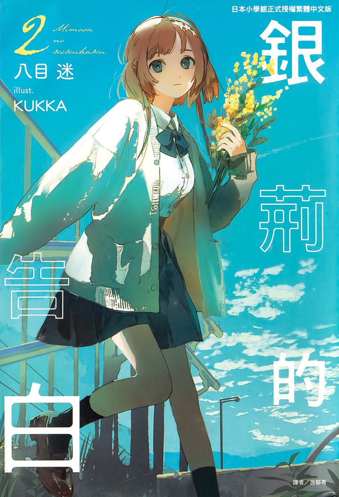 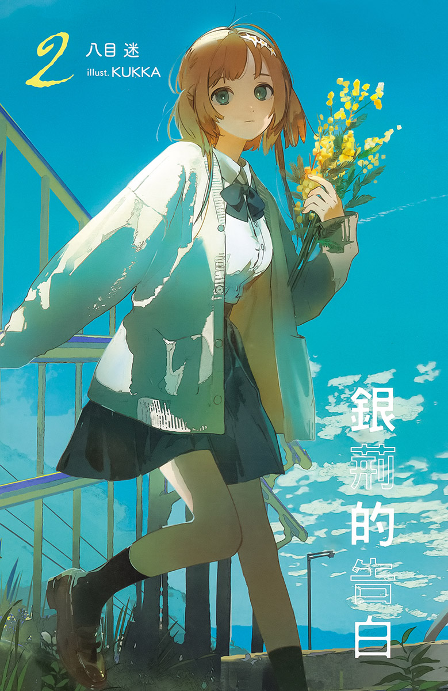 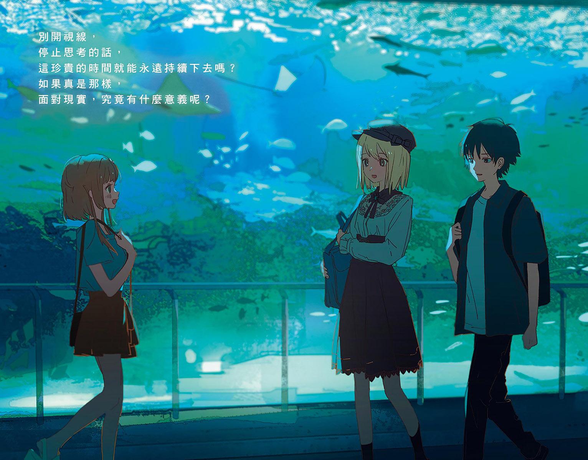 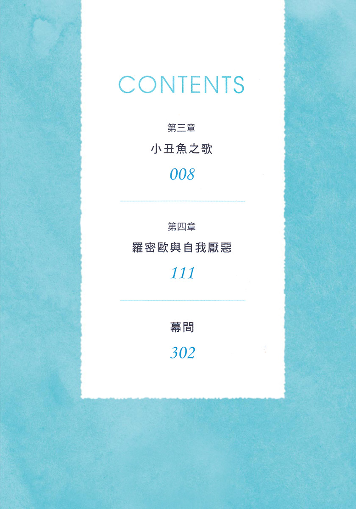
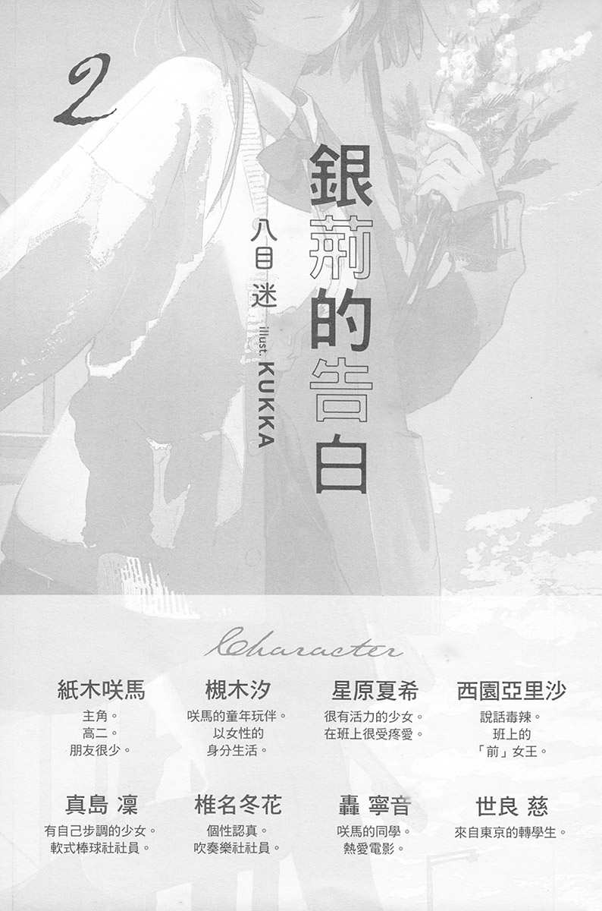
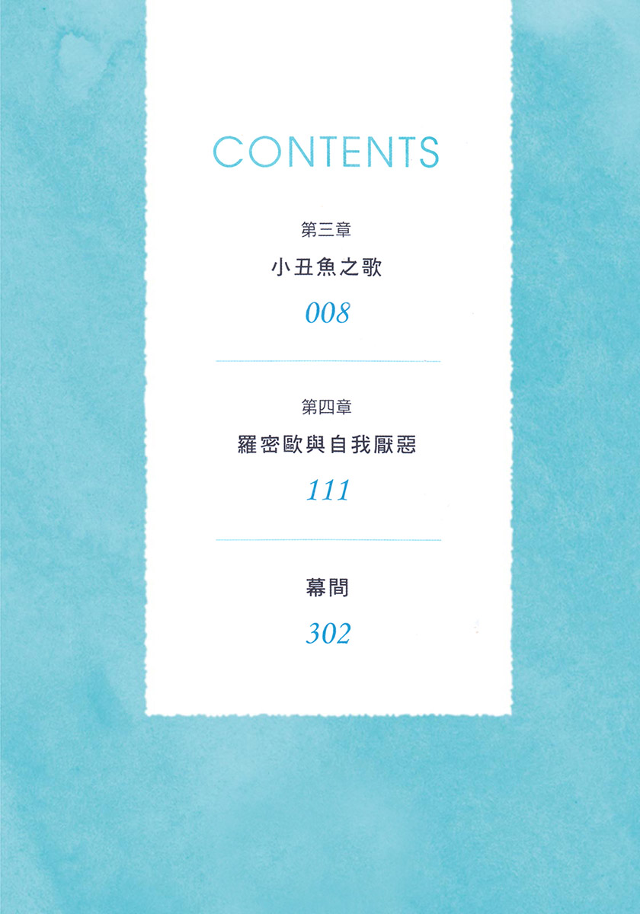
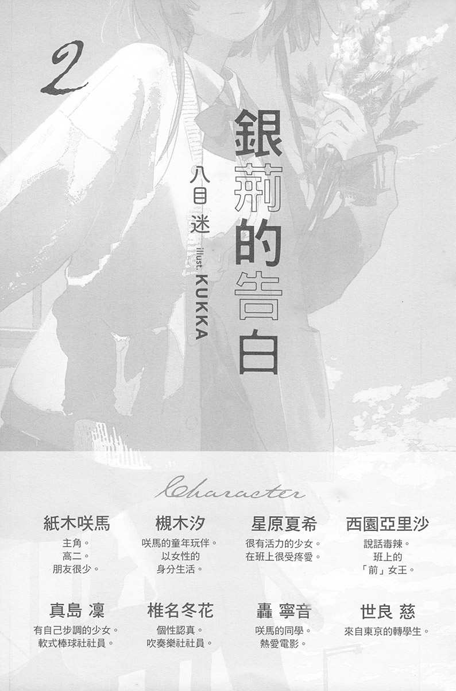
令人難以呼吸的炎熱灼燒著肺臟。
我在萬里無雲的青空下，沿著國道騎腳踏車。雖然才出門十分鐘，但我已經汗流浹背。瀏海貼在額頭上，握把因手汗而溼滑到握不緊，刺耳的蟬鳴也是使不舒適指數升高的原因之一。
「好熱……」
暑假正中間的八月五日。
說不定是因為我一直窩在開著冷氣的自己房間裡，所以才會變得這麼不耐熱吧。但就算這麼解釋，還是熱到不行。下午三點的陽光是近乎暴力的酷熱。我看向馬路中央，因紅燈而停下的汽車上方出現扭曲，彷彿只有那裡的空氣熱到融化似的。
我從車站前經過，又騎了一會兒，來到圖書館。我把腳踏車放在停車場，從籃子中拿起肩包。肩包裡是快到期的書，沉甸甸的，帶子的部分深深壓在右肩的肉裡。
走進圖書館，迎面而來的清涼空氣使我舒服到差點嘆氣。在櫃檯辦完還書手續後，我逛起圖書館，等身上的汗被吹乾。
我在書櫃之間的通道穿梭，來到文學區，發現喜歡的作家出的新小說封面。那是我一直想買的書。
——圖書館已經有啦？
要不要借呢？我煩惱著。全新的精裝小說很貴，對零用錢不多的我來說是筆不小的開銷。但因為是喜歡的作家，所以還是希望手邊能有全新的書。
要借嗎？
「紙木同學？」
「唔啊！」
我心臟猛地一跳，有那麼一瞬間，覺得自己雙腳離地了幾公分。
我倏地回頭。
映入眼中的是人類的頭頂。我把視線向下移，見到一雙又圓又大的眼睛。未脫稚氣的臉龐帶著些微的困惑。
是星原夏希。
「對、對不起。嚇到你了？」
「啊、沒有。沒事。」
變成只會用片語說話了。嗯嗯，我清了清喉嚨，發問：
「呃，妳來這裡做什麼？」
「做什麼……當然是借書啊。」
星原苦笑。說的也是，這是什麼蠢問題啊。
開始放暑假後，我和星原就沒見過面了。久違兩週的再會，使我相當緊張。我努力保持平靜，不想被星原發現自己的動搖。
「是說還真巧呢。妳常來圖書館嗎？」
「唔——算嗎？大概三個月來一次吧。」
「這樣啊。我大概一個月來一次。」
「哦，你很常來呢。」
「因為書買起來還滿貴的。」
「啊——說的也是。」
「是啊。」
有那麼一瞬間，兩人之間出現尷尬的沉默。
「……呃，妳來借什麼書？」
「啊，對了。我是來借你之前推薦的書。」
「哦，太好了。那些書我真的都很推薦，有機會的話一定要讀看看。」
「嗯，我很期待哦。」
「嗯嗯……對了，妳暑假時有去哪裡嗎？」
「大部分的時候都在家。頂多和朋友去買衣服而已……」
「啊——這樣啊。」
「雖然有想過去更多地方逛逛，可是……」
「哎……畢竟天氣太熱了。」
「是啊……」
「……」
極度空虛的對話。
不對不對，應該有其他可以聊的事吧？我吐槽自己，對自己居然這麼不會講話感到驚訝。我舔著臉頰內側，試圖尋找話題，但還是想不出可以聊什麼。
星原玩弄著頭髮，眼神無法冷靜似地游移不定。她特地和我說話，我卻把場面搞得這麼尷尬。我焦躁了起來，陷入輕度的自我厭惡中，我努力轉動大腦，尋找話題。
可是，浮現在腦中的，只有放暑假前一天發生的「那件事」而已。
似乎無法忍受這陣尷尬的氣氛，星原開口道：
「那我去找書了……在圖書館聊天不太好。」
「……嗯。」
我很洩氣，可是也不能硬拉著她繼續說話。應該在場面變得更尷尬前主動退開才對。
「那就下次見了。」
「嗯，再見。」
星原說完便離開了。
我有種親手趕跑大好機會的感覺，也許該更努力地拉著星原說話吧。但就算想那麼做，我也想不出能把她留下的話題。
沒辦法，只好放棄了。反正我有星原的聯絡方式，想聊的話隨時可以傳訊息。再說，也不能一直待在圖書館裡。
我以充滿無力感的手，拿起原本煩惱要不要借的小說，打算把這當成今天來圖書館的唯一收穫。
「紙木同學。」我正想前往櫃檯辦借書手續時，再次被人叫住。
我以腳跟為軸心轉身，見到以略帶僵硬的表情看著我的星原。原本湧上心頭的期待一下子轉變成緊張。看樣子，似乎不是什麼愉快的話題。究竟有什麼事呢？
「怎、怎麼了？」
我回問，「呃——」星原支支吾吾了起來。看來果然是難以啟齒的話題。我吞了吞口水，等她繼續說下去。
隔了好一陣子……
「對不起，沒事。」
欸嘿嘿，星原笑著這麼說。
「哦、哦。」
帶著點困擾的可愛笑容，使我鬆了一口氣。雖然那若有深意的態度令人在意，可是我沒打算深入追問。
再見。星原說完，躲藏似地走向書櫃的另一頭。
我前往櫃檯，辦好借書手續後離開圖書館。室外的熱氣，使原本閉起的汗腺全部打開。
我跨上腳踏車，朝家的方向前進。
冷靜下來後，我猜到星原想說什麼。
八成是汐的事。
放暑假的前一天，在通往屋頂的樓梯發生的那件事，應該讓星原很煩惱吧。其實我也一樣。雖然我想盡可能地不去回憶那件事，可是，也不能一直裝成沒發生過。
我一面踩著腳踏車，一面安靜地打開回憶的蓋子。
✽
放暑假的前一天。
我和汐，在通往椿岡高中屋頂的樓梯接吻了。
第一次接吻的感想是，臉好近啊。雖然說在嘴唇相碰的情況下，臉當然會離得很近，但還是比我想像中的近太多了。我對這個事實感到驚訝。
人類的臉部具有大量資訊。從年齡、美醜到健康狀況，甚至連細微的感情，都與臉部有關。而且臉不但具有強烈的個人色彩，還有大量的感覺器官。也就是說，光是一個吻，就能得到許多資訊。第一次接吻，而且對象是汐，使我的大腦因瞬間接受太多資訊而當機了。
柔軟的嘴唇、近在眼前的臉龐、撫觸鼻尖的髮絲與氣息、輕微的汗水味……資訊源源不絕地流入腦中，雖然嘴唇相碰的時間，只有短短的一剎那而已，可是體感上就像過了十秒那麼久。
先把臉移開的，是汐。他和我拉開距離後，倏地瞪大雙眼。
「對不起，咲馬，剛才那，不是……」
他聲音發顫，以犯了滔天大罪般的表情解釋起來。而我，因為還沒從混亂中恢復，也無法冷靜地回應他。
就在這時，星原出現了。
彷彿看準這一刻似的，她在最糟的時間點出現。
「因為樓下沒見到人，所以我往上找……呃，你們剛才……接、接吻，了……咦？」
星原也完全混亂了。
那也是當然的。她一直對汐有好感，我則是她傾訴感情煩惱的對象。不管是誰，在星原的立場看到我和汐接吻，當然都會混亂。
體感上，我們在這種膠著狀態，僵住了一分鐘左右。
率先打破沉默的，是星原。雖然她臉上還帶著緊張的色彩，但仍然理解了什麼似地，以拳頭輕敲自己掌心。
「原來如此！所以說，你們是……這種關係？」
這種關係是什麼關係？就算再不願意，我也猜得到她想說什麼。
不過汐的反應比我更快。
「不、不是的，夏希！不是那樣的。剛才那個……只是，意外哦。」
「原、原來是意外啊～！也是會有這樣的意外……呢？」
從那倉皇失措的態度，可以簡單地察覺星原的心情。
——該怎麼辦！？
在理解了眼前的狀況後，我感到無比焦急。心跳加快、冷汗直流。我拚命轉動大腦，想盡快解開誤會。
星原八成誤會我和汐在交往吧。必須解釋清楚才行。假如大聲主張「我和汐不是那種關係！」她就能接受了嗎？可是，如果否定得太用力，又像把才剛失戀的汐逼到絕境似的。既然如此，乾脆趁現在豁出去向星原告白，說我喜歡的是她？我想交往的對象不是汐，是妳——這麼說的話，只會讓情況更加混亂而已。你是白痴嗎？到底在想什麼啊紙木咲馬。不然，要怎麼說……
「呃、那個、對不起，我先回去了！再見！」
我還沒想出該怎麼反應，星原已經先道別了。她不等我們回答，說完立刻轉身離開。
我腦中警鈴大響。
絕不能在被誤會的情況下放暑假，不然我這個暑假會非常難熬。
「星、星原！妳等一下！」
我連忙向下衝，可是因為太匆忙了，踩空了最後一階。我還來不及做出防禦動作，就重重摔在轉角的地板上。
「咲、咲馬！？」
汐也跑了下來。
「好痛……」
我忍著疼痛，抬起頭，星原正停在樓梯中央，以擔心的表情看著我。這是好機會。我維持摔下時的姿勢，盡可能地擠出和善的笑容。
「我們三個人一起回去吧？」
我說道。語氣不自覺地有點強勢。
「嗯、好……」
也許被我的氣勢震懾了，星原有些被動地答應。
汐走下來。我拉著他的手，勉強起身，拍掉制服上的髒汙後，與汐、星原一起離開學校。
回家路上的事，我幾乎沒有印象了。
只記得三個人和平常一樣，推著腳踏車，邊走邊聊。可是我完全不記得聊了什麼。因為那已經是兩個禮拜前的事——應該說，是因為聊的內容太空洞的緣故吧。我們只是為了不陷入沉默，不斷發出聲音而已。
話雖這麼說，分頭回家前的對話，我卻記得一清二楚。
來到與星原分手的岔路後，我與汐停下腳步。星原繼續向前走了幾步，回頭看著我們。
「那……拜拜。」
「夏希。」
汐叫住正想跨上腳踏車的星原。
我移動視線，瞥了他一眼。汐的表情嚴肅到可說緊繃，額頭上冒出汗珠，握著握把的手微微發抖。
「咲馬喜歡的……不是男人，是女孩子哦。所以我和他，不是妳以為的那種關係。」
那句話是為了解釋誤會，但同時也像是為了斬斷自己的留戀而說的。
聽到汐的發言，星原悲傷地皺眉。
「……沒關係，我懂。不用這麼擔心我。我懂。可是我現在沒辦法好好思考……所以……」
她嘴唇發顫，想擠出話來。但不論再怎麼等，都只聽得到不成話語的氣音而已。最後，星原放棄似地抿著嘴，低下頭。
「星原……」
我正想說話，星原猛地抬頭，「啊啊夠了！」放聲大叫。那音量大到似乎周圍人家都能聽見，我和汐都被嚇了一跳。
「這種氣氛很不好！明天起就是暑假了！要開心一點！對吧！」
雖然她應該只是故作開朗，但不能糟蹋她的善意。
「是、是啊。星原說的沒錯。那種事再怎麼想也沒意義，還是來想暑假要做什麼吧。」
「……嗯。」
汐無力地點頭。
「那就再見了！」
星原跨上腳踏車，很快地騎遠了。
目送星原的背影消失後，我覺得身體一下子失去力氣。雖然努力地以正面的形式道別，但不管怎麼想，誤會八成沒有解開。
「對不起。」
汐以快哭出來的聲音小聲道歉。雖然他低著頭，看不見表情，可是哀傷與罪惡感，仍然紮實地傳達到我這裡。
「沒關係啦，你不用在意。」
「不行。」
汐立刻反駁，苦惱似地抱頭原地蹲下。沒人扶著的腳踏車倒在一旁，輪胎無力地空轉。
「那種事，根本不應該。」
悲痛的聲音從手臂之間傳出，揪緊我的心臟。
「我到底在做什麼啊。做了那種無可挽回的事……我討厭這樣的自己……」
「別再說了。」
我覺得很難受。我不想從汐口中聽到那種話，也對害他說出那種話的自己感到難堪。
我把腳踏車停好，在汐前方蹲下。
「別說那種會讓人難過的話。我一點不在意哦……不對，雖然不是完全不在意，可是……呃，不是……」
我想不出該怎麼鼓勵汐才好。明明比其他人看了更多書，卻沒有足夠的詞彙能安慰汐。但就算是這樣，我也沒辦法放著汐不管。
「我……」
總之先擠出主詞，然而我卻找不到能接的話。
該說什麼好呢？該怎麼說才是正確答案呢？我迷惘不已。
汐緩緩抬頭，以溼潤的眼睛看著我。是從無底深淵仰望蒼穹的眼神。我湧起伸手拉住他的衝動，努力找出話語。
「我……想好好，理解你的事。」
我吞了吞口水。
「不必勉強自己說出來。如果是很難開口的事，我會努力主動發現的。雖然我不夠可靠……不過，你別這麼消沉啦。」
汐咬著下嘴唇，再次低下頭。這種說法行不通嗎——我心想，沒想到汐從口袋拿出手帕，按在自己眼睛上。
「……已經，不要緊了。」
汐以濃重的鼻音說著，站了起來。雖然表情仍然憂鬱，可是看起來比之前冷靜多了。
我也起身，牽起倒在地上的腳踏車，交給汐後，跨上自己的腳踏車。
「先回去吧。今天應該很累了吧。」
「嗯……」
我們緩緩走著，直到抵達分別回家的岔路口為止。
在那之後，我們經常互相聯絡。與其說有事找他聊，不如說我想維持與汐之間的連繫。一開始時，兩人都有點尷尬，不過現在……至少表面上，我們已經能普通地對話了。
只是——
每當想起通往屋頂的樓梯上的那件事時，心情就會變得很複雜。
汐為何要那麼做呢？
其實我並不是猜不到原因。但正是因此，我才害怕知道真相。
✽
從圖書館回到家後，我拿起腳踏車籃子裡的肩包，走進家門。
屋子裡很悶熱，充滿熟悉的木造建築的氣味。我在洗手台擦了汗，喝了兩杯麥茶後，走向自己房間。
我爬上樓梯，向前走了幾步，打開房門。冷氣從門口流洩出來。我逃避暑熱似地，快步進入房間。
「回來啦？」
靠在床邊的汐對我說道。
他穿著能見到纖細鎖骨的寬大襯衫，以及平滑的半長褲，是去便利商店買東西時會穿的輕便服裝。乍看之下很中性，不過仔細看的話，會見到化淡妝的痕跡。他手中拿著剛開始看的文庫版小說。
「我回來了。」我回道。
「回來得有點晚，不好意思。我不在時有什麼事嗎？」
「沒有。這裡一直很安靜。」
「哦。」
我如此回道後，汐繼續看書。
房間被寧靜包圍。只聽得見冷氣的馬達聲與窗外的蟬鳴。
我把肩包放在書桌上，拉開有滾輪的椅子坐下，無所事事地盯著汐看。
我注意到他拿著書的雙手。手背的肌膚如白瓷般細緻。也許塗了透明指甲油吧，纖細的指甲看起來相當有光澤。
他舉起右手，把滑落的瀏海勾到耳後。就在這時，他似乎發現我的視線，轉頭看著我。
「……怎麼了？」
他困惑地發問。
「啊，沒事。我只是在想，你在我房間裡，感覺很奇妙呢。」
汐露出理解的神情，把視線移回書本上。
「我有時也會這麼想。」
大約一個星期前起，汐開始待在我家。
在家裡很難受——我收到了這樣的訊息。那是開始放暑假後，我像做每日功課般與汐互傳訊息的某一天，所收到的內容。雖然他沒有寫原因，可是我大概猜得出來為什麼。
汐的家庭有點複雜。母親與他沒有血緣關係，妹妹反對汐以女孩子的身分生活。可以想像汐沒辦法在自己家裡，得到心靈上的安寧。
既然如此，我該怎麼做呢？以童年玩伴的身分，發誓一定要與汐繼續往來的我，應該怎麼做呢？
我思考怎麼做才是最好的方法，幾分鐘後，我如此回覆：
『要不要來我家？』
一個小時候，汐終於回傳訊息，他答應過來。
從那天起，汐經常泡在我家。但其實來了也沒做什麼，就是看看書，玩玩電玩，或是寫暑假作業，在六點的鐘聲響起時回家。
我們之間有個默契，就是「不去提接吻的事」。只要不提起那件事，兩人就能平穩地相處，即使出現沉默，也不會覺得尷尬。有人在自己的私人空間休息，感覺意外地不差。
「你覺得這本好看嗎？」
我問道。
見汐看得很認真，我發問。那是我從藏書中推薦給他看的推理小說。
「嗯。我滿喜歡的。氣氛營造得很好。」
汐一面看小說，一面回答。推薦的書被喜歡，我覺得很開心。
「是吧？主角的設定很不錯呢。你現在看到哪了？」
「呃……一九六頁。」
「哦，就是刑警死掉的地方吧。」
咦？汐抬起頭。
「這個角色會死？」
「啊！」
我覺得臉上血液倒流。
「……呃，好像不是刑警，是律師吧……？」
「來不及了啦。」
汐苦笑。
我離開椅子，磕頭般地跪在地板上。
「對不起。真的很對不起。我太不小心了。」
「沒關係啦。這樣太誇張了。」
「不對。我害你失去看小說的樂趣之一，所以你儘管生氣。如果我被劇透，我一定會很不高興。讓我請客賠罪吧。你想吃哈根達斯還是什麼都——」
「沒關係啦。」
汐有些厭煩地說著，把書籤夾在書裡，放下書。
「我沒有那麼在意被劇透。」
「……是嗎？」
「這種小說的樂趣是享受過程吧？比起誰死掉，死前發生了什麼事更重要。當然劇透也有程度之分就是了。」
「可是事先知道之後的劇情，就不會那麼吃驚了。」
「是沒錯。不過只要劇情夠精彩，我就無所謂。」
唔唔，我跪在地上，雙手抱胸地思考起來。吃驚與精彩不同。我沒想過還能這樣區分。雖然我不能接受這種說法，不過能理解汐的意思。
「不對，可是，看推理小說時被劇透，是很致命的吧……？如果是其他類型的作品，我還能接受……」
「你在奇怪的地方很頑固呢。」
汐嘆了口氣。「好吧。」被我打敗似地說：
「不用到哈根達斯的程度，PAPICO冰棒就行了。這樣我就原諒你。」
「好。我下次買。」
我起身，坐回椅子上。
汐不再看書，開始滑起手機。也許是因為看書的興致被打斷了吧。撇開劇透的事，也不該在別人看書時插嘴講話。我自我反省了起來……不對，這樣也太客氣了吧？這裡是我房間，說幾句話應該沒關係。
「對了，我在圖書館遇到星原了哦。」
汐滑手機的手指頓了一下。「她怎麼樣？」他不看著我，如此問道。
「我們講幾句就分開了。雖然沒能好好聊，不過她看起來滿有精神的。」
「……這樣啊。」
略帶憂鬱的回應。看來還是別繼續聊這個話題比較好。提到星原，就會或多或少想起那件事。對汐來說，對我來說，都是不願回想的過去。所以目前還是別多提吧。等以後精神狀況比較有餘裕了再來面對。
「汐。」
「什麼事？」
「你想吃什麼口味的冰棒？」
「……巧克力。」
「瞭解。」
暑假還沒結束。
✽
今天，我和汐一起寫暑假作業。
時間是下午兩點。我喀喀地以自動鉛筆寫字，桌上放滿各種題庫與講義。窗外的蟬極有活力地唱歌，開著當背景音樂的電視，正轉播著甲子園的比賽。
解開一題後，我停下筆，看向電視。
晒得黝黑的投手臉部特寫出現在螢幕上。投手以嚴肅的表情看著打擊區投球。球從球棒旁飛過，穩穩落在捕手的手套裡。三振。三人出局。拉拉隊歡呼，攻守交換。
天氣這麼熱，還真有辦法一直待在大太陽下。我一面覺得佩服，又有點羨慕。身上沾滿汗水與塵土的選手們，應該都有想達成的目標吧。專注地朝目標前進的身影，對我來說非常耀眼。
「寫完了。」
我正沉浸於感傷中，汐突然出聲。
他放下筆，把背部靠在床邊。
「英文？」
「不，是全部。」
「咦？」
「暑假作業，全部寫完了。」
「太快了吧！」
我忍不住大叫。我當然會驚訝了。一個禮拜前，我們的進度明明是一樣的。而現在我只寫了不到一半而已。
「因為我在家時也會寫作業。其實這樣算慢慢寫了。」
「真的嗎？答案借我看。」
「不要。你自己寫啦。」
「那不然教我吧。我一直卡在數學作業。」
「……全校第一名也有不會的題目？」
「是啊。考前硬背的東西，現在已經忘了一半吧。」
「不要說得這麼理直氣壯啦。」
真拿你沒辦法。汐說著，移動到我身邊。洗髮精還是什麼的甜香，不經意地鑽入鼻腔。而且還夾雜著少許的汗水味。
接吻的記憶一下子回到腦中。心跳猛然加快，臉頰開始發燙。
——不行。別想起來。過度意識那件事，就沒辦法正面看汐的臉了。
我若無其事地調整呼吸，讓自己恢復平靜。
「哪邊不會？」
「啊、呃，這邊的三角函數。」
「這邊的話，把變數代換成——」
我逼自己把注意力放在作業上，以免想東想西。
我在汐的指導下，開始解起數學題。汐很會教人，該怎麼說呢，可以感受到他頭腦很好的事實。雖然我在期末考拿到第一名，但還是遠遠比不上汐。我確實地體會到這點。託了汐的福，我順利地解開題目。
「你上次期末考第幾名？」
我一面解著題目，以閒聊的語氣發問。
「第二名。」
汐若無其事地回答。
「真的嗎？太厲害了。」
「第一名的人在說什麼啊。」
「不對不對，我是因為有很多人幫忙，才能拿到第一名的。所以靠自己的實力拿到第二名的你比較厲害。」
「……沒什麼啦。」
汐興味索然地說著。對他而言，第二名也許不是什麼值得開心的名次。說不定他本來是想拿第一的。如果真的是那樣，我就太對不起他了。
「手停下來了。」
汐毫不留情地提醒。
「啊、抱歉。」
好嚴格。但這表示他很認真教我吧。我再次解起題目。
我安靜地解題。遇到不會的地方，就向汐發問。
四點過後，我順利寫完所有數學作業。
「寫完了！」
完美。一個人寫的話，今天肯定寫不完。得感謝汐才行。
「比想像中的早完成呢。」
「是啊。都是託了你的福。」
我向汐道謝。「沒什麼。」汐垂下眼簾，小聲說著。
我坐著伸了伸懶腰，感受帶著舒適的疲勞。既然已經達成今天的預定進度，接下來的時間就可以悠哉了。
「對了，要不要看電影？我昨天借了不少片子。」
本來打算晚上邊吃點心邊看電影的。不過和汐一起看的話，看完還能聊感想，似乎也不錯。
「好啊。但是會不會有點晚？已經四點半了。」
「那就挑短一點的片子吧。」
我從掛在書桌旁的包包中，拿出影音出租店的袋子，從裡面挑出一片光碟。那是幾年前得過大獎的電影，就類型來說，算是劇情片吧。
我把光碟放進錄放影機裡，螢幕上出現選單。接著只要選擇【正片】，就可以看電影了。
「要不要喝點什麼？我家有麥茶和蘋果汁，還有牛奶。」
「那就蘋果汁吧。」
「好，我去拿。」
我離開房間下樓。
走進廚房時，彩花正站在流理臺前喝牛奶。她把瀏海綁在頭頂，露出光滑的額頭。她今天似乎不必去社團，所以一直待在家。
一見到我，彩花就把杯子從嘴邊移開。
「看什麼看？噁心。」
「我才沒有看妳。」
罵人就像吃飯喝水似的。她的嘴還是一樣壞。
我從冰箱拿出蘋果汁，正想拿杯子時，「今天也有來嗎？」彩花發問。
「妳沒講主詞哦。」
「汐哥。」
「有。」
「哦。」
彩花喝完牛奶，把空杯子放在洗碗槽裡。
「……他和以前不太一樣呢。」
「妳幹嘛繞圈子說話？」
「你明明知道我的意思，裝什麼傻啦？故意的嗎？」
彩花不耐煩地啐道。我確實是故意的，但不是為了刁難彩花，而是不知該不該提起汐的性別認同的事。因為那是很敏感的話題，感覺上不能隨便講出來。
不過，從彩花的語氣聽來，她應該早就有所察覺了吧。既然汐已經開誠布公了，那麼告訴彩花，應該沒有問題。
我想了想，回答：
「確實有點不一樣。現在的汐，算汐姊吧。」
彩花瞪大眼睛，但是又立刻露出瞭然的表情。
「那傳聞是真的呢。」
看樣子，汐的事也傳到椿岡國中了。不過那也是當然的。畢竟鄉下地方的謠言傳得快，再說，汐在變成女孩子前，在地方上就已經小有名氣了。
對現在的汐，彩花是怎麼想的呢？小時候，她和我們常常玩在一起。就我看來，對當時的彩花來說，汐是「崇拜的哥哥」。
我拿出兩只杯子，放在托盤上，倒入蘋果汁。把之前買的洋芋片放在杯子旁。
「要不要去和他打個招呼？」
「啊？為什麼？」
「也沒有為什麼……你們很久沒見面了，汐看到妳，應該會很高興吧。」
彩花低下了頭。
「……還是算了。我不知道要和他講什麼。」
說的也是。一開始時，我也……不對，就算到現在，我也常這麼想。
「和平常一樣就行了哦。」
彩花抬眼問：
「……真的嗎？」
「是啊。不過妳可別對他講粗魯的話。」
「那種話我當然只會對自家哥哥說。」
哦，只會對我說嗎……我覺得有點哀傷，又覺得鬆了口氣。只有自己是特別的，讓我有點開心。不對不對，最後的感想不算。
彩花把目光從我臉上移開，以指甲刮了刮自己鼻子。
「既然和平常一樣……那我就去打個招呼吧。」
「那就走吧。」
我趁彩花改變心意前，捧著托盤走回自己房間。彩花走在我身後，解開綁瀏海的髮圈，以手指梳理頭髮。
「讓你久等了。」
我單手開門，走進房間。汐朝我看來。
「謝謝——咦？彩花？」
「好、好久不見。」
彩花隔著我，打完招呼後，也跟著走進房間。雖然假裝鎮定，但明顯看得出她很緊張。
「真的好久不見了。妳現在國二了？看起來變得很成熟呢。」
汐的聲音很明朗。總之這開頭應該不錯。
「謝謝。你也，那個……」
彩花含糊地說著，盯著汐打量起來。敏銳的她應該已經從化妝與氛圍，看出汐的變化了吧。她似乎在思考接在「那個……」之後的詞彙。
「有點不一樣了呢。」
她若有深意地發表感想。
至於汐……
「哈哈……是啊。我應該變了很多吧。」
他有些難為情地低下頭。
彩花臉上出現「糟了！」的焦急之色。
「不、不過我覺得你現在這樣也很好哦。看起來很漂亮。如果有你這樣的哥哥，不對，姊姊的話，我會很開心哦。我甚至想拿我哥跟你換呢。」
「喂。」
我在一旁吐槽。「總之！」彩花強行做出結論：
「雖然我哥很遲鈍，不過以後也請你多多指教了。」
她很快地說完，鞠了個躬，逃跑似地離開了。
我把托盤放在桌子上，在地板坐下。汐看著我，微笑道：
「彩花是好孩子呢。」
「她平常嘴巴壞得很哩。不過很伶俐就是了。」
「真好。兄妹感情這麼好……」
汐打從心底羨慕似地說著。
心臟瞬間揪了一下。那句話中的感情極為真切。雖然之前就發現了，不過汐和小操，這對兄妹——不，現在該說姊妹吧，總之，他們兩人的關係似乎一直沒有改善。但那是我無能為力的問題，所以我故意不深入多問。
家庭是離個人最近的聖域，區區外人不能隨意進入那個與社會隔絕的空間裡。更何況我只是個高中生，沒資格對汐的家庭關係指指點點。
因此，現在的我能為汐做的，就是珍惜與他相處的時間。
「下次找彩花一起玩吧。三個人的話，不管打電動或幹嘛都更熱鬧。」
「好啊好啊。」
汐的聲音很愉快。
既然彩花已經打過招呼了，就來看電影吧。
我操作遙控器，開始播放電影。趁著跑製片公司的片頭影片時，打開洋芋片的包裝，把開口拉大到隨時可以伸手拿的狀態。
電影平淡地開始了。
那是生活在遼闊大自然中的普通人們的故事。沒有花俏的動作場面，也沒有令人捏一把冷汗的驚悚劇情。但是角色刻畫得很細膩，使人在不知不覺中被劇情吸引。
看來是挑對片了。
我和汐時不時地吃著洋芋片，專心看著電影。
故事進行到大約一半時。
螢幕中的男女，氣氛變得很好。
這、這是……
我忍不住吞了吞口水。果不其然，兩人脫下衣服，極為自然地纏綿起來。平常逛YouTube時見不到的場面，占據了整個螢幕。
貨真假實的床戲。
唔哇，這可不妙啊……等一下……唔哇——！
我的臉開始發熱。完全沒有眼睛吃冰淇淋的爽快感，只覺得踩到陷阱。假如全家一起看電視上的電影時，畫面中出現床戲，氣氛一定會很尷尬吧。就是那種感覺。
快點結束快點結束。我在心裡祈禱，戰戰兢兢地偷看汐的反應——在心中一凜。
汐沒有臉紅，也不顯得尷尬。不只如此，他甚至露出索然無趣的表情。不知是不是我的錯覺，他的眼神很冰冷，似乎對這場面很厭煩。
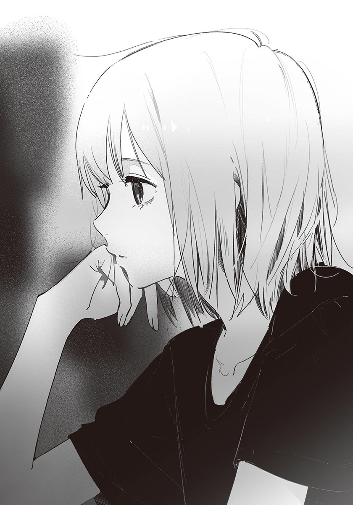他是這樣的反應啊。我在心中默默感到驚訝。感覺真不可思議。總覺得自己似乎稍微窺見了汐的本質。
就在這時，光芒回到汐的眼中。我把視線移回螢幕，床戲已經演完了。我專心看著影片，以免被汐發現我偷看他的事。
在那之後，劇情進入高潮。主角毅然面對長年有過節的對象，克服了過去的心理創傷。故事結束，開始跑起片尾名單。
「看了部好片呢。」
「是啊。」
汐滿意地點頭。雖然中間時因床戲而稍微分心，不過我也對電影的內容感到滿意。
「女孩保護羊的那一幕，拍得很好呢——」
汐愉快地聊起感想。床戲時露出的冰冷無趣的表情，似乎不曾存在過。我也擠出一些感想，可是，那時的汐的側臉，比電影中的任何場面都令我印象深刻。
——我果然和汐不一樣。
我悄悄地這麼想，再次體認到自己與汐之間的鴻溝有多深。話雖這麼說，但我並不因此覺得疏遠，反而因「就是這麼回事呢」，而有種豁然開朗的清爽感。
就在我與汐閒聊時，六點的鐘聲響起。
「啊，已經這麼晚了。」
汐收好東西起身，想把托盤與杯子拿到樓下。「我收就好。」我說著，送他到門口。
「你明天也會過來嗎？」
「明天不會。我要去諮商。」
對了，從七月開始，汐會定期去做諮商。不是因為有什麼特別煩惱的問題，是基於他的繼母雪姨的建議而去的。
「這樣啊，那下次見面就是後天了。」
「是啊。」
汐在門口穿上運動鞋，轉頭看我。
「再見。」
「嗯，再見。」
汐離開了我家。
後天是返校日。除了汐，還能見到星原。我有些期待，但是又擔心星原仍然在意接吻的事。除此之外，單純到校不上課，又讓人覺得特地去一趟很煩。
我按捺下各種思緒，走回自己房間。
✽
我騎在久違三個禮拜的田間小路上。
放眼望去，地面像是鋪著厚厚的翠綠色地毯似的。得到充分的陽光滋養的稻葉長得很健壯，不小心摸到的話，似乎會被割傷。
雖然早就知道了，不過今天也一樣酷熱。一想到教室裡沒有冷氣，我就覺得很憂鬱。
來到椿岡高中附近，學生也變多了。大部分人都和我一樣，顯得懶洋洋的。我混在那些學生中，進入校門，把腳踏車放在停車場。
「早。」「哦——好久不見。」「你晒黑了？」「我暑假作業一個字也沒寫哩。」「嗨～」
學生們的寒暄與說笑聲傳入耳中。我穿過人群，來到鞋櫃區，見到栗子色的頭髮。綁在左右兩側的馬尾，如小狗的尾巴般搖晃不已。
是星原夏希。
她正在換穿室內鞋。在這裡無視她的話就太冷淡了，「早。」我以豁出去的心情地向她打招呼。
星原朝我轉過頭，臉上略帶驚訝之色，很快地掛起笑容。
「早！好久不……其實沒有呢。上次才在圖書館見過而已。」
「是啊。」
我換上室內鞋，與星原一起前往教室。
許多學生在走廊上與我們錯身而過。第一節是全校集合，大部分學生都開始往體育館移動了。也許該走快一點。雖然我這麼想，但還是配合星原的腳步前進。
「紙木同學。」
星原有些拘謹地開口。我轉頭看她。
「在那之後，你有和小汐聯絡嗎？」
在那之後，指的是休業式那天吧。這麼說來，我還沒告訴她汐來我家的事。
「與其說聯絡，應該說他常常來我家吧。」
「咦？是這樣嗎！？」
星原停下腳步，露出極為驚訝的表情。
啊！我差點在停下腳步時叫出聲音。這件事說不定不說比較好，因為星原可能會覺得被排除在外了。
「沒有啦。雖然說來我家，不過也沒特別做什麼，只是懶懶散散地打發時間而已……所以才沒有找妳哦。」
「打發時間，具體而言是做些什麼呢……？」
咦？重點在那裡嗎？我有些疑惑，但還是照實回答：
「就是寫寫作業，或看看電影……之類的。」
「這樣啊。」
星原含糊地應聲。眼神似乎有點狼狽。
看樣子，似乎該說明得更清楚才好。可是該從哪邊說起呢……我正在煩惱時，「嗯！」星原突然用力點頭。
「既然你們感情很好，那我就放心了。」
她露出穩重的笑容，接受了我的話。不過我有種誤會變得更嚴重的感覺。
果然還是該說清楚才對。我正想開口——
「早。」
身後傳來寒暄的聲音。
我與星原同時回頭。
汐站在我們身後，灰色的眼睛交互看著我與星原。雖然表情很平靜，可是緊握著書包肩帶的手，透露了他的緊張。說不定他一直在找和我們說話的時機。
「小、小汐。早。」
星原的語氣有點僵硬。
幾拍之後，「早。」我也回應道。雙方自然而然地找不到話題接話。
——好尷尬。
我想，包含我在內，三個人都有這種感覺。如果只有我和汐兩人倒還好。但是加上星原，就很難自在得起來。
一旦陷入沉默，就無法不感受到周圍的視線。往來於走廊的學生們，都偷偷瞧著我們。
「總、總之，先去教室吧。」
繼續僵在這裡，只會更引人注目。再說，全校集合的時間也快到了。
汐和星原都同意我的話，三個人一起往教室前進。儘管如此，沉重的氛圍仍然驅之不散。
✽
集會進行得很快，應該是為了預防中暑吧。校長在三分鐘內結束致辭，司儀迅速地發表各社團的活動成績，不到一個小時就散會了。
「唷，紙木。」
「嗯。」
離開體育館，回教室的途中，蓮見和我走在一起。自從休業式後，我們就沒見過面了。他還是和以前一樣，表情慵懶，沒有霸氣。
蓮見邊走邊打量著我，發現什麼似地皺眉。
「你暑假時一直窩在家裡對吧？」
「唔哇，你怎麼知道？真恐怖……」
「因為你完全沒有變黑。」
我交互看著自己與蓮見的手臂。仔細看的話，會發現蓮見比我黑了不少。他是桌球社的社員，即使放暑假，還是得騎腳踏車到學校練習。
雖然晒黑不等於優秀，但我還是冒出了奇怪的競爭意識。
「我先聲明，我可不是天天窩在家裡哦。我有去圖書館或租片子。」
「那不算有出門啦。」
「啥——？不然你呢？啊，去社團不算。」
把社團練習算在「出門」裡的話，我就沒有勝算了。想到這裡，我追加了條件。
「我有和社團的朋友去烤肉，也有去祭典玩。」
「哦，這樣啊……」
知道蓮見和一般人沒兩樣地享受暑假之樂，我有點消沉。其實我早就發現了，雖然蓮見的存在感不強，不過他的高中生活比我充實多了。
「你幹嘛消沉啊？」
「因為你過得比我充實嘛……」
「嫉妒了？」
「不要說出來啦。這樣我就更悲慘了。」
總覺得兩腿變沉重了，連上樓都很辛苦。
「比起一直窩在家，出門玩樂才等於充實，這種區分法太籠統了。」
「咦，是這樣嗎？」
「只是享受的方式不同而已。在家看書或看電影，也算過得很充實，不是嗎？」
「這……也對。」
應該說，本來就該這樣。我覺得有點難為情，像自己的偏見被指出似的。不過有反省才有進步，在錯誤中學習也是很重要的事。
我們抵達二年A班的教室。
過了一會兒，伊予老師也走進教室。她穿著白襯衫與合身的長褲，袖子捲到手肘。走路時，綁在腦後的馬尾搖晃不已。
伊予老師帶著一疊影印紙，站在講桌前拍手喊道：
「好了——大家快點回位子上吧。」
學生們不再聊天，回到自己的座位上。伊予老師以眼神掃視同學們的臉，笑了起來。
「很好，沒有人缺席！木田變得很黑呢。歌島，你又長高了？啊，汐的頭髮也稍微變長了！看到大家都有成長，我覺得很高興哦。」
伊予老師以發表感想代替點名。居然有辦法針對每個人說不同的感想，我覺得很佩服。輪到我時……
「紙木……沒什麼變呢！」
我得到一段聽了也開心不起來的感想。不過確實是這樣。
漫長的點名結束後，伊予老師把影印紙發給坐在最前排的學生，讓他們把紙往後傳。
「大家都知道，十月有文化祭。雖然離文化祭還有兩個月，可是不趁現在開始準備的話，到時候會來不及的。所以我們今天要選出班上的文化祭執行委員，以及討論文化祭時要做什麼。」
我看著傳到手中的影印紙。
紙上印有「希望舉辦什麼活動」的空格，下方列出咖啡廳或話劇等常見的活動作為參考。
「雖然會以統計的結果為主，不過最終決定權還是在學校這邊。如果每班都想做樂團表演，就不是文化祭，而是音樂祭了。題材稍微重複沒關係，基本上還是會以你們想做的為主。」
伊予老師看了看自己的手錶。
「從現在開始，給你們十分鐘思考。可以和其他人討論，不過要快點決定哦。好，開始！」
老師一說完，教室裡立刻變得熱鬧無比。
「你想做什麼？」「最好是輕鬆的。」「咖啡廳好了，穿女僕裝的那種。」「賣可麗餅怎麼樣？」「我很會做章魚燒哦。」「我想彈吉他！」
大家紛紛說出自己的想法，看來每個人想做的事都不一樣。
一年級時，我待的班級是賣炒麵。由於我只有幫忙製作招牌而已，等於幾乎沒有做事。今年不知道會如何。
應該和去年一樣吧。
反正一定是做幕後工作，不如選做起來輕鬆的。既然如此，就選不需要做太多事前準備的餐飲類吧。熱狗煎起來應該很簡單。好，就這個吧。
我花了不到一分鐘，就把回答寫在紙上。大多數人似乎還沒決定好要寫什麼，星原露出「欸～要做什麼才好？」的表情，與椎名交換想法。她們感情很好，座位又很近，下課時經常可以看到兩人在聊天的場面。
十分鐘後，「時間到——」伊予老師出聲。坐在後方的學生開始把影印紙往前傳。
「之後就由老師們規劃了。就算決定的內容和自己想要的不一樣，也別抱怨哦？」
她一面整理影印紙，
繼續說下去：
「接下來要選出文化祭的執行委員。先問一下，有沒有人自願呢？」
原本吵鬧的教室瞬間安靜下來。
伊予老師苦笑。
「沒有人嗎～不過今天得決定人選才行。如果沒有人自願，就由老師決定了哦。這樣好嗎？」
同學們議論紛紛。
誰都不想自告奮勇。因為執行委員是很麻煩的差事。椿岡高中的文化祭一直小有規模，準備起來相對累人。
執行委員是由二、三年級擔任，所以目前沒人有過具體的經驗。可是每個人都看過去年學長姊們在校園內忙碌奔波的身影，知道那不是能以半調子的心情參加的工作。特別是本來就有參加社團的人，或有在打工的人，更是要慎重考慮。
班上的氣氛變得有點緊張。到處都有「你來做啦」之類的聲音，同時也附帶著「不要」「麻煩死了」「不然你來做啊」等等的回應。到頭來，還是沒有人自願報名。
「沒人自願嗎——？真沒辦法，那就由老師……」
伊予老師的話只說了一半。
她與班上同學的視線，聚集在一隻朝天舉起的手上。舉手的人物，令人感到意外。
「夏希，妳想做嗎？」
伊予老師加以確認地發問，星原放下手，有點沒信心地笑著。
「呃，因為沒有人想做，所以我想挑戰看看……」
「哦——很可靠呢！那就是妳了！」
加油！我們會幫妳打氣的！女生們鼓勵著星原。「謝謝～」星原靦腆地道謝。
真稀奇。我心想。就我所知，星原不是那種走在最前方，發揮領導能力的類型。但也不能因此斷定她不適合。星原有很多朋友，很有人緣，就算稍微出錯，周圍的人應該都會伸手幫忙。
「那就剩男生了呢——有沒有人想做呢？」
伊予老師發問，班上再次吵鬧起來。
「既然星原想當，我也報名好了」的想法閃過我腦中，但是又立刻消失。如果我在這種時候舉手，很有可能被懷疑「那傢伙對星原有意思吧？」再說，我也不擅長走在前方領導人。
就在我決定保持觀察者模式時，汐不知為何往我這邊看來。我們一對上視線，
他就朝我揚了揚下巴，似乎是要我舉手報名。
咦？我差點發出聲音，反射性地搖頭。「我做不到啦！」如此強調。雖然很高興汐想撮合我和星原，可是我沒有信心能做好執行委員的工作。
我的意思似乎有正確地傳達給對方，只見汐皺起眉頭，將頭轉回前方。他從口袋拿出手機，在桌子底下操作起來。
嗡——幾秒後，我口袋中的手機發出震動。
不會吧？我心想，拿出手機一看，果然是汐傳來的訊息。
『想接近夏希的話，還是報名比較好哦。』
我動搖了。
到底該不該報名？成為執行委員的話，說不定能解開星原的誤會，不只如此，甚至有機會和星原增進感情。可是我怕被其他人投以好奇或懷疑的視線，而且那樣一來，會變得很忙。沒錯。成為執行委員的話，一定會變得很忙，會有做不完的事，每天在學校留到很晚。那樣一來，就沒辦法三個人一起回家了。就算能接近星原，和汐相處的時間也會因此變少。
……嗯？
這是在星原或汐之間二選一的問題嗎？
不對。當然不是。仔細想想，執行委員確實很忙，但也不可能每天在學校留到很晚才回家。因為一定有同時參加社團又擔任執行委員的人。所以，就算我成為執行委員，應該也不會和現在差太多……
想到這裡，我發現一件事。
我有不該擔任執行委員的理由嗎？
擔心變忙、擔心他人的目光，都只是害怕風險而找的理由而已。既然我喜歡星原，就該只為自己想。否則是沒有機會的。
決定了。
我不再迷惘，緩緩舉手。
「我、我想報名。」
聲音小到連我自己都覺得可笑。
班上同學一齊朝我看來。我果然很不習慣受到注目，總覺得渾身發癢，忍不住露出卑微的笑容。「很好！」至於伊予老師則很開心。
「就是該這樣！那男生就決定是紙木了！之後要做什麼時我會再找你們的，開學後要加油哦～！」
已經無法回頭了。不過這麼做應該是對的。成為執行委員的話，就能常和星原說話，有機會化解原本尷尬的關係。只能這麼希望了。
不論如何，返校日要做的事已經做完了。伊予老師簡短地道別後，宣布：「放學！」
同學們紛紛鬆懈下來。我起身將書包掛在肩上。星原與汐似乎在說什麼，幾秒後，星原朝我走來。
我心中湧起期待。是基於執行委員的身分，來和我打招呼的嗎？還是找我一起回家呢？我有種等待飼主的小狗般的心情。「對不起。」可是與料想中的不同，星原面帶歉色地開口：
「其實今天，我已經約好要和其他人一起回去了……」
我完全沒想到她會這麼說。而且，正因為我有所期待，所以打擊更大。
「是、是這樣啊。我知道了。」
「對了，執行委員的事，我們一起加油吧。再見。」
「嗯……再見。」
星原轉過身，在桌子之間穿梭，與其他女生會合。一群人有說有笑地離開了。
我垂頭嘆氣。
雖然不是非和星原一起回去不可，但「她是不是想和我保持距離？」的感覺令我難受。也許這只是我想太多，可是負面的想法壓迫在胸口，使我的情緒愈來愈低落。
「……你還好嗎？」
汐來到我身邊，擔心地發問。我的消沉似乎表現在臉上了。
「沒事。謝謝你的訊息。我覺得幸好有報名執行委員。」
「雖然有點多管閒事……但這是和夏希拉近距離的好機會。」
「是啊。雖然不知道能不能順利。」
「一定能順利的。」
汐溫柔地微笑。
我也以笑容作為回應，和汐一起走出教室。
✽
陽光太過毒辣，我和汐沒講太多話，高速騎著腳踏車。回過神時，已經來到岔路口，所以我們直接分頭回家。
回到家，我打開門，穿過冒著熱氣的走廊，拉開領帶，把制服和襪子丟進洗衣機裡。接著來到廚房喝麥茶，煮素麵當午餐。
「……沒味道。」
我吸著麵條，喃喃自語。早知道就該切點蔥或紫蘇當配料。
吃完麵，我把碗盤泡在流理臺，回自己房間。
我調低冷氣溫度，躺在床上，大大打了個呵欠。也許因為剛吃飽吧，一躺下來，就變得很想睡。
今天汐不會來我家。我合上眼皮，緩緩放開意識。
手機的震動聲把我從睡眠的深谷拉回。
我微微睜眼，偏西的陽光射入窗口。現在幾點了？由於冷氣溫度設定得很低，我覺得有點冷，把腳尖塞進被子裡。
是說，得接電話才行。
我努力挺起灌了鉛般的身體，揉著睜不太開的眼睛，從枕頭旁拿起手機。
「喂……」
『啊，咲馬，你現在能講電話嗎？』
穿透昏沉腦袋的低沉聲音。是汐。保險起見，我看了一下螢幕上的名字。確實是汐。
「哦、嗯。可以。」
『你在睡覺？』
「是啊。你居然知道。」
『因為聲音聽起來很想睡。對不起，吵到你睡午覺。』
「沒什麼啦。是在這種時間睡午覺的我不好。有什麼事嗎？」
汐從來沒有主動打電話給我過。在這之前，他都是傳訊息和我聯絡。
『你後天有事嗎？』
「沒。沒什麼特別的事。」
『其實我在想，要不要約夏希，三個人一起出去玩。』
「哦，星原……咦？星原？三個人，除了你之外，還有誰？」
『當然是你啊。從這段對話聽來，還能有別人嗎……你睡呆了？』
「不……我現在已經醒了。」
三個人一起出去玩。總算出現了帶有暑假感的活動，令人雀躍不已……應該是這樣的場面，但我只覺得困惑。
「怎麼這麼突然？」
汐頓了一下，回答：
『因為你和夏希看起來有點生疏。對你來說，那樣應該不是好現象，而且我也希望你們能和以前一樣普通地說話。說起來，害你們變尷尬的原因是我……』
先不管是好是壞，汐做的事，確實嚴重影響了我和星原。雖然我不打算怪罪汐，不過這是事實。
『……我多管閒事了嗎？』
「沒有沒有沒那回事。我們去玩吧，看是要爬山還是去海邊我都可以。」
『是嗎？那就好。』
汐的聲音多了幾分安心。
「那後天要去哪玩？」
『我就是來和你討論這部分的。你有什麼想去的地方嗎？』
「想去的地方……」
對我來說，去哪都可以。就像剛才說的，要爬山或去海邊我都無所謂。但既然有汐和星原在，就得慎重考慮地點了。
海邊的難度似乎很高。雖然海水浴場可說是夏天的代名詞，但總覺得只能和感情夠好的朋友一起去。是因為得穿泳裝嗎？
泳裝……老實說，我很想知道星原會穿什麼樣的泳裝。不過面對穿泳裝的星原，我一定會緊張到不行。那麼汐的泳裝呢？雖然不知道他會不會換上泳裝，但他的腰細到令人擔心，仔細挑的話說不定有適合的……
『想好了嗎？』
「還沒。我在煩惱泳裝……」
『泳、泳裝！？』
糟了！不小心把奇怪的想像說出來了。
「沒有啦，我不是認真的。我只是有點在意而已，你不用在意，忘了剛才的話吧。」
『好、好……？』
我含糊帶過。總之不考慮去海邊。就各方面而言，對現在的我來說都太刺激了。
「呃，那你呢？你有想去的地方嗎？」
『沒有特別想去的……啊，不過室內比較好。因為戶外很熱，而且夏希也不擅長運動。挑可以在室內遊玩活動的設施，她應該會比較開心。』
「原來如此。」
那麼就把範圍縮小到室內吧。
去哪好呢？看電影？打保齡球？唱歌？感覺都很普通呢。既然是暑假，我不想去平常放學後就能去玩的場所，想去遠一點的地方。
這樣的話……
「啊！」
我靈光一閃，有種拼圖的零片完全對上的感覺。
「隔壁市的水族館，你覺得怎麼樣？」
幾個月前，我在報紙上瞄到水族館全面翻新的新聞。那時雖然有點想去，可是沒有能約的朋友，於是作罷。
『啊，好像不錯哦。聽說有很多人去。』
「是啊。水族館裡很涼爽，也沒必要活動身體。而且我還滿喜歡看魚游泳的。」
『哦，聽起來很適合呢。那就去水族館吧。我今晚再問問夏希。』
「謝了。」
『詳細的部分決定後，再跟你聯絡。』
好。我說完，結束通話。
我躺回床上。有多少年沒去過水族館了？真是期待。希望星原肯來——雖然誤會還沒解開，讓人有點不安就是了。
算了，反正船到橋頭自然直。
「吃飯了！」彩花的聲音從樓下傳來。已經是晚餐時間了。我關掉冷氣，起身下樓。
✽
兩天後，我站在椿岡車站的閘門前。
時間是九點五十分。由於已經過了通勤的尖峰時間，車站裡只有零星的行人。雖然在建築物裡晒不到陽光，但還是很熱。從車站裡向外望去，陽光強烈到彷彿連空氣都發白了。
我看了看手機，快到集合時間了。我張望四周，一名戴著報童帽的人物朝這邊走來。
那人穿著有緞帶的白襯衫與細腰裙。身上的氛圍與其他人明顯不同。在這種鄉下都市裡，可愛到令人覺得不自然的人物，就是汐。由於他把帽簷壓得很低，所以我沒有立刻發現是他。
汐停在我前方，稍微提起帽簷。
「對不起，等很久嗎？」
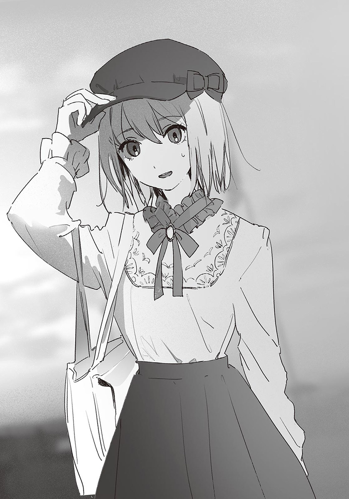「沒有。我也剛到。」
我一面回答，一面打量著汐的服裝。與學校制服或來我家時的服裝不同，是非常……像女孩子的打扮。因為完全感覺不到彆扭的地方，所以比起「好可愛」的感想，我的第一個感想是驚訝。
「真好看……我差點認不出是誰了。」
「是、是這樣嗎？」
汐有點沒自信地縮著肩膀，揪著裙子。
「我本來想穿得更輕便點的，可是雪姨一直要我穿這成這樣……會、會不會很奇怪？我覺得有點太可愛了……」
「不會哦。假如有人說不好看，他才該去掛眼科。」
我說完，覺得這話有點耍帥，難為情了起來。汐的打扮太過可愛，再加上很久沒和朋友出門玩，說不定是因此，我的情緒才會無意識地高昂吧。
「是嗎？這樣子好看嗎……」
汐細細品嘗似地說著，忽然別過頭，似乎是在害羞。
很女孩子的反應呢。我心想。
如果是以前的我，應該會因汐的身體與內在的落差而難受吧。可是現在不一樣了。我能由衷地讚美汐的打扮。自己的觀念能有這樣的轉變，我有點開心。
「今天天氣很好呢。是說既然是去水族館，天氣好不好都沒關係就是了。」
汐裝模作樣地咳了一聲，把頭轉回來。
「晴天當然還是比下雨好。不過這麼熱，還是有點受不了。」
我說著，發現汐的臉上連一滴汗水都沒有。
「家人開車送你來的？」
「？不，我是騎腳踏車來的。」
「可是你完全沒有流汗呢。」
哦，汐明白了我的意思。
「因為我在身上貼了涼感貼。我討厭流汗。」
「哦——我完全沒發現。是說涼感貼不是用來貼額頭的嗎？」
「也有貼在身上用的。比如脖子後面。你看。」
汐說著，撩起後髮，讓我看後頸。被領子遮住的部分確實貼著涼感貼。原來如此，這麼做似乎真的能變涼呢。下次我也試試。
……雖然完全無關，不過汐的後頸很漂亮呢……
肌膚白皙，細緻又有光澤，也許有特地修剪吧，髮際整齊又乾淨。除了止汗劑之外，還微微混著洗髮精的甜香。
就在我看呆時，嗡——手機的震動聲響起，使我嚇了一跳。雖然我不是抱著邪念看汐的，但還是覺得緊張。
汐從裙子口袋拿出手機。
「喂……嗯，我現在和咲馬在閘門……好。」
汐按掉通話鍵朝我看來。
「夏希說她快到了。」
「哦、哦。」
聲音不由自主地飄高。你到底在動搖什麼啊？
冷靜點。我如此告訴自己。汐指著閘門。
「差不多該進去了。」
「嗯。」
星原會搭電車到椿岡站，在月臺與我們會合，再一起轉車。
我們先到售票機買票。我把千圓鈔送進售票機時，汐在旁邊儲值IC卡。準備好後，我們進入閘門。
與星原會合後，我們將會搭電車前往離水族館最近的車站。由於下車後還要走一小段路，所以抵達水族館時，應該快中午了。
我在腦中大略地計算時間，汐以手肘碰了碰我。來了。汐說著，看向另一邊的月臺。
我也跟著看了過去，見到朝這邊走來的星原。她穿著素色的上衣與褲裙，小小的斜背包隨著步伐晃動。發現我們後，星原笑了起來，低調地朝我們揮手。
妳是天使嗎？我心想，按捺著忍不住想上揚的嘴角，緩慢地揮手。
「對不起！讓你久等了，紙木同學——小汐！？」
發現我身邊的人是汐，星原瞪大眼睛。
「不會吧！怎麼這麼可愛！適合到嚇我一跳呢！」
「謝謝。妳的衣服也很可愛哦。」
「才沒有呢。和妳比的話差多了。」
「不會，很好看哦。」
「咦～是嗎？」
星原靦腆地搔頭。每個動作都這麼可愛……我正想著，星原與我對上目光。她轉身對著我，擺姿勢似地將身體微微斜向一旁。
「欸嘿嘿，好看嗎？」
過於眩目的存在，使我感到神聖。
「……您、您真的非常好看。」
「為什麼用敬語啊！」
哈哈，星原發出銀鈴般的笑聲，我覺得很難為情。
星原笑了一陣子，「啊！」想起什麼似地叫了一聲。
「下一班車快出發了，得快一點。」
說完，她快步走了起來。我和汐跟著她前進。
氣氛比想像中的融洽。我本來已經做好場面會很尷尬的覺悟了，不過目前完全沒有那種感覺。汐應該也覺得很意外吧。說起來，他之所以會提議出門玩，就是想化解我和星原之間的疙瘩。
說不定，那疙瘩只是我和汐多慮了。想到這裡，我的心情一下子輕鬆了起來，同時，胸口也湧上一股難以形容的喜悅。
今天就別想那些麻煩的事，放開玩吧。
電車門要關了——我們在廣播聲中衝進電車裡。車廂內的冷氣很涼爽，乘客不多，大多是一家人或國中生。
咻——電車門發出消氣般的聲音後關上，電車開始前進。由於我們過兩站後要轉乘快速列車，所以並不坐下，而是站在車廂的連結部位附近。
星原「欸欸」地發問：
「這些衣服是妳自己選的嗎？」
「雪姨選了很多衣服給我……我再從其中挑出覺得適合自己穿的。」
「哦～很有品味呢！看起來就像模特兒……啊，對了！」
星原想到什麼好點子似的，興沖沖地把自己手機按在胸口。
「我可以拍照嗎？」
果然。我心想。看汐穿成這樣，當然會想拍照留念了。不過汐似乎完全沒想到會被這麼要求，露出極為驚訝的表情。他視線游移，扭著身體回答：
「嗯，如果只拍幾張的話……」
「哇——謝謝！我要拍了！」
啪嚓！星原按下快門，斜斜地拍下汐的站姿。雖然汐的表情有點緊張，但還是美得像幅畫。
「哦～很讚哦。這樣的話就想再拍張拿下帽子的版本……」
星原以貪心的眼神看著汐。
「好吧……」汐不情不願地拿下帽子。
頭髮在拿下帽子的瞬間輕揚，又立刻被重力拉下。汐輕輕甩頭，絹般的髮絲看起來閃閃發亮。
好美啊。我心想。是與看到花朵或星空時相同的心情。
「好棒！好有氣勢！」
啪嚓啪嚓啪嚓。星原連按快門。「接下來看鏡頭」「用無聊的表情看窗外」開始做起各種要求。汐雖然有點不願意，但還是半推半就地照做了。
拍了十張左右的照片後，星原總算解除拍照模式。
星原回顧著照片，滿意地點頭，對我說：
「之後再把照片傳給你哦。」
「好。」
星原笑容滿面地盯著我看之後，把目光放回手機上。
——嗯？
剛才的空檔，是什麼意思？
說完「把照片傳給你哦」之後，有大約一秒不自然的停頓。我臉上有什麼東西嗎？保險起見，我以窗戶代替鏡子檢查自己的臉，可是沒發現早餐的渣渣或睡到亂翹的頭髮。
……是我想太多了嗎？
「……好像有很多人在看我們……」
汐不安地說著。
我若無其事地看了看周圍，幾名乘客正打量著汐。「是外國人嗎？」「是模特兒吧。」「臉好小哦～」幾名國中生模樣的女生們，壓低聲音討論著，不過全被我們聽見了。
「因為剛才拍得太正大光明了嘛。」
「感覺好丟臉……」
汐再次把帽簷拉低。「要更有自信啦～」星原為他打氣。
電車離開椿岡車站後，過了兩站。
我們在第三站下車，改搭正停靠在月臺旁的快速列車。車廂裡的人比剛才那班電車多。由於接下來得花將近五十分鐘，才能抵達目的地的車站，所以我們決定找地方坐下。
我們在車廂中前進，找到一個面對面的四人座位。走在最前方的汐先坐進去，接著是我。我煩惱了一下，選擇在汐的對面坐下。
既然要把汐當女生看待，就該讓星原坐他身邊。再說，雖然我今天完全忘了這件事，不過星原對汐有好感。所以更該讓星原坐在汐旁邊。
我是這麼考慮的，但星原卻僵住了。她嘴唇呈現「咦？」的形狀，以目光來回看著我和汐。
「夏希？」
發現異常的汐發問，星原回神，苦笑地看著我。
「真是的，紙木同學不該坐那邊吧？」
她以責備小孩子般的語氣對我說。
我困惑了。
我本來以為，雖然有點猶豫，但星原還是會在汐旁邊坐下。沒想到會被她說「不該坐那邊」。她不想和我或汐坐在一起嗎？還是覺得坐在汐身邊會難為情呢？
或者。
是在顧慮我呢？
因為誤會了我與汐的關係，所以想撮合我們嗎？
完全不懂。但現在還是別猜測她的想法比較好。如果問她原因，氣氛說不定又會變尷尬。
「也是。那我就坐這邊吧。」
我裝成不小心搞錯，改坐到汐的旁邊。
也許對星原的態度有什麼想法吧，汐原本想開口說話。但是見星原坐下，他只好放棄似地抿緊嘴唇。
匡噹，匡噹。電車開始前進。窗外的景色緩緩後退。
「今天天氣真好～水族館有在表演海豚秀嗎？」
星原若無其事地和我們聊了起來。
「我記得有。」汐回答。
「要去看嗎？」
「唔——可是我不想被弄溼……」
「坐在後面就沒問題了。我想看海豚，還有虎鯨！」
星原開心地說著，汐也以自然的態度和她說話。
我有一種在遠方眺望他們的錯覺。兩人的心情都切換得好快，彷彿從來沒發生過任何事似的。不，說不定真的沒有發生過任何事，只是我想太多而已。
一直疑神疑鬼很累，於是我不再思考，也加入對話。
「到了——！」
星原站在目的地的水族館前，用力高舉雙手歡呼。
水族館位在離車站徒步約十分鐘的地點。門口設置了巨大的鯨魚雕塑。這一帶靠海，空氣中微微帶著潮水的氣味。由於是暑假期間，客人不少，售票口前已經有好幾公尺的人龍了。
為了快點吹到冷氣，我們也立刻上前排隊。很快的，我們買完入場券，進入館內。
冰涼的空氣包圍身體。穿過大廳後，迎面而來的是被玻璃牆圍繞的寬敞空間。
「哇！好棒！」
星原跑到水槽前，把臉湊近，開始看起悠游的魚兒。
她的額頭幾乎貼在玻璃上，我微笑著，與汐一起站在她身邊。
「哦——很壯觀呢。」
房間深處的巨大水槽中，有各式各樣的魚類。小型鯊魚、聚集成球狀的沙丁魚、振翅翱翔般的魟魚，以及其他叫不出名字的魚，全都各自展現著令人眩目的生命力。
「好讚……」
星原專心地看起那些魚。看來是挑對地點了，我感動地想著。
我們正看著色彩鮮豔的鸚哥魚時，一條大型鮪魚從旁游過。速度快到令人擔心會不會撞上其他魚或玻璃。星原以目光追著鮪魚，發出讚嘆的聲音。
「鮪魚啊。」
她凝視著水槽開口。「嗯。」我以附和催她繼續說下去。
「不一直游泳的話，就無法呼吸呢。」
「好像是呢。」
「從出生起就必須一直游一直游，永遠不能停下來。那是什麼樣的感覺呢？」
「……唔。」
我把自己想像成鮪魚。
「如果在海底發現什麼在意的東西，可是不能停下來看清楚，感覺很不方便呢。」
「真的。」
星原表示同意。其實我只是隨口說說，沒想到會被認真回應，使我有點內疚。
「不過對鮪魚來說，停不下來是理所當然的事，說不定不會覺得不方便吧。」
「看到其他魚時，不會覺得羨慕嗎？」
「可能也有那樣的鮪魚吧。」
「這樣啊。」
星原露出略帶寂寥的神色。
不是啊，為什麼會聊成這樣……我正如此心想時，突然聽到肚子餓的「咕嚕～」聲。
星原以死魚眼看著我。
「紙木同學……」
「不、不是我哦……」
「咦？」
我與星原同時看向汐。
汐看著水槽，滿臉通紅。很明顯看得出來是誰的肚子在叫了。
「……抱歉。」
「我、我也覺得餓了！我們先去吃點東西吧！」
星原連忙幫他緩頰。
我看了看手機的時間，馬上要中午了。
「找個地方吃午餐吧。」
我拿出收在口袋中的水族館導覽手冊，看著館內地圖。我還沒找到餐廳所在地，汐便已經說道：「我記得二樓有飲食區。」
「那麼就去那裡吃吧。」
星原的話，決定了用餐地點。
我把手冊收回口袋，三人一起前往餐飲區。
吃了三明治與義大利麵的我們，再次逛起水族館。
在淡水魚區看熱帶魚、在體驗區摸海星……假如有所謂的「造訪水族館時的正確遊玩方式」的教戰手冊，我們的玩法八成分毫不差吧。
應該說，我們已經可以純粹地樂在其中了。雖然來這裡時在電車上發生的事，令人有點在意，不過現在我已經能普通地與星原說話了。當然，和汐也是。今天過得相當充實，足以填補什麼事都沒做的前半個暑假的空白。
『——各位來賓，本日下午三點整，海洋劇場將舉行海豚表演，歡迎大家前往欣賞。欣賞演出時，請注意——』
我們正在休息區休息，廣播傳來充滿活力的音樂與工作人員的通知。
原本吃著從自動販賣機買的冰棒的星原臉色大變。
「糟糕！馬上就要開始了！得快點過去才行！」
她把還剩一半的冰塞進嘴裡，把冰棒棍丟進旁邊的垃圾桶，似乎很期待海豚表演。
看海豚表演是我們事先決定好的行程。由於汐說「不想弄溼」，所以是以坐在後方為條件，讓他答應的。
我們前往位在室外的海洋劇場。
外頭的陽光還是一樣毒辣又刺眼。走沒幾步，背上就開始冒汗。熱成這樣的話，還不如先淋一桶水再出來算了。
抵達海洋劇場時，靠近池子的觀眾席已經坐滿人了。不少人穿著斗篷狀的雨衣。就算沒開條件，我們也只能坐在後方。我和星原分別在汐的左右兩旁坐下。
我們坐下後不久，一名戴著耳麥的年輕女性，出現在前方的舞臺。應該是訓練師吧。
「大家好——！謝謝大家在這麼熱的天氣來看表演！首先請海豚和大家打個招呼！」
海豚配合訓練師的動作，將頭探出水面。觀眾席上的孩子們歡呼起來。
一旁的星原眼神閃閃發亮，汐也露出笑容。表演正式開始。
海豚在池裡高速游著，跳出水面，鑽過訓練師手中的呼啦圈。
有多少年沒看過海豚表演了呢？比起開心或有趣，我最先感受到的是懷念之情。
是小學生時期吧，全家人一起去不同的水族館看表演。妹妹彩花當時還小，對從沒見過的海豚感到很害怕。那時候的彩花真可愛。現在反而是我怕彩花。
我正懷念著往事，節目已經進行到互動時間了。
「接下來是套圈圈，有沒有人想和海豚玩呢——？」
不少孩子興奮地舉手。訓練師挑出四名孩子，邀他們前往舞臺。似乎還有名額，「有沒有大人想玩呢？」訓練師發問。
「我！」星原很有精神地舉手。
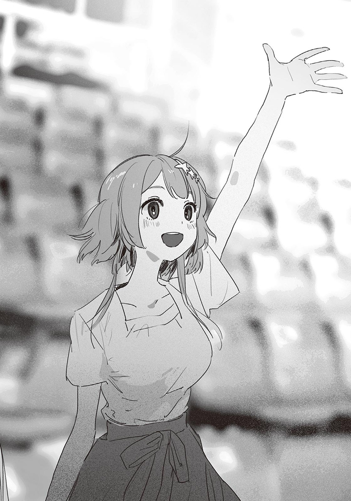真的假的？我心想。
「好哦！那就請這位大姊姊幫忙吧！」
訓練師朝我們這邊看來。還真的被選上了。
星原開心地起身，輕快地往下走，繞過池子，走上舞臺。
就算星原個子嬌小，和小學生站在一起還是高出一個頭左右，相當顯眼。而且就算遠看，都看得出她從全身散發的開心，似乎真的很想和海豚玩。看著她那模樣，我心情也好了起來。
訓練師把圈圈交給星原與孩子，指示他們依序丟出圈圈。
最後輪到星原。她高舉圈圈，用力扔出。圈圈飛得比其他孩子丟出的更遠，但海豚仍然精彩地在落水前，就以嘴（鼻子？）接住圈圈。
星原開心地拍手。那高興到快要跳起來的模樣，使我渾身酥軟。
「看她那個樣子，都快分不出誰才是小孩了。」
「是啊……真羨慕夏希。」
汐略帶憂鬱地說著。
「難不成，你也想下去玩？」
我發問。汐瞪大眼睛。
「怎麼可能。我不是那個意思……是其他的各種意思。」
「哦……？」
汐把視線放回舞臺上，以洩氣皮球般的表情看著星原。對很在乎旁人眼光的汐來說，說不
定覺得能如此直接地表現出開心的星原很耀眼吧。
「最後請大家和海豚握手！」
訓練師說著，海豚將頭探出水面。 海豚游到池畔，如舉手般抬起胸鰭。星原與其他孩子戰戰兢兢又興奮地碰觸海豚的胸鰭。
「謝謝大家！」訓練師說完，請眾人回到自己座位。
星原心滿意足地回來了。
「好好玩～！我以後還想再來。」
「辛苦了。」汐對星原說道。
星原坐了下來，張合著握過海豚的手，像在回憶那份觸感。
「海豚摸起來是什麼感覺？」
我好奇地發問，星原露出微妙的表情。
「像光滑的橡膠……該怎麼說……像茄子？」
「茄子嗎……」
假如家裡有茄子時，我也摸摸看吧。
「——今天的海豚表演到此結束！謝謝大家！」
訓練師大聲地宣布。海豚表演在觀眾的掌聲中落幕。
「咦？」星原訝異地發問：
「虎鯨呢？」
現在問未免太晚了。沒有虎鯨啦。
從海洋劇場回來後，我們又參觀了企鵝區與水母區，來到海洋生物區。如畫廊般排列的長方形水槽中，展示著烏賊或蝦子等小型生物。
星原在某個水槽前停步，我探頭一看，見到許多從沙子中伸頭縮縮頭的小鰻魚。是花園鰻。
「花園鰻的日文名稱為什麼叫※狆鰻呢？」（譯註：日文寫成チンアナゴ。「チン」為一種原產於日本的小型犬，「アナゴ」則是糯鰻科的日文。.jpg" height="70"/>
星原好奇地發問。
我看著水槽旁的說明文。
「呃——因為長得很像名叫狆的狗，所以得到這個名稱。」
「叫狆……的狗？有那種狗嗎？」
「唔……」
我打開手機，以「狗 狆」搜尋圖片，出現一種毛絨絨的小型犬。
我向星原展示手機上的圖片，與她一起比較水槽中的花園鰻與狗的照片。
「不像嘛。」
「一點也不像。」
我笑了起來。星原也跟著笑了。
我們看了一會兒花園鰻，再次前進。星原像孩子般開心，小跑步地般穿梭於水槽之間。
我跟在星原身後走著。比起看魚，觀察星原更有趣。想到這裡，我嘴角忍不住上揚。一旁的汐開口：
「你剛才和夏希的感覺不錯呢。」
他以星原聽不到的音量對我說。
「是、是嗎？因為總算能自然地說話了……」
「看起來很像情侶哦。」
「情……！」
我的臉一下子紅了。
「沒有沒有。我才配不上星原呢。」
「是嗎？可是我覺得你們很相配哦。」
「這、這就不知道了。」
明知是客套話，但我還是開心到必須努力讓自己不露出詭異的笑容。
「話說回來，你想和夏希交往對不對？」
汐突然加以確認。
「幹、幹嘛突然問這個？」
「不想嗎？」
「沒有，不是不想，不過……」
「對吧？現在夏希的心情很好，我想你可以再積極一點哦。」
「……比如說？」
「要不要試著約她？例如看電影之類的。」
「咦！」與我無緣的詞彙闖入耳中，我忍不住叫出來。
「不不不，那門檻太高了啦……」
「沒問題啦。我讓你們獨處一下，你趁機不著痕跡地約她。我想她應該不會拒絕。如果不行再用手機通知我，我會馬上回來的。加油哦。」
「咦？等、等一……」
我還來不及阻止，汐已經走到星原身邊，在她耳旁小聲說話。星原有點困惑地點頭後，汐便離開了。怎麼自作主張起來了……
星原朝我走來，露出傷腦筋的笑容。
「小汐要我看著你，以免你走丟。」
「那傢伙……」
太突然了。汐很少這麼強硬。雖然我沒有怪他的意思，但希望他能給我一點做心理準備的時間。
「該怎麼辦？小汐說她要去買飲料，叫我們先走。」
「……那就照汐的話做吧。」
我們沿著動線慢慢走。
一旦只剩兩個人，話便變少了。三個人時明明能普通地相處，只剩我和星原時，就不知道要說什麼了。找不到話題。
我們沉默地踏入珊瑚礁區。與其他展區相比，這裡的燈光偏暗，可以見到不少貌似情侶的男女。不知名的焦慮湧上心頭。
——得說點什麼才行。
我無視水槽中的魚，拚命思考，但還是想不出可以聊的話題。就在這時，星原突然停下腳步，我差點撞上她。
星原看著珊瑚礁模樣的水槽。是發現了什麼有趣的魚嗎？我循著她的視線看去，見到身上有黃色鱗片，身體扁平的魚。
我見過這種魚，而且知道名字。
「是蝴蝶魚啊。」
星原驚訝地看著我，又轉頭看向水槽。
「原來牠叫這個名字啊。因為長得像蝴蝶嗎？」
「因為游泳的樣子像蝴蝶。我以前看過的書裡是這麼寫的。」
「真是博學多聞。你果然看了很多書呢。」
被星原稱讚，我很開心，也不那麼緊張了。我還真是單純啊。
「還有什麼和魚有關的小知識嗎？」星原看著我發問。
「唔，我想想……」
我抬頭看著水槽，回想書裡的內容。
「有一種魚叫洄游魚。」
嗯嗯，星原點頭。
「那種魚會為了找食物或繁殖，改變生活的地區。黑鮪魚就是一種洄游魚，活動的地點橫跨整個太平洋。」
「是會旅行的魚呢。」
「不過也有雖然不是洄游魚，但是隨著海流漂流到遠方的魚。像蝴蝶魚就是……還有小丑魚也是。這些魚的游泳能力不強，幾乎沒辦法適應新的海域，最後就會死掉。」
「咦？會死嗎？」
「是啊。因為不耐寒，或是身體衰弱，被其他魚吃掉。」
「……好可憐哦。」
星原以憐憫的眼神看著蝴蝶魚。她哀悼似地沉默了一會兒，再次走了起來。我默默地跟在她身後。
「幾乎都死了，表示也有沒死的對吧？那些魚怎麼了呢？」
「呃，應該會在新的海域住下，繁殖後代，最後適應新的環境吧。不過能活下來的魚非常少，所以對魚類來說，被海流帶走，就像不幸的意外呢。」
「是這樣啊。」
星原小聲說著。
在那之後，我們就沒有說過話了。我側眼窺視星原，她臉上似乎微帶憂鬱之色，步伐也稍微慢了下來。
怎麼了？我說了什麼讓她不開心的話嗎？
我惴惴不安地走著，來到珊瑚礁區的出口附近。既然已經無話可說，也差不多該叫汐回來了——
「剛才那個話題。」
星原停下腳步。
「嗯。」我也停下腳步。
「我想，除了被海流帶走之外，應該也有以自己的意志，前往其他海域的魚吧。例如在本來的場所過得不好，或是因為好奇……」
「明明游泳能力不強？」
「就算可能會死，還是想去其他地方。我想，一定有那樣的魚……我在說什麼啊？突然說這些，好奇怪。」
星原難為情地笑了起來。
但我深受感動。星原的話雖然天真，可是我覺得那想法很美好。再說，也不能斷定絕對不是那樣。
例如蒲公英的種子，會隨風飛到遠方。棲息地愈廣，愈能減少絕種的危機。說不定蝴蝶魚和小丑魚也是基於同樣的動機，才乘著海流到遠方的。為了使物種更繁榮。
想要有一番成就，就必須冒相對應的風險。
重要的是選擇。看是要追求穩定，或是追求發展。
——要不要試著約她？
汐的話閃過我腦中。
我決定放手一搏，乘上前往未知大海的海流。
「那個——」「紙木同學。」
我們同時開口。
「啊，你先說吧。」星原客氣地禮讓我。可是話還沒說出來就被打斷的我，已經失去說出來的衝動了。
「沒什麼大不了的，還是妳先說吧。」
「我想說的不是什麼大事啦……」
「沒關係啦，不用客氣，真的沒什麼。」
「是、是嗎？那我就先說了。」
嗯嗯～星原可愛地清了清嗓子。
但她一直沒有說下去。只是講著「呃，沒有啦，那個……」空泛的話，消耗時間。有那麼難開口嗎？我正想說點什麼轉移話題時，「我啊——」星原總算明確地開了口。
「會幫你加油的。」
「咦？」
我傻住了。
加油？我？為什麼？
「啊！我當然不會告訴其他人的！因為世人對這種事還不太能接受……但總有一天，大家會認同這種事的。到時候我會好好幫你們慶祝的。」
「哦……」
因為聽不懂星原在說什麼，我只能含糊地回應。至於星原，則像是從鬱悶中解脫了似的，鬆了一口氣。
「呼——總算說出來了！不過我真的嚇了一跳哦～你們可以早點告訴我啊。」
「等、等一下。妳在說什麼？」
「嗯？啊，對不起對不起。我這樣太突然了。就是你和小汐的事啊。」
我和汐的事——難道……
「你們不是在交往嗎？」
名為理解的閃電擊中我的腦門，把我腦中的問號全部炸飛。
雖然我知道星原對我們有誤會，沒想到她會這麼直接地說出來。
「等一下、不對。不是的。我應該有說過，我和汐不是那樣的關係。」
「嗯。是啊，果然很難公開呢……」
「不對。我們真的沒有交往，是妳誤會了！」
我用力強調。星原驚訝地縮了縮身體。
不妙，可能嚇到她了。我這樣太激動了，得冷靜下來才行。
「……對不起，我不是在凶妳。我只是想解開誤會……」
「誤會……你們沒在交往嗎？」
我不是一直這麼說的嗎——我把這句話吞了回去，用力點頭。
「沒錯。我們沒有交往。」
我斷然否定。星原受傷似地皺眉，以懷疑的眼神看我。
「既然沒有交往，為什麼要接吻呢……？」
——那是因為……
這是非常合理的疑問。
星原相信我們那個吻不是意外。
為什麼要接吻？我也想知道，可是我沒有勇氣問汐。總覺得發問的瞬間，某種重要的事物將會被破壞。而星原應該也一樣——我本來是這麼以為的，沒想到星原並不逃避，而是正面追求真相。
看著說不出話的我，星原露出失望的神色。
「……這麼不想說嗎？」
「不是——」
「怎麼了？」
發問傳入我耳中。我回頭一看，汐正站在我身後。
我胸口湧起複雜的感情。「總算回來了」與「居然在這種時候回來」兩種心情交錯在一起，就連是放心還是擔心，都分辨不出來了。
汐以困惑的眼神，交互看著我與星原，很明顯不知道發生了什麼事。星原以認真的表情看著汐。
「紙木同學和小汐……沒有在交往嗎？」
短短一句話，使汐明白一切。他微微睜大眼睛，表情逐漸憂鬱。
「原來是在說那個啊……」
汐嘆了口氣，宛如在忍受疼痛似地咬著嘴唇。光是想起失戀的事，就夠痛苦了吧。而且汐把那接吻看成極為嚴重的失態，不難想像這個問題會對他的心理造成多重的負擔。
「呃，星原。」
見汐這麼難受，我插嘴：
「之前說過很多次了，我和汐沒有交往。所以……這件事就到此為止，好嗎？」
我慎重地選擇詞彙，委婉表示我不想說明這件事。星原沒有笨到不懂我的意思。
「……！」
星原挨罵似地垂下眼簾。從那反應看來，她也不是非打破沙鍋問到底不可。如果是這樣，她也許會改變心意，不再追問。
正當星原戰戰兢兢地想開口時……
「好吧，讓我說清楚。」
汐先開口了。
他以前所未有的嚴肅表情看著星原。
「反正早晚都要說明的。」
汐說完，安靜地邁出步伐。是換地方說話的意思吧，我和星原默默跟在他身後。
——沒問題嗎？
我在心裡對汐發問。汐只是沉默地前進，從背影看不出任何感情。
我瞥了一眼走在身旁的星原，她顯得相當不安。抿著嘴唇，緊鎖眉心，時不時盯著汐的背影，似乎想對汐說什麼，但又放棄地垂眼。
難以呼吸。為什麼會變成這樣——不，我知道為什麼。不是任何人的錯，是時間的問題。就像汐說的，早晚都要說明的。
但……我還是希望能三個人繼續快樂地參觀水族館。就算那只是逃避現實。
我們來到餐飲區，中午來這裡時，人潮還很多；不過四點的現在，已經沒什麼人了。我們什麼都沒點，直接來到後方的座位。即使就坐，仍然沒有任何人說話。
「咲馬說的沒錯。」
汐沉重地開口：
「我們沒有交往。因為我被咲馬拒絕了。」
咦？星原小聲驚呼。
對星原來說，這是非常重大又有衝擊性的事實吧。但只有這件事，我不能主動說出來。就算星原會找我商量感情問題，我也不能把汐對我告白的事告訴她。
「那麼，那個吻是……」
星原小心翼翼地發問。
到頭來，問題還是在那裡。
我和汐應該都把對彼此的心情整理好了才對，可是汐卻親了我。不論原因是什麼，都很難說出來。我痛切地明白。
胸口很痛。如果三個人能「一、二、三」地一起消除記憶，該有多好。但正因為做不到那種事，才必須說出真相，解開誤會。不對，就算真的有消除記憶的方法，星原應該不會自願忘記，在通往屋頂的樓梯見到的畫面，最後仍然會變成現在的情況。
「……鬼迷心竅、吧。」
汐說完，周圍充滿緊張的氣氛。
我屏住呼吸，背上冷汗直流。
「那時候，我覺得自己果然很沒用，很想大叫……可是不能那麼做，所以……」
每句話、每個字，都像是用力擠出聲音說的。呼吸變得愈來愈快，臉色開始發青，額頭微微冒汗。
「所以……我之所以，做那種事……」
「等、等一下！」
星原打斷汐的話。
汐睜大眼睛。我也一樣。因為星原一臉快要哭出來了。
「對不起……雖然是我問的，但是我已經不想知道答案了。因為你看起來很痛苦……所以，我也覺得很難過。」
我能理解星原的難過。因為我也不忍心繼續聽下去。假如星原沒有開口，說不定我會出聲阻止汐。
聽星原這麼說，汐面帶歉色地抿著嘴唇。
「我已經知道你們沒有交往了。真的知道了。可是……」
星原說到一半，抬眼看著汐，不再說下去。似乎在迷惘該不該繼續說下去。幾秒後，她慎重地發問：
「你其實，還喜……」
「我——！」
我抬頭時，汐已經打斷星原的話了。而且音量大到足以傳遍餐飲區，周圍的客人全都看向我們。
發現旁人的視線，汐內疚地縮了縮身體，微微搖頭。
「沒有。絕對、沒有。」
「……說的也是。對不起。」
星原不再追問，她道完歉，低頭看著桌面。
『妳其實，還喜……』
可以想像在那之後會接什麼話。汐應該也猜得到，所以才會先出聲打斷星原的話。
就如同汐說的，事實肯定不是星原想問的那樣。我也只能如此相信。因為那是汐本身的問題，沒有我介入的餘地。
星原緩緩起身。
「該回去了。」
半晌後，我與汐點頭同意。
我們離開了水族館。
雖然覺得可惜，可是現在已經沒有繼續遊玩的心情了。而且大部分的展區都參觀過了，現在回去的話，回到椿岡站時，應該差不多傍晚了吧。
我們沒有在其他地方逗留，直接前往車站。
坐的位子和來時一樣，我和汐坐在一起，星原坐在我們對面。一路上，星原都看著窗外景色發呆。
忽地，我聽到輕微的鼻息。汐靠著牆睡著了，露出毫無防備的睡臉。
「睡得很熟呢。」
星原輕聲道。
「是啊。他應該很累吧。」
餐飲區的對話，應該相當消耗汐的精神。想像他的痛苦，我就覺得心痛。現在還是讓他好好休息吧。
星原看著汐的睡臉，悲傷地瞇起眼睛。
「早知道就不問那種事了……真是對不起小汐。」
她垂眼看著自己的大腿，斷斷續續地說著。
「雖然這麼說，很像在找藉口……不過我是真的想幫你們加油，沒有讓你們困擾的意思。」
「……汐也知道哦。再說，早晚都得面對那件事才行，所以……妳不必太在意。」
這不是安慰，是我的真心話。但星原還是愁眉不展。
我嘆了口氣，搔了搔頸側。
「其實是我不好。一直沒把告白的事告訴妳。」
星原仍然低頭看著下方，搖了搖頭。
「我能明白你為什麼不告訴我。我只是覺得很驚訝而已……既然知道是怎麼回事，我就無所謂了。」
聲音中，似乎帶著與前後對話無關的釋懷。
在知道告白的事，以及接吻的原因後，星原對汐的感情會產生變化嗎？或者仍然是「不知道喜不喜歡小汐」的狀態呢？
雖然我想加以確認，可是汐在場。就算他睡著了，這還是不適合問出來。
汐仍然微微發出鼻息，肩膀隨著呼吸，輕輕地上下起伏，表情相當安穩。
——鬼迷心竅、吧。
我想起斷斷續續地那麼說的汐，有種被秋風吹拂過般的悲傷。
直到汐以女生身分上學的那天為止，我對汐一直抱著自卑感。對他的嫉妒，反過來說就是羨慕。換句話說，我一直憧憬著汐。所以，他剛才那種——有如開謝罪記者會般，臉上冒汗，萎縮著身體說明的模樣，使我不忍卒睹。
我不在乎汐以女生的身分生活。可是，我希望他能一直保持著高潔，不要為了我這種人心煩意亂。
話說回來，汐究竟喜歡我的哪裡？
就算喜歡的是男性，也有其他比我更好的人。比我聰明，成績和運動神經比我好，外表好看，個性也好——光是在椿岡高中裡，就有很多那樣的男性。可是汐卻選了我。
為什麼？因為我們是童年玩伴？還是單純因為相處的時間長，所以喜歡上我了呢？
如果真是那樣，是從什麼時候開始的？
思緒很混亂，不知不覺中，我皺緊眉頭。
有朝一日，汐會告訴我，之所以選了我的原因嗎？要說不感到好奇，就是在騙人了。但這件事已經是過去式，所以還是把這疑問收在心裡深處吧。
呼啊。星原輕輕打了個呵欠。只見她眼眶溼潤，嘴唇不住扭動。
「想睡就睡吧，等到了再叫妳。」
星原連忙按住自己的嘴。
「沒、沒關係，我還很清醒。」
雖然她嘴上那麼說，不過眼神已經朦朧了。其實她很想睡吧。她之所以硬撐，是因為覺得愧疚嗎？
在那之後，儘管星原時不時揉眼或是打瞌睡，但仍然努力保持清醒。不過似乎快到極限了。
「……不要逞強哦？」
星原臉紅了起來。只見她縮了縮肩膀，投降似地點頭。
「對不起，我果然很想睡……可以先睡一下嗎？」
「當然。」
「謝謝了。晚安。」
「晚安。」我說完，星原便閉上眼睛。
鼻息增加為兩道。我從口袋拿出手機打發時間。我打開螢幕，點進圖片庫，看起星原在來水族館途中拍攝的汐照片。那是在水族館吃午餐時，星原傳給我的。
在電車上用無聊的表情看窗外的側臉，有種難為情的感覺。照片拍得很好。如果隨便找間偶像經紀公司，把照片寄過去，說不定會被挖掘吧。但我當然不會做那種事，只會把照片留在資料夾裡。
我看向窗外，太陽已經西斜了。
✽
三人一起去水族館的幾天後。
我在開著冷氣的房間裡寫暑假作業。本來以為把最棘手的數學解決後，剩下的科目就能輕鬆完成了。沒想到進度不如預期，還是落到趕作業的下場。我痛恨起自己的漫無計畫。
我翻著世界史的參考資料，汐的身影進入視野邊緣。他正靠在我床邊，看著我之前推薦的小說。他已經一個星期沒來我家，而且從水族館回來後，就沒再見過面了。
汐的樣子和之前沒什麼不同。雖然對話不多，但我們本來就不常聊天，所以沒什麼尷尬感，時間平穩地度過。
我想這麼認為。
「休息一下。」
我放下筆。
汐安靜地看著小說，偶爾輕輕嘆氣。是對小說的內容有什麼感觸嗎？還是因為水族館的事呢？說不定只是普通的呼氣，是我想太多了。不論如何，我不打算深入追問。就算問了，也不一定能解決問題；要是因此讓他顧慮太多，反而對他不好意思。
我如此心想時，汐打了個噴嚏。
「會冷嗎？」
「啊……有一點。」
我以搖控器調高溫度。這房間的冷氣已經有年紀了，溫度調節功能很差。設定二十七度時很熱，二十六度時又太冷。其實我也覺得有點冷。
「你現在有貼涼感貼嗎？」
「沒有。我進門之前就拿下來了。在冷氣房裡貼著會太冷。」
我想像汐在我家門口拿下涼感貼的畫面，感覺是很奇妙的光景。如果是汐，應該會在別人看不到的地方做吧。
我站了起來。
「我去倒茶。」
汐在我身後附和。
我離開房間，來到廚房，在茶壺裡放入茶葉，壓著熱水瓶，在茶壺中加入熱水後，把茶壺與茶杯放在托盤裡，回到房間。
我把茶壺和杯子放在桌上，汐合上書本，睜大眼睛。
「熱茶？你特地泡的？」
「嗯。我偶爾會喝哦。雖然是夏天，不過在冷氣房裡會冷。還有，搭配雪見大福的話，會變得很好喝。」
我說著，把茶倒入杯子裡，把杯子交給汐。汐以雙手接過杯子，緩緩喝了口茶，呼～地嘆氣。
「真好喝。」
我也喝起熱茶，因冷氣而發涼的身體暖和了不少。我突然想吃點鹹的，如果有煎餅就好了，可惜家裡沒有庫存。
我們小口小口地喝著熱茶。汐捧著茶杯，閉上眼睛……
「你對我好，我會很難受呢。」
汐不經意地這麼說。
我差點失手打翻茶水，全身發直，不知道該怎麼接受這些話。
汐茫然地看著杯底，回過神，猛地抬頭，似乎直到現在才發現自己說了什麼。只見他的表情愈來愈狼狽，嘴唇困惑地發顫。
「剛才說的不算。」
說完，他再次明確地強調：
「對不起。剛才那些話，希望你當成沒聽到。」
汐極為認真地道歉。自己說出了嚴重的失言。他的表情是這麼表示的。
「嗯……嗯。我知道了。」
老實說，我根本不可能忘掉。但現在只能這麼回答。
汐調整著呼吸，把杯子裡的熱茶一口氣喝完。
「喂，還很燙吧……」
「沒事。」
他一定是在騙人。因為他眼角噙著淚水。該不會燙到舌頭了吧？真擔心……
明知茶水很燙，為什麼還要那麼做呢？有什麼自我懲罰的含意在內嗎？如果真的是，希望他別再那麼做了。
我再次起身。
「……我想喝點冰的。」
我如此說道，汐內疚地皺眉，但我還是直接離開房間。對汐來說，這麼做可能也會讓他「難受」吧。然而我還是無法不做點什麼。
來到廚房，我打開冰箱，拿出裝麥茶的寶特瓶。杯子應該不必另外拿吧，反正樓上有杯子了。
我拿著寶特瓶轉身，可是無法邁步。明明該早點回去的，雙腿卻如千斤般沉重。
無法不做點什麼。我確實那麼想。可是同時，我也害怕與汐扯上關係。害怕因為自己考慮得太少，害汐受到傷害。
我的那些自我滿足與自以為是，說不定只會對汐造成困擾——想到這裡，我就裹足不前。甚至開始覺得什麼都不做，反而才是為汐著想。
「馬的。什麼嘛……」
啪。寶特瓶傳來凹陷的聲音。那是我下意識地用力捏瓶身的緣故。我以空著的手搔頭，試圖轉換心情。
就在這時，叮鈴鈴，風鈴聲響起。一陣風從紗窗灌入客廳。是溼氣不多的乾爽暖風。
夏天就要結束了呢。我在心裡輕聲低喃，終於走回房間。
九月一日。
第二學期開始了。
與大部分的學生相同，暑假結束的開學日，使我心情沉重。空氣中帶著酷暑的餘熱，蟬一早就很有精神地大聲唱歌。
我擦了擦從太陽穴流下的汗水，走進鞋櫃區，發現一道纖細的背影。即使在暑熱之中，仍然給人清涼感覺的背影，那毫無疑問是汐。
我脫下外出鞋，踩上外廊的踏板。也許是聽到了腳步聲，汐轉過頭。
「啊，早安。」
「早。」
幾天前汐才到過我家，所以沒有好久不見的感覺。我們一如往常地互道早安後，一起前往教室。
走廊上，「你變黑了？」隨處都可以聽到暑假結束時的常用句。
我移動視線，打量走在身旁的汐。他的肌膚還是一樣白皙透亮，而且細緻。如果隨意碰觸，似乎會變色似的。我腦中浮現白桃的外皮。
「……幹嘛？」
汐抱住自己的手臂。被發現我在看他了。這樣很沒禮貌，我連忙把目光轉回前方。
「沒有啦，不好意思。我只是在想你都沒變黑。」
「有啊。只是不會那麼明顯，只有變紅而已。」
「哦——這樣啊。」
我想起小學時，聽汐這麼說過。
「你也沒變黑呢。」
「因為我幾乎都在家嘛。」
「要多做點運動，不然會胖哦。」
是嗎？我含糊地回答，摸了摸肚子。雖然沒有肥肉，但也沒有六塊腹肌。我曾試著健身，可是一個月左右就放棄了。秋天有運動會，到時候再開始鍛鍊吧。不過在那之前有文化祭。
——你對我好，我會很難受呢。
汐的話，忽然閃過腦中。
我照著汐的要求，努力裝成「沒聽到」。汐也是，雖然在剛說完那句話時大為動搖，可是又馬上恢復成平常的模樣。
表面上，我們和以前一樣。然而汐的那句話就像哽在喉嚨的小刺，時不時地主張自我，帶來痛楚。該積極地把刺拿出來嗎？或者順其自然，等待刺被消化呢？目前我只能期待後者，但不知道那是不是正確的選擇。
我們踏入教室。班上鬧烘烘的，不輸外頭的蟬鳴。同學們散發的活力與熱氣包圍我的身體。
星原正站在教室正中間，與其他女生談天說笑。她發現我們，便微笑著微微揮手。
我和汐也報以微笑。
我們和星原之間沒有隔閡，甚至可以說相處融洽，但是在看不見的地方，似乎有某種決定性的變化。
依舊是老樣子，全是無法確定，想不通的事。儘管如此，我們仍然彼此牽連。就算我們的關係如薄冰般脆弱，我還是不打算停下腳步。
我把書包放在椅子上，看了看掛在黑板上方的時鐘。
開學典禮就要開始了。
✽
「因為所以，我們班要在文化祭，表演羅密歐與茱麗葉～！」
伊予老師站在講臺上，「掌聲鼓勵～」邊說邊拍手。
開學典禮結束後是班會時間。導師訓完話，收完暑假作業後，開始討論十月的文化祭，公布二年A班的表演內容。同學們的反應普普通通，伊予老師倒是很開心。
「真好啊～羅密歐與茱麗葉。老師很期待大家的表演哦。」
「老師也想出場嗎——？」
一名男學生開起玩笑，伊予老師裝模作樣地將雙臂盤在胸前，考慮起來。
「唔～怎麼辦呢～？老師要出場嗎？出場的話，要演誰好呢？」
伊予老師如此問道後，同學們紛紛大喊「茱麗葉！」，雖然大多數人是瞎起鬨，不過也有真心贊成的女學生。
哪有老師演女主角的……我在心裡吐槽，伊予老師似乎也這麼想，「哈哈」地笑著打發這提議。
「很可惜，文化祭的主角是學生，所以老師不能出場！是說，除了羅密歐和茱麗葉之外，你們知道其他出場角色的名字嗎？」
被這麼一問，除了成為戲名的兩人之外，我確實不知道其他角色的名字。而且除了名臺詞與名場面之外，也幾乎不清楚故事的內容。我看了看周圍，大部分的人都和我一樣茫然。
「好像有很多老頭？」「我完全不知道。」「除了羅密歐和茱麗葉之外，還有出場的角色嗎？」「好像有個叫加斯頓的人？」「那是美女與野獸的角色啦。」「羅密歐與茱麗葉是迪士尼電影嗎？」「笨蛋，是莎士比亞的作品啦。」
同學們七嘴八舌地討論著。愈來愈離題時，啪啪，伊予老師拍了拍手。
「好了好了，安靜。大家果然都不熟羅密歐與茱麗葉的故事呢。其實老師也不太記得了，所以今天特地帶了好東西過來。」
她說著，把光碟片和一疊紙放在講桌上。
「這是三年前的文化祭表演的羅密歐與茱麗葉。我向學校借了那時錄下的影片和劇本。只要看過這些，大家就知道故事內容和有哪些角色了！」
「要現在看嗎～」一名男學生發問。
「當然。離電視遠的同學要坐近一點哦。」
伊予老師把光碟片從盒子拿出，放入電視下方的播放機裡。平常放在教室角落的電視機尺寸不大，同學們全都移動椅子，坐在電視機附近。
昏暗的體育館出現在螢幕上。
『故事發生在花都維洛納，長年不合的蒙特鳩家族與凱普雷特家族，今天也在街上起了爭執——』
隨著旁白、布幕升起。穿著戲服的演員，走上被燈光照亮的舞臺。
劇情進展得很迅速，應該說，只是把比較令人有印象的名場面串連起來而已，故事本身並不完整。應該是把原本的劇本大幅刪減修改後的結果吧。文化祭的話劇表演本來就不追求多高的水準，這種程度就行了吧。
『——太陽消失了蹤影，城鎮籠罩在悲傷之中。這段不受眷顧的戀愛故事，就這麼落幕了。』
大約二十分鐘後，學長姊版的羅密歐與茱麗葉結束了。
伊予老師關了電視，要大家回到自己的座位。每個人都坐好後，把放在講桌上的劇本影本發下去。
「畢竟是學長姊們演的戲，如果覺得不夠到位，就自己改編吧。文化祭的表演，只要觀眾能接受就可以了。」
全班都拿到劇本後，「好。」伊予老師滿意地點頭。
「那今天的班會就到這裡……雖然我是想這麼說，不過還有一些時間。要做什麼好呢？」
離下課還有十分鐘。被伊予老師一問，同學們再次吵鬧起來。「還不能回家嗎？」「換座位吧！」在這類的提議中，有人說了「決定誰演哪些角色吧？」。
伊予老師對這提議產生反應。
「啊，對了。來決定演員好了。有人想上臺表演嗎？要報名要趁早哦～」
雖然教室吵吵嚷嚷的，可是等了老半天，還是沒人舉手。每個人都在觀望情況。雖然有些人對演戲感興趣，卻又怕被當成愛出風頭，想等其他人先站出來。
「沒人想報名嗎～？可以選自己喜歡的角色哦。以前也有兩個女生演羅密歐與茱麗葉的例子，所以大家可以輕鬆一點哦。」
情況仍然沒有改變。
是說也不必急著決定啦——伊予老師正想放棄時……
「那、那個。」
一名女學生舉手。
那是一名捲髮的女生，我記得是叫……七森。印象是個內向的女孩，沒想到她會主動報名，令我有點意外。
「啊、呃。我不是想演戲，是有希望能演的人……」
「妳想推薦人選？」
伊予老師加以確認，七森同學小幅度地點頭，舉止看起來很像小動物。
她吸了一口氣後——
「我希望能由槻木同學……演茱麗葉。」
如此說道。
教室裡一片嘩然。原本對演戲不感興趣的學生們，抬頭看向七森同學。不過最驚訝的，應該是被點名的本人吧。
「我、我嗎？」
汐瞪大眼睛。
七森同學看著汐連連點頭，玩弄著放在桌上的手。
「那個，我是服裝社的，喜歡做衣服……我覺得槻木同學很適合穿禮服，所以想看槻木同學演茱麗葉。啊，我沒有強迫的意思哦！」
結結巴巴的說話方式，看得出來她很內向。但她的聲音中帶著明確的熱度。儘管不習慣受人注目，還是主動站出來，想推薦汐演茱麗葉。
不過，要不要演，還是得看本人的意思。
我正想觀察汐的反應，此時旁邊傳來「喀！」一聲椅子猛地向後退開的聲音。
「很好哦！」
說話的是星原。她興奮地起身，對七森同學說：
「我也贊成！小汐那麼漂亮，一定很適合演茱麗葉。」
發現同志後，七森同學的表情亮了起來。
「就、就是說啊……！槻木同學身材很好，不管什麼樣的衣服，穿起來都很有型。站在舞臺上一定很好看……！」
也許是被氣味相投的兩人影響，四處開始傳出「好像滿適合的？」、「我也有點想看了」的聲音。不過主要是女生說的，男生似乎不太能想像那模樣，但也不反對七森同學的提議。
只有一個人，毫不隱藏地露出厭惡之色。那名將漂染的頭髮綁成雙馬尾的女學生，是西園。她似乎想說什麼，但因為有伊予老師在場，所以忍住不說話。上個學期她老是不分場合地對汐口吐惡言，過了一個暑假，也許稍微變圓滑了吧。
「唔……汐，你覺得呢？不過還有時間，不必立刻決定。」
伊予老師發問，汐手放在下巴下，思考起來。
全班都在等汐的回答。最後，汐下定決心地抬起頭。
「我願意試試看。」
噢噢！班上響起歡呼聲。
星原滿意地坐下，七森同學也開心地將雙手合在胸前。
「謝謝你，槻木同學。那個，我會努力幫你做衣服的！」
「嗯，我很期待哦。」
汐笑著回答。那是令人忍不住微笑的溫柔笑容。可是我總覺得，汐的笑容中似乎帶著一點悲傷。儘管只是極為細微的感情流露，但那應該不是我的錯覺。
——難道……
「接著來決定羅密歐的人選吧。」
疑問還沒得到證實，選角便已經繼續進行了。
✽
幾分鐘後，下課鈴響起，今天的學校活動到此結束。我和汐、星原久違地一起回家。
「沒想到紙木同學答應演羅密歐呢！」
穿過校門後，星原推著腳踏車說道。
沒錯。羅密歐將由我飾演。一名男學生提議「讓紙木演怎麼樣？」，結果就是我了。
「這樣真的好嗎？你不是還有執行委員會的工作……」
汐以不安的眼神看著我。
我不是從一開始就想演羅密歐，而且若我不想演的話大可拒絕。我之所以沒那麼做，是因為我可以接受。假如汐演茱麗葉，我就該演羅密歐。
雖然這樣推測不太好，但我完全想像不出除了我之外的學生自願飾演羅密歐的畫面。假如我拒演羅密歐，可能就真的沒人想演了。那樣一來，汐會很難堪。所以我決定接下羅密歐的角色。
不安當然是有的。我本來就不習慣受注目，光是想像在那麼多人面前演戲，便覺得有點頭暈。但只要一想到汐，我就提不起拒絕的念頭。
不過，就像汐說的，我還有執行委員會的工作。
「反正船到橋頭自然直啦。」
「你也太樂觀了。」
汐傻眼地說著，紅蜻蜓從我們眼前飛過。
雖然天氣還很溼熱，但曆法上已經是秋天了。「好孩子要早點回家」的廣播提早在五點半播放，田地中的稻穗已經開始垂頭。也許有哪裡在燒草原了吧，空氣中隱約傳來燒焦味。
「對了，最近都沒看到世良呢。」
我一說完，立刻感到後悔。雖然這麼說很打臉自己，但我一點也不想提起那傢伙的事。正因為太討厭了，不但忘不掉，反而深深記得，才會像現在這樣不小心脫口而出。
「世良好像交了新的女朋友哦。現在應該很迷戀那女生吧。」
汐說道。我有點驚訝，沒想到他知道世良的近況。
「世良告訴你的？」
「嗯。他在訊息裡說的。」
「哦～是說，你和世良會傳訊息啊？」
「是啊。基本上是世良單方面傳訊息給我，我偶爾才會回他。」
偶爾會回嗎？回些什麼呢？是說，星原應該會對這個話題皺眉吧……我本來是這麼想的……
「世良同學交女朋友很好啊。」
沒想到她毫不在意。
「這樣一來，我們又能三個人一起回家了。」
星原嘻嘻一笑，我也跟著笑了。
看在旁人的眼中，這應該是極為普通的青春場景吧。
可是，在平凡的談笑中，會突然出現不知該說什麼的瞬間。不只我，汐和星原應該也有同樣的經驗。我們之間雖然不存在障礙，卻有異物。如果可以，我希望那異物快點消失。
假如只是我多心，倒是無所謂。
可是，假使不是那樣……總有一天，我們必須除去那個異物，或是接受它。
「——紙木同學也是這麼想的吧！」
我正胡思亂想時，星原對我發問。
「咦？啊，對不起，我沒聽到妳在說什麼。」
真是的——！星原氣呼呼地抱怨。我一面反省，一面覺得她生氣的模樣真可愛。
「要好好聽別人說話啦～我是說，小汐演茱麗葉，一定會很成功。」
「哦——嗯……是啊。」
得到我的認同，星原滿意地點頭。眼神發亮地看著天空。
「好期待看到小汐穿禮服的樣子……會是什麼樣的禮服呢？」
「妳啊……」
汐端詳似地歪頭看著星原，瀏海滑落，稍微遮住了臉。
「妳不想演茱麗葉嗎？」
星原眨了眨眼，苦笑著搖頭。
「我不行啦。我這麼矮……」
「會嗎？妳很可愛又有女孩感，我覺得就角色而言很適合哦。」
「咦——是這樣嗎……？」
星原臉頰飛紅，喜笑顏開。但就像雲層遮住太陽似的，喜悅的感情愈來愈淡，最後顯得有點寂寥。
「不過，我還是覺得該讓小汐演茱麗葉才對。」
星原小聲地說著。
「我演的話，就看不到小汐的茱麗葉了。再說，小汐以前說過想演公主。」
那件事我也記得。汐想演灰姑娘，卻被老師否決了。那是去汐家時，和星原一起聽汐說的。
雖然角色不同，不過灰姑娘和茱麗葉都是「公主」。對汐來說，這是彌補過去遺憾的好機會。星原應該是這麼想的吧。
「妳還記得啊。」
汐很感佩。
「嗯。雖然提議的是七森同學，可是我也覺得小汐很適合演茱麗葉。雖然我們好像有點強迫的感覺……」
星原愈說愈沒信心，聲音也愈來愈小。汐溫柔地微笑。
「……沒什麼。我會努力演好茱麗葉的。」
星原燦爛地笑了起來，「嗯！」用力點頭。
「我會幫妳加油的！」
活潑的聲音、眩目的笑容。比起生氣，星原笑起來果然更可愛。
在那之後，我們聊著可有可無的事。暑假作業寫不完，或是中元節去了親戚家等等，最後，我們來到與星原分別的岔路。
「明天見！」
星原活力十足地道別，騎著腳踏車離開了。
我和汐並肩而行。
與星原分別後，我們安靜了下來。但不是尷尬的沉默。蟬鳴與附近住宅區孩子們遊玩的歡笑傳入耳中。
我偷看汐。
他以堅定的表情看著正前方，背脊有如插了尺似的，挺得筆直。姿勢標準到可以當範本。所以，該怎麼說呢，我覺得現在的汐，有一種刻意裝模作樣的感覺。
「可以問一件事嗎？」
「幹嘛這樣。想問什麼就問啊。」
我在握著腳踏車握把的手上用力。
「你是不是不太想演茱麗葉？」
汐停下腳步。
一拍後，我也停下腳步。
「……為何這麼問？」
汐認真地望著我。那看不出情緒的反應，使我有點緊張。
「不是啦，如果我說錯了，我向你道歉。一開始時，我也覺得你應該演茱麗葉。理由和星原一樣。因為知道你小時候想演灰姑娘。可是……」
我吸了一口氣，繼續說下去：
「當你被推薦演茱麗葉時，該怎麼說呢，我覺得你看起來沒有很開心。仔細想想，你想演灰姑娘，是小學三年級時的事了，現在不一定也想演公主。就像我小時候想成為假面騎士，但現在叫我做的話，我八成會拒絕……啊，我當然不是說你不該演茱麗葉。那個，主要是你怎麼想……」
說到後來，我失去自信，語氣變得含糊不清。
我說完後，汐一臉嚴肅，沉默地看著我。我該不會說了什麼不妙的話吧？我的胃一陣陣地抽搐起來。
你快說點什麼啊——我在心裡祈求，這時汐突然輕笑起來。
「你想了很多呢。」
那是大人稱讚小孩子稚拙作品時的語氣。我突然覺得很丟臉。
「沒有、那個……所以是怎麼樣？」
「……這個嘛。」
汐放下腳踏車的腳架，坐在坐墊上。那是「慢慢聊吧」的意思。我也模仿汐，坐在他旁邊。
他因陽光瞇起眼睛，凝視著西方。
「大致上，你說的沒錯。雖然我小時候想演公主的角色，但現在已經是高中生了，不像以前那麼憧憬成為公主。所以七森同學推薦我時，老實說，我很困擾。可是連夏希也贊成，氣氛變得難以拒絕，所以我只好說想演了。」
汐苦笑著說道。
難以拒絕的氣氛。其實我也多少有感覺。假如汐拒絕七森同學的推薦，就會變成違背大家的期待，使班上同學失望。那將是很可怕的情況。
「你果然不想演嗎？」
我戰戰兢兢地發問。汐垂下眼簾，長長的睫毛製造出陰影。
「……老實說，我本來是不太想演的。」
我覺得全身血液倒流。明明發現汐不對勁，卻什麼話都沒幫他說。我對這麼沒用的自己感到厭惡。
「不用勉強自己。趁現在拒絕吧。只要好好說明，大家都能理解的。而星原也沒有強迫你的——」
「等、等一下。」
汐連忙打斷我的話。
「『本來』是不太想演的。是過去式，過去式。」
「啊……原、原來如此。」
我太急躁了。自我厭惡消失，取而代之的是羞恥。你要好好聽別人說話啊！我在心裡痛罵自己。
「現在是很迷惘。因為同學們的反應不差，而且夏希也是真心支持我。被那樣用力勸說，我也產生了想試試看的念頭。可是……」
汐低頭看著自己的大腿。
「不想演的心情，也和想試試的心情同樣強烈。因為不知道其他人會有什麼反應，而且文化祭時，會有很多人來參觀。如果被當成笑話看……就會覺得很不安。就連我自己，都不知道自己想怎麼做……」
汐求助似地看著我。
「你覺得呢？」
最重要的，不用說，當然是汐本人的意思。但既然汐問我的意見，我的回答也當然是——
「我覺得……你就演吧。不用擔心，沒有人會笑你的。」
「真的嗎？」
「是啊。應該讓大家看看，椿岡高中有這樣的美人。」
我信心滿滿地說。汐刮著鼻尖，把頭別開。只見他的耳朵整個發紅了。
「……那，我會努力演茱麗葉的。」
「嗯。我也會加油，不扯你後腿的。」
我說完，兩人笑了起來。
沒有變成陰沉的結局，我鬆了一口氣。汐演出的茱麗葉，一定會成為很精彩的舞台。
「咲馬，謝謝你。」
「不用謝啦。我又沒有做什麼……」
汐搖搖頭。
「假如你沒發問，我可能會以鬱悶的心情演茱麗葉。很高興你發現了我的心情。」
「沒有啦……」
被他道謝，使我覺得麻麻癢癢的。因為真的不是什麼大不了的事。應該說，汐完全可以責備在選角時什麼都沒說的我。
就在我覺得微妙時，「再說——」汐微微低下頭，自言自語似地說下去。
「咲馬演羅密歐，讓我有點安心。」
就只是有點——他強調似地再說一次，靦腆地笑了。
我又不知該如何反應了。雖然很開心，可是不知道該不該坦率地表現開心。
汐從椅墊起身，神清氣爽地伸著懶腰。我心想著「看來話已經說完了」，汐便說了「啊，對了對了。」又想起什麼似地看著我。
「你要好好幫夏希哦。因為你們都是執行委員。」
「哦、嗯，當然。」
話題變得太快，我只能遲鈍地回答。
「加油哦。」
汐拍了拍我的肩膀，溫柔地說完，踢起腳架，牽著車子向前走。
我也踢起腳架，快步追了上去。
✽
今天是文化祭執行委員第一次開會。
我和星原前往視聽教室開會。由於不知何時才會結束，所以汐先回家了。
「紙木同學，你駝背了哦。」
「嗯。」
被星原指正後，我挺直了背脊。我的姿勢應該真的差勁到看不下去，才會被指正吧。
平常我的姿勢沒這麼差……我是這麼認為的。因為等一下要和其他執行委員第一次見面，所以才會這麼有氣無力吧。我本來就怕生，像這種人多的聚會，就更容易緊張了。
「第一印象很重要。不給人好印象的話，會被打成豬頭的哦。」
「才不會。」
又不是什麼不良少年集團。
與有氣無力的我不同，星原充滿幹勁。
我從之前就覺得疑惑了，星原為什麼想擔任執行委員呢？依她的個性，不太可能想藉著做這種事在申請大學時加分……倒也難說吧。一般來說，這是很有可能的動機。
既然她就在旁邊，不如直接問吧。我正想開口，但我們已經來到視聽教室外了。反正理由隨時都可以問，我閉上嘴，走進教室。
進門後，左邊是投影布幕，右邊是排成ㄇ字形的長桌。大約一半的椅子上都坐著人了。坐在折疊椅上的執行委員們似乎都很無聊，教化學的飯田老師沒精打采地靠在教室角落的牆上，不停忍住呵欠。
「你們是幾年幾班的？」
站在布幕前的男學生對我們問道。我認識這張臉，是學生會長。對了，學生會也會參與文化祭的營運呢。我想起去年的事，回答「二年A班」。
學生會長指了指某處空著的座位，我和星原向他致意後，坐在指定的座位上。
現在時間是四點又多一點。看樣子，要等所有人到齊，才會開始開會。
我左右張望，想尋找認識的人。帶刺的視線從右邊傳來。我轉頭一看，一名坐在角落的男學生正拄著臉頰，不高興地瞪著我。我連忙移開目光，儘管如此，對方還是繼續瞪我。
這、這是怎樣？真可怕……
雖然我不知道那人為何要瞪我，但我知道他的名字。
一看就知道是運動社團的黝黑肌膚、修長的眼睛。他是汐以前參加的田徑隊成員能井風助。汐穿女生制服來上學的第一天，他闖到我們班的事，我仍記憶猶新。
他似乎和汐有什麼過節，可是我和他完全沒關係，而且從來沒有說過話，他為什麼要瞪我？因為太可怕了，所以我不再看他。
我正心驚膽顫，其他班的執行委員也陸續到了。最後一名執行委員也總算踏入教室。
「哎呀，已經開始了嗎？」
聽到那聲音，我便感到一陣噁心。
臉上掛著搏人好感的笑容，給人甜膩印象的下垂眼。
是世良。世良慈。那傢伙似乎是D班的執行委員。D班的女執行委員早就來了，只有世良遲到。仔細一看，他手上還拿著喝到一半的咖啡牛奶。
「快點就坐。還有，視聽教室禁止飲食。」
「啊，對不起——」
被學生會長叮囑，世良當場喝完飲料，把紙杯丟到附近的垃圾桶裡，悠然走向空位。
途中，他與我對上目光，睜大眼睛，露出發現獵物般的笑容。
爛透了。我心想。
執行委員們做過簡單的自我介紹後，教室窗簾被拉上，房間中央的投影機把以PPT製作的簡報投影在布幕上。簡報內容是執行委員的主要工作。
第一頁是執行委員的工作內容總覽。管理各班的製作進度、與學生會間的聯繫、文化祭當天的營運，以及各種雜項。此外還介紹了過去文化祭時發生過的意外狀況，與雨天時的備案等等，是相當正式的工作內容指引。
簡報結束後，學生會長開燈。
「我想大家應該大致瞭解執行委員會要做的事了。接下來要決定每人的職務，有人想擔任執行委員會的會長嗎？」
沒人舉手。
所有職務中最重要的，就是執行委員會會長。不但責任最重，工作又多，只要看過剛才的簡報就能明白。沒人想擔任也是當然的。
不過，聚集在這裡的學生裡，應該有不少自願擔任執行委員的人吧。既然如此，至少會有一、兩個想發揮領導能力，自告奮勇成為執行委員會會長的人才對。只要再等一下，應該有人會舉手。
我才剛這麼想，就已經有人舉手了。
是星原。
「我想挑戰看看。」
她簡單地說完，把手放下。
這、這真是……太令人驚訝了。老實說，我完全沒料到。她不只自願成為執行委員，還想擔任執行委員會會長。究竟有什麼動力，驅使星原那麼做呢？
「好哦～我會幫妳加油的，妳要努力哦～」
世良打趣地道。星原對他苦笑，接著收斂表情。
「呃，我是二年A班的星原夏希。我會全力以赴的，請多指教！」
她如面試般地深深鞠躬。
飯田老師與學生會長似乎都沒有異議，拍手歡迎星原。其他學生也跟著拍手，我只好配合大家。
星原向四周連連行禮後坐下，完成什麼大工作似地「呼～」地喘了口氣。
學生會的文書在白板寫下『執行委員會會長：星原』。
「接下來是展示組——」
會議進行得很順利，每個執行委員都分派到職務或工作。
我加入了營運組。由於我還要演戲，可以想像之後會變得很忙，所以挑了最輕鬆的工作。
「今天的會議到此結束。辛苦大家了。」
學生會長說完散會。時間已經超過五點半了。
眾人紛紛收拾物品起身，當我正想站起來時，能井從教室後方走到我面前。
他一言不發地以冰冷的眼神俯視我。我在心裡發抖，但還是擠出聲音。
「有、有什麼事嗎？」
「你和汐是什麼關係？」
短短一句話，使我猜到能井瞪我的原因。果然和汐有關嗎？
我起身面對他。高瘦但結實的能井，近看時更有魄力。不論我坐著或站著，他都能居高臨下地看我。而且站起來時，更強調了我們之間的身高差，還不如坐著算了。我偷偷感到後悔。
「只是童年玩伴。」
「哼。」
冷淡的回應。他似乎不能接受我的回答。
「你常和汐在一起對吧？」
怦通。心臟猛地一跳。
「什麼意思？」
「那傢伙很噁心吧？明明是男的，卻穿著女人的衣服。和他在一起，不會被其他人以奇怪的眼神看待嗎？」
啊——……
各種想法同時閃過腦中。在這種時候，我應該生氣才對，但我只感到深深的悲傷。
汐過去曾是田徑隊的隊員，能井與他相處的日子應該很多。可是從剛才那些話，不難想像能井說過多少無知，或無意識的偏見。雖然能井沒有惡意，但汐因他的話而受傷的次數，恐怕不只一、兩次而已。
因為無知而使汐不斷痛苦——說不定我也一樣。
可是，我和這傢伙不同。
「……雖然我不知道詳細原因。」
我抬頭瞪著能井。
「看樣子，汐退出田徑隊是正確的決定。」
「啊？」
能井皺起眉頭。
但是我一動也不動，毫不退讓。以此主張自己的正確性。
「那、那個！」 我們互瞪著，直到星原出聲為止。
我與能井同時轉頭看她。
「剛才是……能、能井同學不對。」
儘管渾身發抖，星原還是出聲幫我說話。
能井的臉扭曲著。
「無聊死了。」
他大聲啐了一聲，撂下這句話就離開了。
我兩腿發軟，差點跌坐在地上。冷靜下來後，我看向周圍，好幾名執行委員以及飯田老師都看著這邊，說不定是打算在我們吵起來時介入吧。總之沒事了。
「能井同學感覺很差呢……」
「是啊……什麼跟什麼嘛……」
我附和著，但我能察覺到能井對汐抱著複雜的感情。汐以男生的身分過高中生活時，能井可能是離汐最近的男生吧。正因為相處的時間太長，所以反而無法接受汐的告白吧。雖然我能理解能井的心情，但侮辱汐就是另一回事了。所以我無法同情他。
我心想著真不想和那種人扯上關係，此時有另一個人從旁插嘴。
「就是嘛。說的真過分。我也要小心，別被那種人找麻煩才行呢。」
「……」
假如說話的不是世良，我和星原都會點頭同意吧。
「就算被你同情……」
「咦——？怎麼這麼冷淡～既然我們都是執行委員，就好好相處吧。啊，想不想知道我為什麼變成執行委員呢？」
「不想。」
「那天我蹺課了，所以在什麼都不知道的情況下，變成執行委員了哦～超好笑的。」
「這樣啊。」
「唔哇！好冷淡哦～啊，對了，要不要三個人一起去喝茶？這麼久不見，應該有很多話題，我們就邊吃薯條邊聊吧。這樣好了，我們用跑的去車站，輸的人要請客。」
這傢伙，不理他的話八成會一直講下去。
星原從剛才起就一直看著門口，似乎想早點回去。得快點甩開世良才行。
「我要回去了。你也回去吧。一個人回去哦。再見。」
我轉身，以眼神對星原說「回去吧」，與她一起離開視聽教室。
「你果然要和夏希一起回去呢。」
世良以黏膩的聲音在我們背後說道。
就算背對世良，我也能精準地想像出他臉上扭曲的笑容。停留在鼓膜的不悅，轉變成滲入腦部的不安。有種不想被見到的部分被看到的感覺。儘管如此，我還是裝成沒聽到他的話。
我與星原離開學校時，天已經開始黑了。西邊的天空紅得像火焰燃燒，蝙蝠們在田裡飛翔，從東方吹來的風裡，帶著些微秋意。
「前途多災多難呢。」
星原嘟噥著，應該是想起能井和世良的事吧。
「我會幫妳加油的，執行委員會會長。」
「嗚嗚～被這樣說，壓力好大～」
星原假哭地說著，雖然是開玩笑的口吻，但聲音中確實帶著不安。
「是說，我很驚訝哦。沒想到妳居然自願當執行委員會會長。」
「啊——嗯，我自己也很驚訝，因為我不是會做那種事的人呢。」
星原難為情地笑著。原來她有自覺啊。
「妳從以前就想當執行委員會會長了嗎？」
「唔——沒有。一年級時，我根本不覺得自己能做那種工作。」
「那為什麼要報名呢？」
我疑問地問，星原的臉上似乎多了點寂寞。
「因為，我覺得自己不能一直原地踏步。畢竟我不是常常靠別人幫忙嗎？」
沒那回事——如果能這麼反駁就好了。遺憾的是，有太多例子可以佐證了。
「……是有一點點啦。」
「上學期的期末考，我不是拜託你拿到第一名嗎？你不但答應了，而且還真的拿到第一名。太厲害了，我只有八十一名而已。」
「啊，有進步耶。我記得之前是一百七十六名？」
「為什麼要記得那種事！？太丟臉了，你快點忘掉啦～不過上次我確實比較用功，再加上和大家一起開過讀書會……是說這部分不重要啦！」
星原生氣了。還是別說多餘的事吧。
「多虧你拿到第一名——雖然就結果來說，就算沒拿到第一名也沒關係。總之世良同學不再纏著小汐了。在那之後，你和小汐在樓梯上……做了那種事，對吧？」
就算想帶過那件事，也要挑一下說法吧。儘管我很想吐槽，但那樣就會岔題了，算了。
「是、是啊。」
「看到那場面時，我混亂得不得了，但是……該怎麼說，有那麼一瞬間……教訓？兩個字閃過我腦中。有種天打雷劈，讓我看清楚周圍的感覺。」
「教訓？」
「什麼事都靠別人的話，自己最後會被拋下。整個暑假，我一直在想這件事。所以我覺得，一定要有所成長才行。我一個人也可以做到這些事哦！我想證明這點……應該吧？哈哈，我也搞不太懂呢。」
星原踢著路上的小石頭說道。雖然最後她以打哈哈的方式帶過，不過她已經把想表達的東西，以及在煩惱什麼傳達給我了。
想要有所成長，所以自願成為執行委員會會長。儘管這樣的連結有點過於簡單，但我覺得這是很好的想法。而且就算失敗了，也會有所收穫，有一試的價值。
「我知道了。我會幫妳加油的。」
「謝謝！真是不好意思～」
星原嘻嘻笑了起來。
真是坦率的女孩。我湧起憐愛的感覺。
「不過，紙木同學只要專心在自己的事上就好了喔。羅密歐與茱麗葉是我在今年文化祭最期待的部分。就算執行委員會會長的工作再忙，我也一定會去現場看你們表演哦。」
星原輕快地說著，看著遠方，瞇起眼睛。
「好期待啊。文化祭。」
自言自語似的話語中，除了期待之外，我也感受到同等的寂寞。
星原負責的是幕後工作，不會以演員的身分上臺。再加上她還身兼執行委員會會長，應該沒什麼時間參加小道具或服裝的製作吧。她或許因此感到疏離了。
或者是因為——
「星原，妳現在對汐有什麼感覺？」
「咦？什麼？」
星原訝異地轉頭看我。也許該說的更具體一點？
「妳現在也還喜歡汐嗎？那個，就是戀愛的那種喜歡。」
「欸？」
星原露出被偷襲般的表情，「好痛！」小腿撞上腳踏板。她停下來，摸著小腿。
「真是的～幹嘛突然問這種事？」
我等星原重新邁步，說道：
「沒有啦，我只是在想，如果妳現在也喜歡汐，看到我和汐演羅密歐與茱麗葉的話，會不會很不是滋味……」
「你講到這種事時都很直接呢。」
星原怨恨地看著我。剛才的說法確實有點缺乏體貼。
「對、對不起。因為我有點在意……」
「算了。沒關係。」
星原用力轉頭，看著前方，走了起來。
我或許惹她生氣了。我也跟著向前走，小心翼翼地觀察她。星原微微垂眼，安靜地開口。
「不知道。和以前比，我更不知道了。可是……」
星原瞥了我一眼，繼續說下去。
「既然小汐要演茱麗葉，我覺得羅密歐就只能是你了。」
「……是這樣啊。」
星原的想法也和我一樣。不過，她要做出這個結論，應該有不少的抵抗吧。假如沒有人推薦我，也許星原會主動要求演羅密歐也說不定。從剛才的話聽來，不能說是我亂猜。
快到與星原分別的岔路了。時間超過六點，太陽有一半沒入地平線，西方的天空已經出現明亮的星子了。
我們在紅綠燈前停步。
「吶，紙木同學。」
「什麼？」
星原以認真的表情看著我。
「你覺得喜歡上他人，是怎麼一回事呢？」
非常突然，又難以回答的問題。
星原抿著嘴，等待我回答。她的表情非常認真，沒有開玩笑的餘地。
「這個嘛……」
我思考起來。
喜歡上他人，是怎麼一回事。這問題肯定沒有正確答案。十個人會有十種回答。正因為如此，所以不能蒙混過去。
時間在我的思考中過了五秒、十秒，星原仍然等著我的回答。
嘎嘎——上方傳來烏鴉的叫聲。就在這時，我總算整理好自己的答案了。
「喜歡上什麼人……就是想一直待在那個人的身邊吧。不是身體方面的距離，該說是心靈上的距離呢，還是希望那個人意識到自己……」
「意識……」
星原咀嚼似地重複我的話，露出微妙的表情。
「我好像有點懂了。」
「是說這種問題，比起問我，看少女漫畫或戀愛小說，應該更有參考價值……」
「才不呢。我想知道看過很多小說的你會怎麼回答。」
「是、是這樣嗎？那……希望我的回答能對妳有幫助。」
星原跨上腳踏車，「再見！」說完，踩著踏板離開了。我站在原地目送，直到看不見她的身影為止。
「喜歡上誰、嗎……」
我自嘲地說著。她一定不知道，我是以對她的感情回答「喜歡」的定義。
✽
離文化祭不到一個月了。
學生們正式準備起模擬商店或展示品，二年A班也開始排戲與製作戲服了。
第六節課的老師一離開教室，戴著紅框眼鏡的女學生立刻來到講桌前。她是決定角色時一起選出來的戲劇指揮——轟。她是美術社的社員，自稱電影痴，將來的夢想是拍電影。「戲劇指揮和導演差不多吧？」她基於這樣的理由，報名擔任戲劇指揮。
「對不起——大家還不能回去哦——那邊那個！不要站起來！咦？要去社團？馬上就好了，再等一下！」
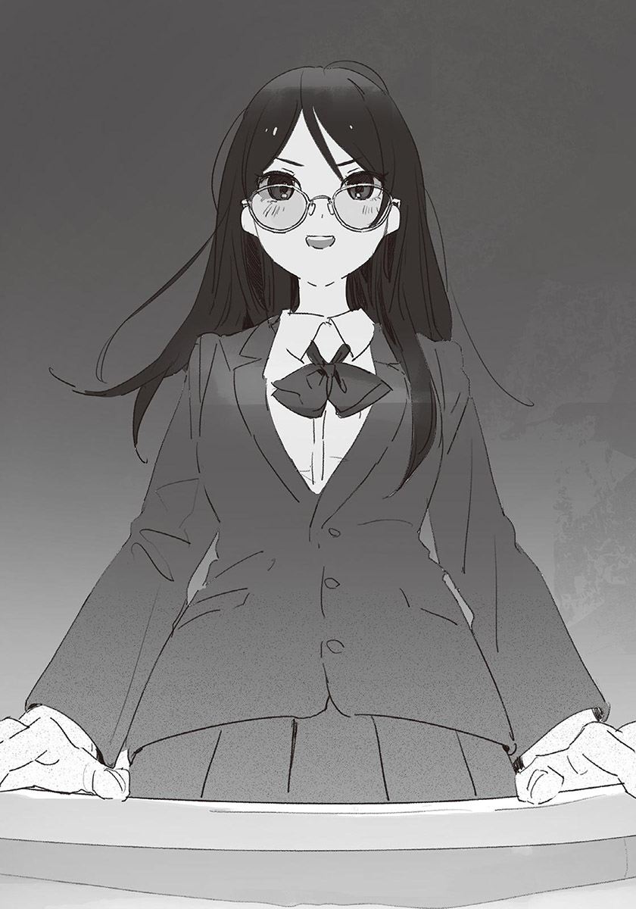轟原本就是有話直說的人，這次特別有幹勁。感覺很可靠。
「大家都知道，離正式表演還有一個月！所以從今天起要開始練習演戲和準備道具了！演技由我指導，後臺方面由七森同學指揮，請大家多多指教！」
被點名的七森同學連忙深深鞠躬。
「戲劇不是一個人能完成的，希望能凝聚大家的力量，呈現最棒的羅密歐與茱麗葉！」
噢——！轟高舉拳頭呼應，「噢——」幾名學生也以含蓄的音量回應。反應不壞。士氣高昂是好事。
但就在這時……
「白痴。」
有人潑冷水似地說道。
我看向說話的人，是西園。她拄著臉頰，露出無聊到極點的表情。
「不管怎麼想，男人演茱麗葉都很奇怪吧。光是這點，別說最棒了，根本是最失敗的舞臺。現在還來得及，要不要重新考慮人選？」
西園尖酸刻薄地口吐惡言，同學們安靜了下來。被挖苦的當事者汐尷尬地低下頭，縮著肩膀。那氣餒的模樣令我心痛，同時也對西園感到強烈的憤怒。
原本以為過了一個暑假，她多少會收斂一點，看來是我太樂觀了。西園的暴君個性根本沒有改變。
假如伊予老師在場，應該會當場指正她吧，可是現在沒有伊予老師，也沒有其他老師。所以班上需要有人代為指正才行。
「才不奇怪呢……」
我決定扮演這個角色。雖然我不習慣在這種情況下出頭，可是也不能默不作聲。我擠出微薄的勇氣反駁。
「又是你？」
西園坐著不動，朝我看來，露出打從心底厭惡的表情。那是我想說的話。這傢伙的腦子裡沒有「反省」的概念嗎？我繼續反駁：
「誰演茱麗葉都可以吧？有人會因此困擾嗎？」
「就算你們不會，觀眾也會覺得迷惑啦。」
「才不會呢。」
代替我反駁的人是星原。她從自己的座位起身，看著西園。
「小汐很漂亮，一定很適合演茱麗葉。而且她和男生不一樣……」
「哈！是嗎？他演只會丟人現眼而已吧？我覺得他別上場比較好哦。」
也許被西園那堂而皇之的氣勢壓了過去吧，星原困擾地低下頭。但接著她又猛然抬起頭，眼中帶著覺悟。
「說那種話的妳比較奇怪！」
我大吃一驚。
就我所知，這是星原第一次以這麼明確的態度對抗西園。西園也出乎意料似地顫動了一下。
「妳在說什麼……聽不懂啦。」
她回嘴時不像平常犀利，似乎是因意料之外的反擊而困惑。「呃，那個……」就在這時，又有其他學生插嘴，打斷西園的話。
是七森同學。
「我也覺得，那個……槻木同學，很適合演茱麗葉……」
我再次感到驚訝。那個內向的七森同學，居然出聲反駁西園。雖然聲音不大，可是就連坐在最後一排的我都聽到了，班上其他人應該也都有聽到吧。
與面對星原時不同，西園的憤怒清楚地出現在臉上。只見她用力咬牙，橫眉豎目地瞪著七森同學。被那銳利到足以穿透鐵片的眼神瞪著，七森同學畏縮了起來。
「我也覺得槻木很適合演茱麗葉。」
西園的視線轉移到轟身上。
「他長得很可愛，所以沒問題。寶塚不也都是女性演男角嗎？」
不對，兩者不太一樣吧……？雖然我這麼想，但總之這是一劑強心針。
其實暑假前就有徵兆了，班上同學開始漸漸接受現在的汐。如今，西園才是班上的異類。
沒想到有這麼多人出聲反駁自己，西園陷入四面楚歌的境地，求援似地環視其他同學，可是每個人都別過臉，不與她對上視線。就連平常與西園交好的學生也是。
西園肩膀發抖，猛地起身。
「有夠白痴！我要回去了！」
她將書包掛在肩上，「砰！」一聲粗魯地打開門，重重踏著腳步離開了。
教室陷入沉默。
一會兒後，轟回過神開口說道：
「呃、那大家就分頭做自己的事吧！」
班上同學分為表演組與幕後組。前者在二年A班的教室練習，後者在多功能室做各種準備。由於星原是執行委員會會長，所以和轟打過招呼後，就快步離開教室了。
留在教室中的學生大約十人。其實演員不只這些人而已，其他人不是去社團，就是有其他事要做。不過練習的第一天能集合到這麼多人，已經算很不錯了。
在教室後方，演員們有的在進行發聲練習，有的則半玩鬧地背誦著劇本。【+】
我和汐分別拿著劇本，面對面地坐在椅子上。轟一手拿著大聲公加油棒，一手扠腰站在我們旁邊。因為我和汐是主演，所以她打算盡力指導我們演技吧。沒人吐槽大聲公的部分。
「那麼從第三頁羅密歐出場的部分開始。」
我打開劇本。
是羅密歐偷偷溜去參加凱普雷特家舞會的場景。畢竟是文化祭的學生話劇，因此是以這個場面作為開頭。原作開始於蒙特鳩家與凱普雷特家僕人們的鬥毆，這部分則由旁白帶過。
我吞了吞口水，開始朗讀臺詞。
「火炬遠不及她的明亮。她宛如裝飾黑夜的天上明珠。又如蹁躚於鴉群中的白鴿——」
「卡。」
唉——轟嘆了口氣。「卡」這個詞不是戲劇用語吧？八成是從電影那裡引用的。雖然說知道是什麼意思就好……
轟聳了聳肩。
「這樣不行啊。」
「哪裡不行？」
「聲音。」
呃——……就算妳這麼說……
「音量雖然夠，可是咬字不清，像含滷蛋一樣。還有，聲音裡沒有感情，應該說感情死透了。」
這、這傢伙。我們以前根本沒說過幾句話，居然批評得這麼直接。
是說，我也知道我唸臺詞時缺乏感情。放入感情唸臺詞的話，會覺得非常難為情。尤其是羅密歐的臺詞，不但誇張且充滿青澀感，光是用看的就想皺眉。也許該和大家商量一下，改寫臺詞比較好。
「雖然我也不太清楚演戲的事，不過你最好先把重點放在發聲練習上。接下來換槻木。」
「好、好的。」
汐看起來很緊張。從剛才起，他就不停舔著嘴唇，確認椅子坐起來舒不舒服似地扭動身體。轟微笑著安慰汐。
「只是練習而已，不用那麼緊張。而且那個潑辣雙馬尾現在不在這裡。」
那過分的暱稱使我稍微笑了出來。
汐做著深呼吸，輕輕說道「好」。他似乎準備好了。
「要從哪裡開始呢？」
「和紙木一樣，從舞會的部分開始吧。第五頁，茱麗葉知道了羅密歐是仇家蒙特鳩家的人那段。」
汐翻開劇本。
開始朗讀。
「情竇初開的對象，居然是蒙特鳩家的獨生子。明明是應該憎惡的對象，我卻無法自拔地受到吸引……」
唸完臺詞，「怎、怎麼樣？」汐不太有信心地發問。
「很讚耶——！」
轟眼神發亮，讚不絕口地道：
「什麼嘛什麼嘛，臺詞唸得超好的，根本不用擔心。不但沒有生硬或太假的感覺，而且充滿感情，會讓人聽到入迷呢。」
「沒、沒有啦……」
汐謙虛地說著，不過看得出來他頗開心。
我和轟一樣，覺得他臺詞唸得很好，充滿感情，精彩到令人驚訝。低沉的聲音相當有情緒的渲染力。
「你參加過演員甄選之類的嗎？那種在聲音裡放入感情的方法，有點專業的感覺。」
「沒有。但是基於個人因素，我曾經做過一陣子發聲練習。可能是因為這樣，才比較有感情吧。」
對了，汐說過，他對自己的低沉聲音感到自卑，所以做過發聲練習……記得是在某次放學時說的。
「哦——這樣啊……」
轟思索起來，低頭看向自己手中的劇本。她猶豫了一陣子，翻著劇本，對汐說：
「要不要試著唸這段？為什麼你是羅密歐的地方！雖然這裡的臺詞有點長就是了。」
「唔——不知道行不行呢……」
「啊，不用勉強沒關係，單純是我想聽而已。不過這裡是羅密歐與茱麗葉的名場面，以後還是要練習就是了。」
汐煩惱了起來，瞥了我一眼，似乎想詢問我的意見。我說出自己的想法。
「我覺得不必急，反正還有時間。再說如果汐演得太好，我的演技就顯得更爛了，希望你不要一下子跑得太前面。」
「所以你要加油啊。」
轟吐槽了我說溜嘴的真心話。確實是這樣，我無話可說。
汐思考了一會兒，下定決心點點頭。
「好。我試試。」
「太好了～來吧來吧。」
轟如導演般將雙臂盤在胸前，做出聽汐唸臺詞的姿態。我也閉上嘴，準備聆聽汐的朗讀。
汐安靜地吸了一口氣。
忽地，汐身上的感覺……不，氣味，某種不知該怎麼形容的東西，改變了。
——羅密歐啊，羅密歐！為什麼你是羅密歐呢？
每一字，每一句，都有如放入了祈禱似的。
那惆悵又感傷的聲音，使我聽得入迷。好到不像演戲般的演技。雖然我只看過學長姊演的羅密歐與茱麗葉，但如今我腦中鮮明地浮現站在豪宅陽臺上傾吐愛意的少女身影。而我就在不遠之處「被傾吐愛意」，想到這裡，我的臉頰有點發燙。
臺詞朗讀完畢。
回過神時，教室中的人全都安靜了下來。
認真練臺詞的人、半開玩笑地唸臺詞的人、連劇本都沒翻開，只顧著聊天的人，所有人全都沉默下來，聽汐朗讀。
我也一樣，半張著嘴，說不出話。
發現情況有異，汐露出困惑的表情，接著滿臉通紅。
「啊、沒有、剛才那是——」
「太讚了！」
轟放聲吶喊。班上同學也跟著轟然叫好。
「槻木好厲害！」「和真正的演員一樣耶！」「我還以為在拍片呢。」「真不得了！」
同學們圍繞在汐身邊。有些人興奮地稱讚他，有些人希望他再唸一次臺詞。面對排山倒海般的讚美，汐混亂了。
「呃……剛才那樣算好嗎？」
「大家不是都這麼說嗎？」
我忍不住吐槽。眼前的情況似乎令他難以置信。
「你的演技真的很好，和其他人完全不同等級哦。」
「是、是這樣嗎……」
汐低著頭，揪緊自己的制服裙襬，肩膀微微顫抖。
他不高興嗎？周圍的同學們也發現了汐的異狀，聲音愈來愈小。
汐維持低頭的姿勢起身。
「對不起，我去一下側所。」
他迅速說完，快步走出教室。
我緊張了起來，該不會踩到他什麼地雷了吧？
「我、我去看看情況。」
我不等其他人回應，直接追了出去。
幸好我馬上就找到汐了。他果然不是去廁所，而是來到走廊的盡頭處。他背對著我，就像從窗口低頭看著外面似的，我無法明白他的表情。
「汐，你還好嗎？」
我對著他的背影發問。「我沒事。」汐並沒有回頭，以帶著鼻音的說話聲回答。這樣根本不是沒事吧。我愈來愈不安了。
「你、你果然覺得演茱麗葉很勉強嗎？如果是現在，就算你說不演，其他人應該也不會有意見哦。」
「不，不是那樣……」
嘶，汐吸著鼻子。
「我只是，覺得很開心。因為被大家稱讚了。」
啊……原來如此。
考慮到以女生身分上學後汐的心情，可以理解他現在的感動與感慨。
我鬆了一口氣。既然如此，現在就先讓他自己獨處吧。
「我知道了。你慢慢來沒關係，不過冷靜下來後要記得回來哦。」
汐無言地點頭。
我轉身走回教室。我本來還很緊張的，但若是這種原因，我就放心了。
我回到教室後，其他人不安地聚到我身邊。
「槻木還好嗎？」
轟擔心地發問。
「沒事。他只是太開心了。」
「太好了～」轟由衷地鬆了口氣。其他人也都露出安心的表情。「嚇我一跳。」「還以為講了什麼不該說的話呢。」可以聽到這樣的聲音。
轟摸著眼鏡的鏡腳，略帶歉意地笑了起來。
「我啊，自從槻木穿女生制服上學後，一直不知道該怎麼和他互動呢。所以說話時，心裡其實一直很緊張。幸好他覺得開心。」
「啊——我懂。」
另一個女生附和。
「因為沒碰過像汐那樣的人，所以不知道該怎麼辦呢。如果不小心中講了什麼傷害他的話，也很不好意思。」
「妳想太多了啦。」
另一個男生道：
「普通地說話不就好了。太小心翼翼的話，他反而會覺得不舒服吧。」
「你講歸講，自己還不是躲著槻木。」
「哪有。我才沒有躲他……只是不知道該和他說什麼而已。」
「我也是啊。」
眾人開始說起對汐的想法，從他們的話聽來，共通點是「不知道該怎麼和汐相處」。在知道大家都和我一樣之後，我感到安心，但是在想到汐的心情時，又覺得有點悲傷。
一直卡在門口也不好，我正想走進教室，「吶。」有人叫我。我回頭，只見到肌膚晒成健康小麥色的女孩真島，以及穩重冷靜的椎名。

「什麼事？」
是要討論演戲的事嗎？她們也和我一樣參與了演出。我記得真島演的是茱麗葉的奶媽，椎名是神父。
「沒什麼事啦，我只是想說汐的演技很精彩而已。」
真島回答。
雖然不到星原的程度，但真島與椎名對汐也都很友善。也許是因此吧，比起和西園，她們最近更常和星原在一起。說不定是因為在對汐的態度方面，她們和西園合不來的緣故。
「確實。演技好到嚇我一跳呢。」
「吶——紙木，你有沒有因此心跳加快呢？」
「心跳加……才沒有咧。」
「真的嗎～？我明明有看到，你那時候有點臉紅哦。」
真島打趣地說著，看樣子，我被她取笑了。
「看我幹嘛。看汐啦。」
「我當然有好好看著汐哦。小椎也是，對吧？」
被真島一問，「嗯。」椎名點了點頭。
「我也認為槻木同學演得很好，好到覺得他可能很有演戲的天分……先不管那些，紙木同學。」
椎名叫著我的名字。
「你是不是有話該對我和真凜說？」
「咦？」
我傻住了。在這種情況下該說的話？有嗎——
「……啊，社團。妳們應該都很忙吧？」
我記得真島是軟式棒球社，椎名是吹奏樂社的。
「嗯啊。」真島回答。
「暑假後，三年級生都退出社團了，所以我成為隊長，忙得不得了哦。不過我還是想享受文化祭，所以才會報名演戲。」
「哦，隊長。真厲害。」
「是吧——？可以請我喝飲料哦。」
「幹嘛請妳……椎名，妳呢？」
「還好。我們社團沒有那麼嚴格，悠哉地練習就可以了……我不是要說那個。」
椎名瞪著我。
「你啊，上次期末考時不是拿到第一名嗎？雖然不能說是我們的功勞，但我們好歹在讀書會時教過你功課，至少要道個謝吧？」
嚴厲的語氣使我感到慚愧。但她不高興也是應該的。自從期末考後，別說道謝了，我根本沒主動和她們說過話。
「小椎很在意這類的事哦——雖然我是無所謂啦。」
「妳太隨便了。這樣會被學妹看扁哦。」
「欸——耳朵好痛。」
真島扭動身體。
「那個——」我出聲，使她們意識到我。
「真的很謝謝妳們。沒有妳們的幫忙，我想我應該沒辦法拿到第一名。」
「……這樣就好。」
椎名滿意地哼了一聲。幸好她能接受這說法。
「對了紙木，你和小夏怎麼樣啦？」
真島若無其事地發問。
「什麼怎麼樣？」
「還問，當然就是——」
真島把嘴湊到我耳邊小聲說：
「你不是對小夏很著迷嗎？」
「什！」我忍不住揚聲。
「妳、妳在說什麼啊笨蛋！怎麼可能啊。妳不要亂說。」
「咦？是這樣嗎？什麼嘛～是我誤會了嗎～」
真島一面說，一面意味深長地笑著。椎名訝異地皺眉。
「妳在怪笑什麼？真噁心……夏希和紙木同學怎麼了嗎？」
「沒事沒事，妳不用在意。」
真島笑嘻嘻地對我偷偷眨眼，似乎想幫我掩飾。
話說回來，是什麼時候？什麼時候被真島發現的？是在報名擔任執行委員時嗎？還是在讀書會時？或者從三個人一起回家的那時候起？還是——是說……
我該不會很好懂吧……
不只汐，世良八成也發現了。所以真島發現也不奇怪。應該說，完全沒發現的椎名反而很遲鈍。
「小夏很冒失，你要一直看著她比較好哦——上次我和她去看電影時，她把爆米花撒得滿地都是呢。」
「說好九點集合，結果把早上九點想成晚上九點。」
椎名補充道。「有有～」真島回完，「不過……」表情忽然變得認真起來。
「她最近好像打算改變自己呢。」
椎名嗯嗯點頭。
「是啊。她最近很努力呢。」
真島和椎名認識星原比我久。知道她們認同了星原的努力，我沒來由地感到高興。
「啊，汐回來了。」
真島看向門口。我也跟著看了過去，見到汐走進教室。「你還好嗎？」轟帶頭發問，其他同學也窺探似地迎了上去。
「我們也過去吧。」
真島對椎名說完，兩人一起朝汐走去。
我感受著嘴角勾起的心情，也跟著過去。
✽
最近經常可以見到學生在學校裡來回奔波。那些學生大多是執行委員。
我也是其中之一。今天也因執行委員的工作而忙碌。分開看的話，每件工作都沒什麼大不了的，可是數量相當多。執行委員會的營運組似乎還身兼雜工，我老是被其他組的人找去「幫忙」。本來以為是輕鬆的職務，沒想到一點也不輕鬆。
順帶一提，我眼下的工作，是在指定的場所貼海報。這算是輕鬆的工作，昨天搭帳篷時人手不足又下雨，才真的是累死人。
我打開最後一張海報，以圖釘將其釘在公布欄上。
「貼完了。」
我拍去手中的灰塵，回到學生會室。
文化祭的籌備期間，學生會室也兼作執行委員會的總部。目前，委員會的事務工作與處理學生的投訴，都已經在學生會進行了。
「打擾了。」
我走進學生會室，向委員會報告自己的工作已經完成。這樣一來，今天就沒別的事了。我正想離開教室。
「對不起！」
此時我聽見星原響亮的道歉聲。
星原正站在教室後方，對臉色很難看的三年級生低頭道歉。
「幸好這次我有先檢查一遍，不過請妳下次要小心。交給保健所的申請書要是有疏漏，可是很麻煩的。」
「是，對不起……」
三年級生拿著文件離去，星原垂頭喪氣地坐回椅子上。
真糟糕，來的時機太不好了。我想幫星原打氣，但是半調子的關心，反而會讓她覺得更悲慘吧。
該怎麼辦？我煩惱著，又有其他的三年級生過來了。
「呃～星原學妹，妳現在有空嗎？」
「是！」
星原猛然抬頭。
那三年級生臉上掛著顧慮的笑容，拿起手中的文件。
「這邊需要執行委員會會長的印章，可以請妳蓋一下章嗎？」
「好、好的。我知道了。」
星原從堆滿文件的桌上拿起印章，蓋在三年級生拿來的文件上。
「謝謝！還有……預算檢查完了嗎？」
「啊、呃，已、已經做完差不多一半了。」
三年級生的臉僵了一下。
「是、是嗎？不過最晚可以明天完成。不能出錯哦？」
「對不起……」
「那就麻煩妳了！」
三年級生很快地離開了。星原輕聲嘆氣。
看樣子，她累積了很多工作。雖然之前就有徵兆了，但離文化祭愈近，她愈是沒有餘裕。仔細想想，最近這陣子，星原沒有比我先離開學校過。她究竟在學校留到多晚呢？
——你要好好幫夏希哦。
我想起汐的話。
我做了個深呼吸，用力握拳。
「要不要幫忙？」
我以豁出去的心情發問。
星原睜大眼睛，有點難為情地笑了起來。
「沒關係。你還要回去排戲吧？」
她說的沒錯。最近這陣子，執行委員的工作做完後，我都要回班上排戲。
「是沒錯，但也不是非回去不可。」
「沒關係啦沒關係。要以排戲為優先，我沒問題的啦。」
星原拒絕了。她似乎很堅持要自己完成工作。應該說，她極度想避免「靠別人」的情況。應該是認為借用他人的力量，會妨礙自己的獨立成長吧。
我不反對這種想法。就算沒效率，而且容易變得孤獨，但能以自己的力量完成什麼，仍然是很了不起的事。儘管如此，我還是想幫星原，不想見到她受傷的模樣。
「……星原，妳還記得七月時，我們兩人去家庭餐廳的事嗎？」
我以在學生會室中工作的人聽不見的音量發問。「嗯。」星原困惑地點頭。
「妳那時說過，如果我在期末考時拿到第一名，妳願意答應我的任何要求，對不對？」
「幹、幹嘛現在說那個？」
星原警戒地縮著身體，臉上出現懼色。我本來是為了讓星原接受，所以才照順序說的。早知道會這樣，不如先說結論。我後悔起來。
「讓我幫妳的忙。這就是我的要求。」
「咦？」
星原一臉錯愕。
「我本來就在想，該做什麼要求比較適合。用在這種時候應該是最好的。玩RPG時，我也都把重要的回復道具留到最後關頭才使用。」
「雖然我也是……不過，真的可以嗎？」
「不要的話，我就想別的要求。」
「不，就這個，就這個吧。我找一些工作給你。」
星原連忙翻找起堆積如山的文件，拿出幾張A4的紙給我。
「那就麻煩你幫忙校正傳單和手冊的文章了。好像有很多錯字……」
「知道了。我很擅長做這個。」
我拿著文件，隨便找了張椅子坐下，以手指滑過文字，迅速地檢查錯漏字。
「你也真奇怪。」
「……會嗎？」
我檢查著文件，含糊地回答。
後悔在心中緩緩擴散。有種可惜的感覺。但我本來就不打算提出會讓星原困擾的要求，所以用在這種場合，肯定是最適合的。
過了一陣子，我放下紅筆。檢查完畢，有很多錯漏字和文法出錯的地方。幸好能趁時間還充裕時校對。不過這種文化祭時發放的東西，就算有一些小錯誤，應該也沒人在意吧。
「檢查完了。」
我把傳單和手冊的初稿還給星原。星原很快地看過，點點頭。
「謝謝。其實截稿日快到了，你幫了我大忙哦。」
「沒什麼啦。總之有需要時不用客氣，儘管找我幫忙。」
我努力裝得若無其事，但還是臉紅了起來。管不住表情的自己真沒用。就在我鄙棄自己時，星原對我微笑。
「紙木同學真可靠。你能成為執行委員，真是太好了。」
「嗯……嗯。那我回班上了。」
「練習要加油哦。」
我轉身離開學生會室。
雖然我裝得很平靜，其實很想放聲大喊。
——你能成為執行委員，真是太好了。
太、太開心了～！真的就像星原說的，我能成為執行委員，真是太好了。眼淚差點奪眶而出。要不是走廊上還有路人，我八成會小跳步地走路吧。
得感謝建議我報名執行委員的汐才行呢……我一面心想，心花怒放地向前走。
「唷，咲馬。」
身後有人呼喚我，我差點向前摔倒。
「嘖。」
因為叫住我的，是世良。他把雙手插在口袋裡，一如往常地笑得很可疑。
「嘖。這種問候方式太過分啦。如果不是我，會覺得很受傷哦。」
「……不是你的話，我根本不會那麼說。」
大概吧。
雖然我很受不了世良——應該說很討厭他，不過我現在心情很好，不介意和他多說幾句。「有什麼事？」
「沒什麼事。只是看你很開心，所以打個招呼而已。發生了什麼好事嗎？」
這傢伙，看得真清楚……還是說，我太好懂了？
「算是吧。」
我含糊地回答，不想說出真相。「哦？」世良意味深長地打量著我。
「是不是和夏希有關？」
你怎麼知道？
「不是。」
我否認。「嗯哼。」世良清了清喉嚨。
「『紙木同學真可靠。你能成為執行委員，真是太好了。』」
「什……！」
「怎麼樣？學得像嗎？」
「一點也不像。是說你根本看見了嘛。」
哈哈。世良愉快地爆笑。這傢伙的個性真的很爛。雖然我想直接離開，可是一味地被笑使我很不痛快。
「你也是執行委員吧？可以認真工作嗎？」
「欸～我有哦。我正以監查組的身分巡邏呢。如果做的東西和交給執行委員會的企畫案不一樣，就得提出警告哦。」
「呵，天曉得。反正你只是在摸魚打混吧。先說，你可別給星原找麻煩哦。」
「才不會呢。你倒是很在意夏希呢。」
世良一面賊笑，一面以討好的語氣說話。與說話口氣不同，他的眼神中帶著嗜虐之色。
「……因為我們都是執行委員，當然要多注意她了。」
「那女孩真的那麼有魅力嗎？先不說好壞，她很膚淺，或者該說看久了很無趣，就這方面來說，我更喜歡你和汐呢。」
我眼角抽搐了一下。
這些話應該是為了挑釁我而說的吧。以為只要貶損星原，我就會生氣。他的想法沒錯，但我不會讓他稱心如意。
「要那麼想隨便你。反正星原也不想被你喜歡。」
「不過她胸部很大呢。」
「我揍你哦。」
「哈哈哈！」
算了。和世良說話果然是浪費時間。
我朝二年A班的教室前進。
「咦？你要回去了？」
「要回班上排戲。你可別跟過來哦。」
「對了，A班要演羅密歐與茱麗葉呢。」
我不回答，直接邁步，但這時世良從背後叫住了我。「吶，咲馬。」由於他的聲音中沒有平常那種令人厭惡的感覺，我有點在意，停步回頭。
「幹嘛？」
「你覺得為什麼，羅密歐與茱麗葉兩個人都死了呢？」
「……因為運氣不好吧。」
「我是在問更根本的原因哦。」
「更根本的原因？」
世良穩重地笑著。
「因為就戲劇來說，比起死一個人，死兩個人更精彩哦。」
✽
最近這陣子，每天的生活密度都很高。
因為接了執行委員會與話劇，我與其他人互動的機會增加，回家時都累得像狗一樣，看書的速度明顯變慢。
但是與讀書量低落呈反比，食欲變得很旺盛。應該是運動量增加的緣故吧。今天我也因為只吃家裡帶的便當不夠滿足，前往學校的合作社。
我下了樓，在一樓的走廊前進。在經過鞋櫃區時，遠遠看到排隊的人龍。
「唔哇，人好多……」
合作社裡擠滿了人。應該都是和我一樣，吃完便當後來買零食或冰品的人吧。雖然人多到令人洩氣，但是也有「食欲之秋」的真實感。
由於我不想人擠人，而且還有時間，所以我決定等人少一點再過去。
合作社前人太多，我靠在牆邊，以免擋到其他人。這個時間來合作社的，大部分是從餐廳回來的學生。
我在來往的人群中，發現一名髮色誇張的女學生。
是西園。她正和其他班的女生們走在一起。應該是剛從餐廳回來吧。最近午休時間一到，她就會立刻離開教室，原來是和其他班的女生吃飯嗎？說不定她覺得待在A班很不自在吧。
「吶，要不要順便去合作社？」「啊，我想吃雪糕。」「會胖哦——？」「不然吃冰沙好了。」「還不是會胖。」「有誰想吃巧克力雪派的——」
即使在吵鬧的走廊上，也能清楚聽到她們高亢的聲音。但是西園的聲音沒有混在其中。仔細一看，西園臉上掛著含蓄的笑容，只是點頭附和，很少開口說話。應該說，與那群女生有點疏離。
這也是當然的。我心想。
就算她是A班的女王——不，正因為她是自尊心很高的西園，所以難以打進早已成形的其他班級的小圈子裡。再仔細一看，西園時不時地會露出嚴肅的表情，似乎待得很痛苦。
我正恍神地觀察西園，忽地與她對上視線。
西園瞪大眼睛，臉上充滿受到羞辱般的憤怒。不妙。我立刻別過頭，但她已經筆直地朝我走來了。
我想裝成沒發現她，趁機逃走，但已經太遲了。「喂。」我朝西園回頭的同時，大腿被她狠狠踢中。
「好痛！」
「給我過來。」
西園粗魯地扯著我的領帶，把我拉到沒什麼人的樓梯旁。接著推開我似地放手。
「你剛才在笑我對吧？」
「才沒有。」
「不然幹嘛一直看我？」
我整理著領帶，把想嘆出口的氣吞了回去。
「哪有什麼原因，只是妳剛好走到我視線範圍裡而已。妳是不是有點自我意識過剩了？」
「啥？你把我當白痴嗎？」
「才沒有……所謂的自我意識過剩，就是這樣啦。」
呿！西園用力啐了一聲，煩躁地以指尖摳著側邊頭髮。
「每個人都……到底是怎樣啦。」
她的心情相當不好。雖然暴躁易怒，但平常的西園還算思路清晰，可是現在的她似乎停止了思考，完全是感情用事的狀態。 和這種情況下的人說話，不會有什麼有意義的結果。
「……我可以走了嗎？」
「當然不行。」
「為什麼？」
西園瞪著我，為了讓自己看起來更有氣勢似的，將雙手交叉在胸前。
「……你是怎麼洗腦夏希的？」
「妳在說什麼？」
「因為夏希不應該會對我說那種話。」
「那種話？」
「……妳比較奇怪，之類的。」
我真的傻眼了。同時，怒氣使我忍不住脫口而出：
「妳啊，對汐說了那麼多過分的話，自己被星原指責時，卻裝出受害者的模樣，說星原不應該會對自己說那種話？就算星原人再好，朋友一直被那樣羞辱，肯定也會生氣的。」
這種事，妳應該懂的吧？——保險起見，我又追加了一句。
西園低著頭，肩膀不住發抖。由於她一直沒有抬頭，我擔心起自己是不是說得太過分了，把頭探過去看她。
「唔哇！」
西園的拳頭擦過我的鼻尖。
能躲開只是運氣好。假如我的頭再往前一點，鼻子說不定會被打斷吧——現在不是冷靜分析這種事的時候。西園氣勢洶洶地揪著我的領子，以不像女孩子的力氣，把我按在牆上。
「像你這種沒有主見的人，好意思裝出明理的樣子！」
口水噴到我臉上。西園以左手揪著我的領子，右手朝我揮拳。
「等、等一下！妳冷靜一點！」
西園不斷毆打著，我除了舉起雙手保護臉部之外，什麼都做不到。
就在我雙手失去感覺時，「你們在做什麼！」有人大喊。我從手臂之間的縫隙向外看，只見伊予老師衝下樓。
「亞里沙！快住手！」
伊予老師一到場，立刻把西園架開。西園掙扎了一陣子，也許是累了，最後總算不再反抗。
「紙木，你還好嗎？」
「我、我沒事。」
被打的部位雖然很痛，但沒什麼大不了的，頂多手臂多了點瘀血而已。
伊予老師抓著西園的肩膀，讓她轉身面向自己。
「為什麼要做這種事……」
沒有回應。西園嘴巴抿成一條線，低著頭，什麼都不說。再這樣下去沒完沒了，伊予老師放開西園，皺眉思考起來。
「……你們兩個，吃過午餐了嗎？」
「吃過了……」
「亞里沙呢？」
西園仍然保持沉默，但微微點了點頭。
「那你們跟我來。」
伊予老師說完向前走。我看了西園一眼，跟了上去。幾秒後，西園也跟了上來。
我們爬上樓梯，經過走廊，來到教職員室。房間後方有以屏風隔出來的諮商區，是只有桌椅的小空間，一般是討論將來出路時使用。
「你們也坐下吧。」伊予老師坐下後，對我們說道。我照著她的話坐下，西園遲疑了一下，在我旁邊——但是特地把椅子拉遠——坐下。
「我再問一次，為什麼會變成那樣呢？」
伊予老師發問，由於西園仍然不肯說話，只好由我回答。
「……我在走廊偶然碰到西園，稍微爭論了一下。」
「爭論？」
「我沒有錯。」
西園突然從旁插嘴。
「汐當男人絕對比較好。為什麼大家都不懂……」
她垂著頭，詛咒似地低語。
也許是因此明白發生了什麼事，伊予老師說著「原來如此啊。」將身體靠在椅背上。唧……折疊椅嘎吱一聲。
「為什麼妳那麼認為呢？」
西園微微抬頭，訝異地皺眉。
「……因為很浪費。」
「浪費？」
「汐當男人的話，就不會被其他人當成怪胎，也不會被看扁。像現在那種半調子的生活方式，一定會活得很辛苦，這種事不管是誰都懂，不是嗎？」
西園的話，令我想起不愉快的記憶。星原以「讀書會」之名找她來時，她也說過同樣的話。當時的我無法反駁，只能沉默不語。
在那之後，我也想了很多。
西園對自己的想法深信不疑，認為自己是打從心底為汐著想，絕對不可能有錯。那信念有如大樹的樹根般不可撼動，我認為那正是她強悍的地方。
可是……不對。西園並不明白，對汐來說，那不是浪不浪費的問題。
「西園，妳——」
「別說了，紙木。」
伊予老師打斷我的話。
她從椅背挺起身子，直視著西園。西園以嘔氣的表情，無視伊予老師的目光。
「的確，以現在的樣子生活或許很辛苦，而且今後應該也會碰上許多辛苦的情況。」
「那——」
「所以老師才會想為他加油，希望他能得到幸福。」
伊予老師真摯地說著。
西園不甘心地咬牙。
「得到幸福？既然如此，更不該贊成汐當女人，不是嗎？人類很容易改變想法，為什麼要在明知汐會吃苦的情況下，肯定現在的他呢？身為老師，不是該為學生的將來著想嗎？」
伊予老師嘆了口氣。
「亞里沙，妳有過當男人的想法嗎？」
「啊？幹嘛突然這樣問。當然沒有啊。」
「但人的想法很容易改變，不是嗎？將來妳會經歷很多事，說不定會發現自己的內心其實更複雜。說不定會改變想法，覺得自己過去的觀念是錯的。」
「我……」
「聽好了，亞里沙。人會改變，這個想法本身沒有錯，但那基本上是爭了也沒用的事。就算將來想法可能會改變，因此否定現在，把妳的理想強加在汐身上，並不是好事。」
「……」
西園咬著嘴唇。儘管沒有反省的感覺，但可以感受到某種動搖。
「我知道妳是為了汐好，這份關心很重要。可是絕對不能因此傷害他人。否則，當妳的立場變弱時，那些事一定會反饋到自己身上。如果妳覺得憤怒，隨時可以來找我。」
「夠了。」
西園打斷伊予老師的話，起身。
「不要對我說教。立場變弱？怎麼可能。我會一直處在強勢的那邊，不用妳擔心。少多管閒事。」
說完這句話，西園不再理伊予老師，離開諮商區。
——我會一直處在強勢的那邊。
雖然西園那麼說，但是她離去時的背影，看起來就像與父母走散的孩子般脆弱。
伊予老師起身，離開諮商區。
不久之後，她又一個人走了進來。是追不上呢，或是明白再繼續說下去也沒用？總之她一臉放棄地坐下，看著天花板。
「……還真難啊。」
聲音中滲出濃濃的疲憊，可見她剛才相當緊張。雖然伊予老師露出懶洋洋的模樣，但我還是很尊敬她。
「我覺得老師很厲害哦。我的話……根本沒辦法反駁西園。」
看著伊予老師這樣的成年人，可以明白自己是多麼幼稚無知。如果在「讀書會」時，我能以那些話反駁西園……我正感到後悔時，伊予老師已經挺起身子了。
「沒必要在嘴巴上爭論。最重要的是態度哦。只要你一直表現得很重視汐，就能堅定表明自己的立場了。」
「……真的嗎？」
「真的！要相信老師。」
「……是。」我迷惘了一下後答應，伊予老師露出微笑。
她坐著伸了伸懶腰。
「唉——第五節要開始了，我還沒吃午餐的說……」
「可以邊吃邊上課啊。」
「原來如此，還有這招……怎麼可能那麼做呢！」
伊予老師快活地吐槽，原本嚴肅的氛圍一掃而空。笑得爽朗的伊予老師，在我眼裡看起來比任何人都可靠。
✽
忙到昏天暗地的日子仍然持續著。
一放學，就得立刻衝去做執行委員會的工作。我的職務基本上是打雜，例如到各班回收文件，或是把膠帶、木材之類的耗材送到各班。今天的工作，是在體育館製作放在校門口作為裝飾的拱門。
拱門是由執行委員會製作的，會在文化祭當天設置在校門口。今年的拱門是以西洋城堡為主題，好看歸好看，可是製作起來很花時間和力氣。
「完成了。」
尖塔部分的原型完成了。組合與上色改天再一起做就好，今天做到這裡就行了。在著手做其他部分之前，先休息一下吧。
我把切割保麗龍用的美工刀放在地上，站起來伸懶腰。腰部發出劈劈啪啪的聲音。
我環視周圍。除了執行委員之外，還有不少班級的學生正在製作展示品，例如某種塑像或巨大的馬賽克畫。難以在教室製作展示品的班級，會借體育館製作。由於能借用體育館的日子有限，所以每個人都是一邊聊天，一邊認真做事。
「保麗龍不夠了！」
一名三年級的執行委員說著，朝我看來。
「保麗龍不夠了哦。」
為什麼要說兩次？
先不管我心中的吐槽，他是希望我說「我去拿」吧。沒辦法，反正我手上作業已經告一段落了，就去跑個腿吧。
「那我去拿。」
「謝啦。」
學長說著，再次埋頭工作。
話雖這麼說，但應該不用立刻去拿吧。等休息完再去就好。
「啊，紙木同學要去拿保麗龍嗎？」
穿著運動夾克、手上拿著銼刀的星原抬起頭。也許因為一直待在悶熱的體育館裡吧，她額頭滲出汗珠。
「是啊。如果妳那邊有缺，我可以順便拿一些過來哦。」
「真的嗎？那請你多拿一些保麗龍。我們這邊也不太夠用了……」
「好。我知道了。」
「謝謝！」
我一下子變得精神百倍。既然被星原道謝，就不能拖拖拉拉了。我很喜歡自己這種單純的部分。
「喂，接著劑沒了。」
我正想去拿保麗龍時，同為執行委員的能井對我說道。
關我什麼事……雖然我想這麼說，不過他應該和剛才那個學長一樣，言下之意是「因為沒了，所以你去拿」吧。儘管那種隨便的態度令人火大，但反正之後還是得用到，我就順便拿吧。感謝我吧。
「真是的……」
我不情不願地答應，能井鄙視似地用鼻子哼笑。
「要三分鐘以內回來。」
煩、煩死了～！
我大步離開體育館。
執行委員會的工作結束後，是排戲的時間。
「就說不要害羞！要抬頭挺胸！」
我與汐正在練習陽臺的場面，轟在一旁指點。她大聲說著已經講過十次以上的話。
「半調子的表演是最不好的哦！到時候，在舞臺上出醜的可是你哦～？」
就算妳這麼說我也沒辦法啊。雖然我努力想克服，可是羅密歐那浮誇的臺詞和個性陰沉的我，簡直天生八字不合。我真想問問寫出這劇本的人，到底在想什麼。
……啊，對了。
「可以稍微改變臺詞嗎？如果改得稍微硬派一點，我就能抬頭挺胸地演了。」
「欸——那樣不是很無聊嗎？讓觀眾覺得難為情的青澀感，才是羅密歐與茱麗葉的精髓哦。」
「不、可是……汐，你覺得呢？改寫一下比較好吧？」
我向汐求助。在演技方面，轟從來沒有批評過汐，不只如此，汐光是唸臺詞，轟就會非常開心。假如汐贊成改寫臺詞，轟應該會同意——
「我覺得這樣就可以了。」
汐冷淡地打回票，使我失去退路。
「看吧～連槻木也這麼說。你要放得更開，這樣才不會覺得丟臉。要不然，我演給你參考好了。」
「咦？妳會演戲嗎？」
「哦，小看我耶。你就看著吧。」
轟清了清喉嚨，不看劇本，直接默背出一段羅密歐的臺詞。不論抑揚頓挫或表情，全都自然到我完全比不上。沒想到她真的會演戲。
「哦——好厲害。」
我真心稱讚。「是吧？」轟得意地挺胸。
「因為我看過很多電影，演技自然就變得很好。」
不是，看過的電影多寡和演技有什麼關係……？雖然我這麼想，但轟確實演得很好，所以我無法回嘴。
「芽衣子真的很會演戲呢。妳應該上臺的。」
汐也說出感想。芽衣子是轟的名字。
「不行不行，我想當的是導演。導演兼演員太奇怪了。」
「不、不會啊。」
不遠處傳來含蓄的反駁。
我看向說話的人。七森同學正小心翼翼地朝我們走來。她剛才還在和其他演員討論戲服的事，看來是討論完了。
「不會嗎？」
汐如此問道後，七森同學連連點頭，走到我們面前。
「呃，有很多導演兼演員的電影哦。從主演到小配角都有。」
「是這樣啊？妳懂的真多。」
「因為我也喜歡看電影……」
無論是導演可以兼演員，還是七森同學喜歡看電影，我之前都不知道。她之所以特地過來告訴我們這些，應該是因為真的很喜歡電影吧。相比之下……
「其實我也知道哦。」
轟臉不紅氣不喘地扯謊。這、這傢伙……
「……三腳貓。」
「哦～！？這話可不能裝作沒聽到哦！接下來我會斯巴達式地特訓你，你就做好覺悟吧？」
「欸！？」【+】原书上写的是“え”右上角加两点
早、早知道就不說了……不過這算自討苦吃吧，也只好認了。
汐與七森同學看著我們，輕笑起來。雖然我覺得自己又遜又丟臉，但不覺得難堪。
沒辦法。不管是斯巴達還是啥，都只能接受了。只希望我的演技能因此變好。至於丟臉的臺詞，也只好繼續忍耐了。
——如此這般。
雖然有很多不順利的部分，但我現在的學校生活算是過得很充實。文化祭最快樂的是準備期間。雖然我很鄙棄這種說法，不過確實很快樂。
如果這樣的日子能一直持續下去就好了。
✽
十月。
風中開始帶著清冷。原本猛烈的日照，被盈滿空氣的秋意中和後，變成溫煦的陽光。
我對舒適的天氣依依不捨，踏入悶熱的體育館。
下星期六就是文化祭了，今天要穿著正式表演時的戲服，進行羅密歐與茱麗葉的彩排。沒空參加彩排的人，則是在籃球社的更衣室試穿戲服。順帶一提，由於羅密歐的衣服還沒有做好，所以我是穿著制服排戲。
演員還沒到齊。一個人杵在體育館正中央也很奇怪，所以我走到角落，靠在牆邊。
冷靜不下來。雖然我一面做執行委員的工作，一面練習，總算磨出了還算能看的演技；但是在他人面前表演，我還是有抗拒感。更何況是在體育館的舞臺這種受盡注目之處表演。
「你很緊張呢。」
蓮見走到我身邊，極為自然地看穿了我的心情。
他負責的是後臺工作，今天是來調整照明的。對於喜歡觀察人類的蓮見來說，站在能看遍整個舞臺的上方渡橋調整燈光，應該如魚得水吧。雖然觀察的定義有點不一樣就是了。
「唔，我確實不習慣受人注目……」
「以你這種個性，居然願意演男主角啊。」
「其實……我也是這麼想的。應該是被汐影響了吧。話說回來，如果不是汐演茱麗葉，我也不會答應演羅密歐。」
仔細想想，這幾個月來，我所有引人注目的行動，全都和汐有關。報名執行委員，是因為汐推了我一把；在上學期的期末考拿到第一名，是為了不讓汐與世良交往。因汐的決定而產生的波瀾，今後也會一直影響我吧。想到這裡，我不禁感慨良多。
「這麼說來，是槻木把你拉到表面的舞臺上呢。」
我瞪大眼睛。
「幹嘛突然說這種漂亮話。」
「我只是普通地說感想而已。」
蓮見傻眼地說完，以「話說回來——」起了個新話題，繼續說道：
「說人人到，槻木來了哦。」
「咦？真的嗎？」
蓮見以下巴指了指體育館的入口。我看了過去，只見換好衣服的演員們聚集在那裡。如蓮見說的，正中間是穿著豪華禮服的汐。縫了許多荷葉邊的長裙，隨著身體的動作，輕飄飄地搖晃不已。
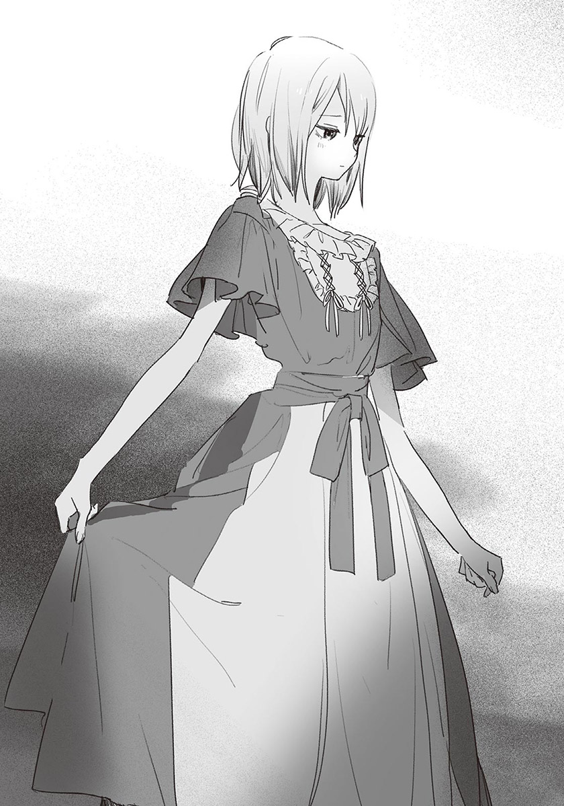我與汐對上目光。
汐向其他人說了幾句話後，逃出人群似地朝我這邊小跑步過來。
「那我到上面去了。」
蓮見說道。繼續待著也沒差啊——雖然我這麼心想，不過蓮見和汐沒什麼交集，硬把他留下來也不太好。我應了聲「好。」目送他前往上方渡橋。
彷彿輪替似的，蓮見一離開，汐就走到了我旁邊。
「打擾到你們了？」
「沒有。我們本來就不會聊太久。」
「是嗎……？你和蓮見同學很要好呢。」
「沒，普通而已。」
午休時與蓮見一起吃午餐，體育課有需要兩人一組時就和蓮見組隊。雖然如此，可是我沒有什麼「要好」的感覺。硬要說的話就是「不近不遠」的關係吧。
「你和他平常都聊些什麼？」
汐發問。
「就是普通的閒聊。他偶爾會說一些名言佳句。」
「哦，是好人？」
「人不壞就是了。」
我覺得有點難為情，所以含糊帶過。願意和朋友不多的我說話，不能不承認蓮見是好人。
「比起那種事。這身衣服很適合你呢。」
我轉移話題，「是嗎？」汐以不怎麼有自信，但是難掩開心的語氣說道。
「雖然大家都說好看……可是會不會太誇張了？」
汐低頭看著自己的戲服，不自在地縮著身子。這麼說來，暑假約在車站見面時，他也是這種反應。可能是不習慣穿有女人味的衣服吧。
「不會哦。你可以抬頭挺胸，更有自信。那樣一來七森同學應該會很高興的。」
唔嗯，汐曖昧地應聲，靦腆地別過臉。難為情與對七森同學的顧慮，在他心裡互相拉扯。八成是因為那樣，所以才會回應得這麼含糊吧。我猜。
「要開始彩排了哦！」
轟站在舞臺前方叫道。還在摸魚打混的演員們不再聊天，跑上舞臺。
「走吧。」
我和汐也走向舞臺。
正式表演時會先放下布幕，把除了舞臺之外的燈都先關掉。但彩排時不需要注意觀眾的感覺，所以是在全開的燈光下進行。
旁白說明時代背景後，羅密歐與茱麗葉直接登場。
潛入凱普雷特家舞會的羅密歐，在會場遇見茱麗葉，兩人瞬間墜入愛河。儘管得知對方是仇家子女，仍然無法停止愛慕之情。
『愛的力量能夠做到任何事，朦朧的夜色能遮蓋他們的眼睛。』
我飾演的羅密歐朝站在陽臺——不，是舞臺上方通道的茱麗葉傳達情意。正式表演時，會以道具與打光製造出陽臺的感覺。
……是說，這場面不管演多少次，都很令人難為情。雖然事到如今還講這種話，但羅密歐與茱麗葉是最常見的學生演劇戲碼，實在令我難以置信。讓不是情侶的男女演這種場面真的很尷尬。
可是汐在演茱麗葉時，完全感受不到尷尬或羞澀。
『天上皎潔的月亮，映照出我的真心——』
每句話都帶著真切的感情，撼動觀眾的心。可以從聲音中感受到火焰般的熱情與寒冰般的悲傷交織而成的糾葛，真實到不像演戲。
偶爾，我會想。
汐的演技，是基於曾經做過的發聲練習或天賦才能嗎？
說起來，汐真的是在扮演茱麗葉嗎？
就算臺詞屬於茱麗葉，但蘊藏在聲音中的感情，是汐的真心——
『天快要亮了。倘若離別如此令人傷悲，我寧願以絲線束縛著你，不願讓你自由。』
這不是現在該思考的事呢。
我向茱麗葉道別，走入幕後。
在那之後，羅密歐殺了朋友的敵人提伯爾特，被逐出城。被迫另嫁他人的茱麗葉決定假死，離開維洛納去找羅密歐。
儘管茱麗葉成功假死，可是不知道真相的羅密歐，以為茱麗葉真的死去，因此服毒自盡。茱麗葉在發現羅密歐的屍體後，也以短劍自殺。兩人的死，使長年不合的蒙特鳩家族與凱普雷特家族決定和好，前塵往事一筆勾銷——
「OK——！」
轟熱烈地拍手。
裝死的我從地上起身，其他演員也從後臺走出。「總算演完了——」「好緊張啊。」眾人七嘴八舌地說著，氣氛輕鬆了下來。
「辛苦了。」
汐對我說道。也許因為從頭演到尾，所以很累吧，他臉頰發紅，額頭冒著汗水。
「嗯，辛苦了。完全沒有失誤呢。」
「是啊。這樣的話，正式上場時應該沒有問題。不過……」
「不過？」
「這衣服有點悶。」
汐說著，對著領口搧風。原來如此，不是因為累，而是因為衣服穿起來很悶啊。布料似乎不太透氣。不過反正是只正式穿一次的戲服，沒那麼多預算挑選好的布料。
「要不要和七森同學商量看看？離正式表演還有一些時間，也許可以做點補救。」
「嗯，我會的。」
也許為了透氣吧，汐對著窗口方向撥起瀏海，露出白皙而且形狀姣好的額頭。是因為彩排結束的解放感嗎？看到他這麼大方地露出額頭，感覺很新鮮。
汐把手放下，忽然輕笑起來，看著我。
「我從以前就一直在想，你常常看著我呢。」
「咦！？騙人。」
「真的啊。剛才也是。被這樣看會很不自在，有什麼事就直接說啊。」
被他這麼說，我確實會一直看著汐。應該改正這個毛病才對。
「對、對不起。我這樣很噁心吧……」
「沒關係，不是那種黏黏的視線，所以不用道歉啦。」
「以後我會注意的。」
我自責地道歉……可是一旦意識到這件事，和汐說話時就不知道該看哪裡了。我莫名地感到尷尬，微微歪著身體，與汐拉開距離。
汐不高興地皺眉。
「真是的～你也太極端了吧。說話時，看著眼睛說不就好了。」
他說著，抓住我的肩膀，讓我面對他。兩人的目光筆直對上。
我一下子不知道怎麼說話。汐的眼睛有種吸引人的魔力，使我無法移開目光。汐似乎也沒料到會這樣，整個人僵住了。
……什麼啊，這是什麼情況。
「你們兩個都辛苦了！」
兩人肩膀一顫。
我和汐同時轉頭，見到一臉心滿意足的轟。
「真是太棒了！這樣一來，正式表演時就不用擔心了呢！」
呼，嚇我一跳……不對，幸好轟過來找我們說話。如果沒有人出聲，氣氛可能會變得更奇怪。
「尤其是槻木，真是太棒了～穿著戲服更有魄力，我都想頒最佳女主角獎給你了。」
「哈哈……謝謝。」
汐有點毛毛躁躁地道謝。他果然也和我一樣覺得尷尬。不過，那僵住的瞬間，到底是怎麼回事……
「紙木的話……已經普通地可以看了吧。」
「評價差太多了……沒有最佳男主角獎嗎？」
「沒有！不過認真練習的話，五年後也許有機會吧？」
也太久了。
「總之照這樣子，正式表演時應該沒問題了！今天就到這裡解散吧。回家的路上要小心哦！」
轟輕盈地跳下舞臺，快步離開。
「……自從開始當導演之後，她就很有活力呢。」
「將來說不定能拍出好電影呢。」
「是啊。」
轟的身影消失後，我們也走下舞臺。
聚集在體育館的二年A班學生，三三兩兩地離開學校，我也走出體育館。汐還在體育館的桌球社社辦換衣服。
天色已經開始黑了，冷風從北方吹來，夜晚的寧靜悄悄接近，遠遠地可以聽到鈴蟲的鳴叫聲。
我在體育館前的小階梯坐下，等汐出來。時間是五點半，我看向校門，見到一群做完練習的學生正要回家。他們肩上揹著球拍袋，應該是網球社的吧。「好累啊——」「肚子餓了。」那些人一面抱怨，一面穿過校門。
「久等了。」
汐的聲音從身後傳來，我回過頭。
「因為我和七森同學討論了一下衣服的事，拖了點時間。我們回去吧。」
「嗯。」
我起身拍了拍褲管，正想與汐前往停車場時……
「咦！？已經排練完了嗎！？」
這次是熟悉的、充滿活力的聲音。
星原從連接教學大樓與體育館的走廊，朝我們跑來。
「彩排呢……？」
「早就結束了哦。」
汐苦笑。星原消沉地垂下肩膀。
「騙人～我很想看小汐的茱麗葉的說……」
「還有機會啦。正式表演時。」
「唔～說的也是。」
星原開心地抬頭，情緒切換得真快。
「執行委員會會長的工作，做完了嗎？」
我問道後，「嗯。」星原點點頭。
「因為我想看彩排，所以提早結束。結果還是沒看到……啊，不過今天發生了好事哦！」
「好事？」
「就是文化祭的拱門完成了！」
耶——！星原高舉拳頭，慶祝模式全開。
「哦～完成啦？」
「正確來說是幾乎完成了。因為要到文化祭的前一天，才能在校門口組合起來。不過之前真的很辛苦哦～」
「妳很努力呢……」
我想起穿著工作用圍裙、臉上髒兮兮地幫道具上色的星原。雖然我會在執行委員會的工作和排戲之餘幫忙，但是不像星原這麼投入製作。
「因為拱門是文化祭的門面嘛，我想做到自己滿意的程度。不過也因此在執行委員會會長的工作方面，給很多人添了麻煩……」
「不會哦，妳已經很厲害了。光是總指揮的工作就已經很忙了，妳還能這麼努力，我很佩服妳哦。」
「咦～是嗎？好害羞哦。」
星原靦腆地搔頭。為了讓自己有所成長，所以自願成為執行委員會會長。這個目標算是達成了吧。我為星原覺得開心。
我也得加油才行——我心想，不經意地看向汐，心臟猛地一跳。
汐變得面無表情。宛如帶著能劇的能面，他露出冷到似乎會發出寒氣般，毫無情感的臉。
「汐？」
「嗯，什麼事？」
汐回答的同時，溫度回到他的臉上。
「啊、沒有……沒事。該回去了呢。」
「嗯，是啊。」
聲音也恢復成平常的感覺。
也許只是我的錯覺吧。可能是因為天色暗了，我才會看錯。
「啊，對了！」
星原想起什麼似地開口：
「這麼晚了，要不要先找個地方吃晚餐再回家？」
好主意。「好！」我立刻答應，汐也同意了。
我們分別通知過家人後，離開學校。騎著腳踏車前往車站前的家庭餐廳。
拂過臉頰的風很舒服。秋天的晚風很涼爽，光是騎著腳踏車，就令人覺得愜意。不，與其說是因為氣溫宜人，不如說是因為汐與星原都在，才有這種感覺。我們很久沒有三個人一起回家了。
我們來到家庭餐廳。
走進店內，由於是星期五的晚餐時間，店裡不意外地相當熱鬧，服務生忙碌地走來走去。但我們沒有等太久，就被帶到四人座位。我和汐坐在一起，星原坐在對面。
星原打開菜單。
「要點什麼好呢～啊，點一份沙拉，三個人分著吃吧。還有披薩，披薩。還有……鐵板燒套餐好了。」
「妳很能吃呢。」
我誠實地說出感想，星原不知為何，得意地挺胸。
「因為我在發育期嘛。再說今天做得很累，在犒賞自己時，不能太小氣哦。」
「是這樣嗎？」
「就是這樣！」
星原興奮地說完，交互看著我和汐。
「你們也多吃一點吧。食這個字拆開來是讓人變得良好，所以能吃就是福哦。我奶奶是這麼說的。」
「很棒的奶奶呢。」
汐微笑道。
「嗯。不過也因為這樣，我小學時是大胖子，花了很多工夫才瘦下來呢……在學校也被男生說了很多。」
說了很多。可以想像是哪些話。不過比起那個，沒想到星原有那樣的時代，讓我很驚訝。
「啊——不行不行。」星原拍打臉頰。
「氣氛好像變陰沉了。你們想好要點什麼了嗎？」
「我想好了。」
「我也是。妳也決定好了的話，我就按服務鈴囉？」
「OK！」
汐按了服務鈴。我們分別向服務生點餐與飲料喝到飽後，到飲料吧倒喜歡的飲料，回到座位。
星原舉起玻璃杯。
「總之先來乾杯慶祝吧！」
「慶祝什麼？」
我發問。「唔——」星原思考起來。
「慶祝文化祭？」
「文化祭是下禮拜哦。」
「那就慶祝一個禮拜後的文化祭！」
「句子好長……」
而且正確來說，文化祭是在八天後。
「隨便啦！你們也快點拿起杯子吧！乾杯——！」
乾杯。三人輕碰了一下杯子後，開始喝飲料。雖然只是碳酸飲料，如今卻驚人地好喝。
「然後啊，三年級有個班級要做鬼屋。可是房間裡全黑很危險，必須開燈才行。哪有鬼屋在開燈的！所以他們就來抗議了。就算老師出面說明，他們還是堅持不能開燈……執行委員會會長真的很辛苦呢～」
星原邊吃薯條邊抱怨。
吃完送上的餐點後，星原變得很多話。也許是累積了很多壓力吧，她說了很多，也吃了很多。不但吃光了鐵板燒套餐、半個披薩、分成小盤的沙拉，現在還在吃薯條，可見胃袋還有空間。吃這麼多真的沒問題嗎？我有點擔心，但是看她充滿幸福的吃相，又覺得很療癒。
「夏希真了不起，每天都這麼努力。」
被汐稱讚，星原開心地捧著臉頰。
「嘿嘿～多誇我一點！」
「這麼認真工作，太偉大了。」
「哇哈哈，免禮免禮。」
……喝醉了嗎？不過她當然沒有喝酒精飲料。
星原愉快地笑了一陣子，嘆了口氣。
「可是，我還不行呢。完全不夠格……」
她寂寞地說著，咬住吸管。
就同樣身為執行委員會的我看來，星原已經夠努力了。但她似乎對自己的工作成果很不滿意。到目前為止，從來沒顯露過的嚴以律己一面，使我感到佩服，同時也覺得很不可思議。
「我覺得妳已經做得很好了哦。」
啵啵，星原代替回答似地，在飲料中吹氣。
她放開吸管，「比起那個——」以與抱怨時同樣的語氣改變話題。
「到現在為止，我一次也沒看過你們演的羅密歐與茱麗葉呢。」
「咦？是這樣嗎？」
這麼說來，我確實沒印象她來見過我們排戲。執行委員會會長的工作太忙，所以沒空參觀吧。
「這樣的話，乾脆等正式表演時再看好了……」
「我覺得這樣比較好哦，應該說這樣反而幸運呢。」
「咦？什麼意思？」
「就像看電影，沒人在看正片之前先看花絮影片的吧。就和那個一樣，直接看完成的作品一定比較好。再說汐的茱麗葉真的很專業，應該在舞臺看才對。」
「哦——！雖然有聽說，不過真的那麼棒嗎？」
「真的。和真正的演員沒兩樣，很驚人哦。」
「你太誇大了。」
汐抗議。
「對不起。」我苦笑著道歉。
「不過，汐的演技真的很棒哦。一開始時他說不太想演，我本來有點擔心，不過他能演茱麗葉實在太好了。說不定會有星探來挖角哦。」
我感慨良多地喝著剩下三分之一的可樂。冰已經融光了，味道有點被稀釋。
「本來、不想演、嗎？」
星原發問。
馬上她就意識到自己說錯了話。【+】
她的聲音微微發抖。
——一開始時他說不太想演。
我背脊一陣發涼。這說法，感覺就像星原強迫汐演茱麗葉似的——
「怎麼會……我……對、對不起。我害小汐困擾了……？」
星原臉色發白。
焦急在全身奔竄。自己不經意的一句話，奪走了星原的笑容。這樣不行，得快點安慰她。
「不、不是的。雖然他本來不想演，可是現在不一樣了。」
「是……是這樣嗎？」
雖然星原聽進了我的話，但並不相信。就算我再怎麼解釋也沒用。對了，汐。只要汐說「我很高興能演茱麗葉」，星原一定能恢復精神。
「汐，你說對不對？先不說一開始時……現在不一樣了，對吧？」
我向汐徵求同意。
可是……
汐並沒有回答。他面無表情地閉著嘴，凝視桌面。
我強烈地感到困惑。
為什麼？為什麼沉默不語？
「汐……？」
汐彷彿想把胸口的悶氣吐盡似地深深嘆氣，與其說是為了讓自己保持平靜，更像要多給我們幾秒活命時間。
「現在也是哦。我一直很後悔演茱麗葉。」
他淡然地，以沒有感情的聲音回答。說完，他以憐憫的眼神看著星原。
「夏希，對不起。但這是真的。」
「不對！」
我大聲反駁，音量大到連自己都感到驚訝。四周客人悄悄看著我們，可是我沒空理會他們。
「絕對沒這回事。你根本不是那麼想的吧？為什麼要說謊？汐，你那時……不是說過嗎？因為被稱讚，所以很開心——」
「回去吧。」
汐無視我的話站了起來，把書包掛在肩上，拿起帳單，一個人前往櫃檯。
星原失魂落魄地發怔，搖搖晃晃地起身，跟在汐身後。
我動彈不得地坐在椅子上，腦子一片混亂，我無法明白汐為什麼要說那種話。地面似乎在搖晃，沒有現實感，就像做了惡夢似的。餐廳內的喧囂，感覺像是從很遠的地方傳來。
叮，服務鈴的聲音敲擊著鼓膜。
汐站在櫃檯前，按服務鈴呼喚服務生結帳。
結完帳後，就只能離開餐廳了。但就算待在這裡，事態也不會好轉。再說，如果我不過去，汐似乎會連我的部分一起結。我只能以暗澹的心情前往櫃檯。
我們結完帳，走出家庭餐廳。外頭已經全黑了。之所以覺得風特別冷，是因為緊張到流了許多汗的緣故。我很害怕三人在這種差勁的氣氛下分離。
「等一下。」
我叫住前往停車場的兩人。
「這樣太奇怪了。幾分鐘前明明還那麼開心……為什麼非變成這種氣氛不可？」
兩人都沒說話。星原尷尬地低著頭，汐以冰冷的眼神看著我。
我握緊拳頭。
「說話啊。」
「……紙木同學。」
星原緩緩抬起頭。
「還有小汐。」
她看向汐，揚起一看就知道是勉強擠出的笑容。
「對不起。該怎麼說，我太得意忘形了，忘了注意周圍的情況。仔細想想，沒問過妳的意見就擅自推薦妳演茱麗葉，是很差勁的做法呢……對不起。」
星原對汐鞠躬道歉。
「可是，我真的很想看到小汐演的茱麗葉。妳穿著可愛的衣服，站在舞臺的燈光下，一定很好看……」
說到這裡，星原再次低下頭。「我要回去了。」她無法再忍下去似地說完，從汐身邊經過，前往停車場。
「星原……」
我的聲音傳不進她耳中。又或者其實她有聽見，但沒有力氣回頭。不論原因如何，結果都是一樣的。
目送星原騎著腳踏車離去後，汐再次邁步。
「……等一下。」
汐停下腳步，但是沒有回頭。從家庭餐廳的窗戶洩出的燈光，在他腳下製造出汙漬般的長長黑影。
「為什麼要說那種謊？」
「我沒有說謊。」
「……你真的，一直都很後悔演茱麗葉？」
「嗯。」
汐總算回過頭。臉上的神情與傍晚在體育館前見到時相同——如石像般冷硬的面無表情。我狼狽了起來。
「放心吧。正式上場時，我會好好表演的。不會造成你的困擾。」
「我不是在擔心那個……！」
為什麼要說那種話？
我想發問，又把問題吞了回去。就算開門見山地問，汐八成也不會說出真心話。所以，思考吧。思考那些話背後的意義。之前我發誓過，如果是汐很難開口的事，我會努力主動發現。
而現在，正是那種情況。
我思考著——喀嚓，腦中響起零件合在一起的聲音。
「你是想……撮合我和星原？」
「……」
「你覺得自己是電燈泡？所以才故意說那種話，好推開星原？」
汐不說話。
我把那沉默視為默認。忽地，我湧起一股強烈的、無處發洩的憤怒。
「那種溫柔……我才不需要。」
聲音在發抖。有種被背叛的感覺。你認為我不會發現嗎？
「你那麼做，不只是星原，你也會很難受。為什麼要做那種……把自己當工具人的事？你那麼做，誰會高興啊……」
胸口好痛。就算想撮合我和星原，應該也有其他方法。汐那麼聰明，應該想得到不只一種方法。為什麼要特地選那種方式？
難道……汐真的不喜歡和星原相處？寧願口不擇言，說出會被她討厭的話，好和她拉開距離？還是說，汐真的很後悔演茱麗葉？既然如此，他那時候為什麼要那麼說呢？演茱麗葉時被稱讚，令他很開心。汐明明是那麼說的。難道那是基於當時情況而說的謊嗎——？
想說的話太多了，可是全都不像正確答案。我只能一直凝視著汐。
唉——汐嘆了口氣。露出放棄一切似的表情。
「你不懂的。」
他說完，走向停車場。
我站在原地。覺得不管自己再說什麼，都只會讓汐更加痛苦。
「我確實不懂……」
我的自言自語，消失在夜晚的黑暗之中。
✽
窗戶格格作響的聲音，使我醒了過來。
我揉著惺忪的睡眼，看向床邊的鐘。才七點而已。今天是星期天，不用上學，再睡一下吧。我閉上眼睛。
前天的事開始在腦中旋繞。原本和樂融融的氣氛於瞬間凍結，被冰錐鑿刺似地碎裂。
笑得很艱辛的星原、冷若冰霜的汐，以及與汐分離前，汐說的「你不懂」……那天的光景無視時間順序，在我腦中不斷重播，使我的心情愈來愈鬱悶。
我睜開眼睛，把肺部空氣全部擠出似地，長嘆一口氣。
「……還是起來吧。」
我起身下床。
一早醒來心情就很差。仔細想想，昨晚也睡得很不好。當時要是那麼說就好了，如果這麼說就好了——我不斷自我反省，在想法一團亂的情況下睡著。
我離開房間下樓。
在洗手台洗過臉後，我到廚房準備早餐。拿著塗了奶油的土司與裝了鮮乳的杯子，走進客廳。
客廳裡，彩花穿著睡衣，靠躺在沙發上，一面吃著加了多到噁心的蜂蜜的優格，一面以無聊的表情看氣象預報。
我也在沙發坐下，開始吃早餐。
氣象主播的說話聲與風聲迴蕩在客廳裡。外頭的天色昏暗，淅瀝瀝地下著雨。電視上正好在談論低氣壓什麼的，不過明天似乎會放晴。
「汐哥不會再來我們家了嗎？」
彩花看著電視，對我發問。
真稀奇。除了爆粗口之外，彩花居然會和我說話。不過這問題太突然了，而且難以回答。
「呃……為什麼這麼問？」
「我不是因為有事找他。只是他最近都沒來我們家。」
最近——正確來說，是暑假結束之後。開學後，汐的「在家裡很難受」的處境雖然沒有解決，不過應該好轉很多，所以沒必要再把我家當避難所了。
彩花看著我，有點寂寞地瞇起眼。
「他不會再來了嗎？」
我一陣難過。
暑假時，自從汐開始來我家之後，曾經有一次，我們和彩花三個人一起打電動。起初彩花有點緊張，但漸漸地與汐打成一片。那時候，彩花久違地在我面前露出笑容，汐似乎也很開心。
想再和汐一起玩。彩花一定是這麼想的。我也一樣。
可是……
「不知道呢……約他的話，他說不定會來吧。」
「幹嘛？你們吵架了？」
「吵架……」
那算吵架嗎？不對，只是想法有落差，彼此的善意不一致而已。
仔細想想，從以前起，我們的想法就一直有落差。三個人去水族館時也是，星原推薦汐演茱麗葉時也是……不一致的善意出現了太多次，消耗彼此的心神，最後，三人的關係在前天晚上，以肉眼可見的形式破裂。
沒錯。其實不是沒有徵兆。
「要是吵架了就道歉啊。」
彩花把視線移回電視上。
「反正一定是你不對。」
「……是啊。」
真希望自己能夠更機靈。雖然說變機靈也不一定能解決現狀。但如果大腦能轉動得更快，情況也許就不會變得這麼嚴重了。
無力感使我煩躁地咬著土司。土司邊緣烤焦了，苦味在口中擴散。
「欸，你別當真啊。」
彩花訝異地說。
「你們真的吵架了？」
「沒有，不到吵架的程度……只是想法有些不同而已。」
「……這樣啊。」
也許因為知道不是吵架而放心了，彩花不再多問，繼續吃起優格。
「雖然我不知道怎麼了，不過你們把話說開比較好哦。」
「是啊……」
我知道。但這是最難的部分。不是把所有心裡話全說出來，就能互相理解。應該說，話語本身可能造成更多不合。特別是我們之間，有很多不該提起的事。
我喜歡星原。星原對汐抱著特別的感情。至於汐——
「……好難啊。」
我喝著鮮乳。
身為童年玩伴，不論汐發生什麼事，我都一定會介入——暑假前一天，我對汐是那麼說的。但就連那句話，我現在也無法確定是否正確。
喀嗒，彩花把湯匙放在空了的盤子上起身。
「要再帶汐哥回來哦。」
她乾脆地說完，把頭撇向一旁。
「不過也不要勉強啦。」
她沒信心地補充。
我傻眼地怔了一下，但很快便回過神，點點頭。
「嗯。我會再邀他來我們家的。」
「好。」
彩花收拾完餐具，走向廚房。看不到人影後，我深深靠坐在沙發上。
彩花幾乎不知道我們之間的事。但是她不經意說出的話，使我多了一點勇氣。雖然那只是我做出的、對自己有利的解釋，但我仍然不想放棄汐的事。
✽
星期一來臨。
我騎在平常的那條通學路上。吹在臉上的風很冷，稻田轉變成金黃色，時節完全是秋天了。也許昨天的風雨，吹散了夏季僅存的餘熱吧。
我穿過校門，校地內到處都是以藍色塑膠布罩著的各班展示品。尺寸不一，有和小貨車差不多大的，也有兩層樓高的。
我停好腳踏車，朝鞋櫃區前進。
走到一半，我停下了腳步。校舍牆邊聚集了不少人，幾乎都是執行委員，而且每個人的表情都很嚴肅。
胸口泛起一陣騷動。
我改變前進路線，朝人群走近，注意到他們視線前方的物品。
第一時間，我以為那是巨大垃圾。
那是上了色的扭曲保麗龍團塊。尖端的部分折斷了，可以見到其中的骨架。
這不是垃圾……我對這東西有印象。
是預定在文化祭當天，放在校門口的拱門。
「好慘……」
我喃喃地道。
已經不成原形了。也許是被昨天的強風吹走的吧，上面沾滿了樹葉和泥土，似乎需要很多時間才能修復。其他零件還好嗎？沒看到底座的部分，可能收在別的場所吧，或者被吹到其他地方了……
拱門完成時星原那喜悅的臉，閃過我腦中。
我既悲傷又無奈。為什麼會變成這樣呢？
「唔哇！這是什麼？」
有人不客氣地大叫。
是田徑隊的能井。他的瀏海因汗水而黏在一起，似乎剛做完社團晨練。他看著原本是拱門的物品，臉頰抽搐起來。
「這是拱門？沒有人做補強嗎？」
「做了啊。」
站在附近的男生抗議。
「我們有用塑膠布罩著，還用重物壓住……可是風太大了。」
也許是那男生的說法惹惱了能井吧，只見他不高興地皺眉。
「那為什麼要把這個放在外面？這東西這麼輕，白痴也知道風一吹就走啊。」
「因為……執行委員會會長要我們把它搬到外面。」
咚。後方傳來物體落地的聲音。
所有人一齊回頭。
星原茫然地站著，書包從她肩膀滑落，掉在腳邊。
「喂，執行委員會會長，他說的是真的嗎？」
能井發問。
「為什麼把這個放在外面？」
星原撿起地上的書包，眼神困惑地游移。
「因為，室內空間有限……所以我把位置讓給一年級了。」
「他人優先嗎？」
能井咂舌，星原挨罵似地把身體縮了起來。
在場的執行委員中，似乎也有人知道這件事，但沒人幫星原說話。不只沒有幫她說話，甚至出現怪罪她的氣氛。受不了那氣氛的我開口：
「沒辦法啊。沒人想得到天氣會突然變差。再說都已經壞了，與其檢討是誰的錯，不如快點把拱門修好。」
「啊？」
能井皺起眉頭，朝我走近。
「對沒參加社團的你來說是小問題，反正你多的是時間。可是有參加社團的人，就得減少社團練習的時間來修這個了哦。不要說的那麼簡單好嗎？」
我無言以對。因為能井說的是事實。
「是啊。」「本來就夠忙了……」「社團要怎麼辦？」
周圍的人開始竊竊私語。我幫星原說話，似乎成了反效果。我咬著牙，思考還能怎麼做。
「……不用勉強也沒關係。」
星原低著頭說道。
接著她抬起頭，露出笑容。
「沒問題！大家只要和之前一樣，做自己的份內工作就行了。壞掉的拱門……我會想辦法修好的。」
「想辦法……要怎麼做？」
我忍不住發問。星原不回答，朝拱門走近。
「總之先把它搬到其他地方吧。說不定又會被風吹走。」
她說著，想搬動拱門。雖然拱門不算重，可是尺寸太大了，一個人無法搬運。我連忙過去幫忙。
我們搬著拱門，來到沒什麼人的體育館後方。罩著塑膠布反而容易被風吹走，所以改以尼龍繩綁在牆上。
「對不起。謝謝你的幫忙。」
星原以平板的語氣道謝。她乍看起來面無表情，但心裡應該非常激動吧。我覺得現在的星原，似乎快被冰冷又負面的感情淹沒了。
「……別太在意。離文化祭還有時間，我也會幫忙的。」
「嗯。」
「還有……」
我原本煩惱著要不要講出口，但現在不說的話，以後應該就沒機會說了。所以繼續說道：
「家庭餐廳裡，汐說的那些話，妳也不用在意。汐他……不是討厭妳——」
就在這時，班會的預備鈴聲打斷我的話。由於喇叭就設置在附近，聲音特別大，我的聲音完全被蓋過。時間和場所都太差了。
鈴聲結束後，星原勉強擠出笑容。
「快遲到了哦。」
她說著，朝教室的方向走去。
我也失去了繼續說下去的念頭，以惋惜的心情，追著星原的背影離去。
「你那麼在意嗎？」
午休時間，我和蓮見一起吃便當。蓮見突然發問。
「你指什麼事？」
我裝傻地問，其實我很清楚他想說什麼。
是星原和汐的事。上課時，我一直在注意他們兩人。吃飯時也是。今天的汐和星原，也是一如往常在同一張桌子前面對面吃飯。但兩人只是安靜地動筷子，沒有任何對話。看在旁人眼中，會覺得沉重到喘不過氣。
「發生什麼事？」
「嗯……很多事。」
「文化祭的拱門嗎？聽說壞了。」
「咦？你知道啊。」
「我朋友說的。」
消息真靈通。他朋友是執行委員嗎？還是哪個執行委員把拱門的事說出去了？若是後者那就很討厭了。
「底座的部分是沒壞，不過屋頂整個壞了。現在趕工的話，應該還是來得及修好啦……」
問題在於星原。把拱門搬到戶外的決定，應該讓她覺得要負很大的責任。光是和汐的問題，就夠令她難過了，拱門的意外可能會對她造成更大的打擊。
上課時，我一直想著自己能做什麼。
首先是全力修復拱門。再想辦法讓汐與星原和好。雖然很困難，但也不能在旁邊乾瞪眼。我想在文化祭結束之前解決這些事。
「真麻煩。」
蓮見以可有可無到極點的語氣說出感想。
「是啊。真的很麻煩。」
我說完，又追加了一句：
「因為是很重要的事啊。」
放學後。
班上同學懶懶散散地收拾書包，或是搬動桌椅。再過幾天就是文化祭，留下來排戲或準備道具的人變多了。
星原整理好書包，比誰都更早離開教室。為了專心修復拱門，所以得盡快把執行委員會會長的工作做完吧。
我把書包掛在肩上，做了個深呼吸，朝汐走去。
「那個。」
還坐在座位上的汐轉身看我。
「什麼事？」
他的語氣很平淡，沒有驚訝或厭煩的感覺。自從家庭餐廳的事之後，我就沒辦法從表情看出他的心情了。
「對不起，今天的練習，我可能沒辦法參加了。直到文化祭當天為止。我應該都會很忙。」
「沒關係啦。你就以那邊為優先吧。反正羅密歐的演技很穩定了，就算少練習幾次，也不會有影響。」
汐體貼地答應。我有點意外，本來以為他會回得更冷淡。是我想太多了嗎？
「……不好意思。」
我再次道歉，離開教室。
就算真的是我想太多，也不能無視家庭餐廳的事。總有一天要好好說開，化解疙瘩才行。不過現在該做的，是專心修復拱門。假如無法在文化祭當天早上修好，星原的立場會變得很糟糕。
我繃緊神經，走到體育館後方。
「咦？」
早上搬來這裡的拱門不見了。
該不會被當成巨大垃圾丟了吧。想到這裡，我臉上失去血色。如果真的是那樣該怎麼辦？太、太可怕了。
就在我心慌意亂時，聽到從體育館窗戶傳出的保麗龍摩擦聲。
我朝館內看去，發現原本放在外頭的拱門，已經被移動到室內了，而且已經有好幾名執行委員在修補拱門了。
那光景使我鬆了一口氣。太好了，沒被丟掉。而且有人幫忙。是星原找來的人嗎？本來以為最壞的情況是只有我和星原修復拱門，看到這些人，我安心多了。
我也走入體育館內，加入作業。在動手修復時，聽到其他人的說法，是學生會長指示他們來修復的，和星原無關。
「學生會長好像覺得自己也有責任。因為派了星原不習慣的工作給她。」
「咦——會長人真好。不過星原學妹確實做得很不順手呢。」
旁邊的三年級學生，一面削著新的保麗龍，一面閒聊。消息似乎比我以為的更公開。
沒想到拱門問題能這麼簡單地解決。雖然執行委員中大概也有不高興的人吧，但既然是學生會長的指示，他們應該會照做。
接著，就是讓星原打起精神——
「有人看到星原同學嗎？」
一名女學生跑進體育館詢問。我記得她是學生會的會計。其他執行委員紛紛搖頭表示不知道。
怎麼了嗎？
「星原同學沒來學生會室。明明還有工作沒做完……」
「蹺班了吧？」
一名三年級男生事不關己地說。星原才不會做那種事！我把這話吞了回去，從口袋拿出手機。
「我知道星原的電話，我聯絡她看看。」
我撥打星原的號碼。
『您撥的號碼沒有回應——』
沒人接。
我對會計搖頭，她皺起眉頭。
「唔～該不會回去了吧。但是她不像會蹺掉工作的人……算了。不好意思打擾大家了。」
會計回去了。
她找星原似乎不是出於急事，可是我開始感到不安。就像會計說的，星原不是會蹺掉工作的人。所以是發生了什麼事嗎？
「對不起，我離開一下。」
我說完，奔出體育館。
我先到鞋櫃區，確認星原的外出鞋還在不在。還在。既然如此，她應該在學校某處。我走遍校舍走廊，進行地毯式的搜索，但還是沒發現星原。
除了社團教室與廁所，還沒有找過的地方……應該只有那裡了吧。
似曾相識的感覺。我爬著樓梯向上，在通往屋頂的樓梯上看到坐著的星原。猜對了。汐以前也曾逃到這裡過。這裡沒有人，又很安靜，很適合作為逃避現實的場所吧……我如此心想，同時朝星原走近。也許發現到有人來了，星原抬起了頭。
「紙、紙木同學？你為什麼來這裡……」
她顯得很驚訝，但更明顯的是消沉的感覺。
「我到處找妳。因為學生會的人說妳沒去學生會。」
「咦？有急事嗎？」
「不清楚……不過感覺起來不是急事。」
「那就算了。」
星原乾脆地放手不管。很不像她的為人。
「妳不回去嗎？」
「嗯。反正我不在也沒關係。」
「沒那種事……」
「有。」
星原抱著自己的大腿。
「午休時，我向學生會長報告拱門的事。會長說『接下來就交給我吧』，然後俐落地把修補工作分派給有空的執行委員，而且兩三下就把我還沒處理完的文件全部處理好了。看著會長的樣子，我覺得，其實根本不需要我嘛。」
星原小聲地自嘲。
「還不如說，我在的話反而會扯大家後腿。比如把拱門搬到外頭，而且編預算時也常計算錯誤……還有——」
星原垂下頭，瀏海如簾子般下垂，遮住了她的臉。
「我還傷害了小汐。」
「沒有。」
我立刻否定。
「汐不可能不甘不願地演茱麗葉。雖然一開始時他確實不想演，可是排練時大家都稱讚他演得很好，說他很厲害，像是真正的演員。聽到那些讚美時，汐確實很開心……應該是。所以汐說他很後悔，肯定是有哪裡弄錯了。我們三個人好好談的話，一定能解開誤會。」
這些話沒有任何理論基礎，完全是憑著感情說的。但現在的我也只能想出這些話了。把心情坦誠地說出來的話，星原應該多少會轉變想法——
我抱著那種期待，但星原還是垂著頭，搖了搖頭。
「不對。」
「哪裡不對？」
「茱麗葉的部分，也許是你說的那樣……但水族館的事，絕對是我不好。」
水族館的事。我花了一點時間，才意會過來星原指的是什麼。
恐怕是指問我們接吻的理由吧。我想起汐臉色蒼白，勉強擠出話的模樣，以及回程的電車上，後悔提起接吻一事的星原身影。
「明明說要幫小汐加油，做的全是傷害她的事。所有想做的事，結果全都和期望中的相反。我再也、不想做任何事了……」
星原用力抱緊大腿，將身體縮得小小的，彷彿快被看不見的什麼給壓垮。
看著星原的身影，我覺得很心痛。
「……我懂。」
我非常懂。
因為我也是這樣。就算對象不是汐，每當做了什麼事時，我都會對自己的無知與膚淺感到可恥，每晚躲在被子裡，一個人開檢討大會。縮在硬殼裡，什麼都不想做。
假如什麼都不說，就不會傷害任何人。所以，那種意義上的「什麼都不做」，肯定沒有錯，那也是一種正確選擇，應該予以尊重。
可是……如果陷入自暴自棄，什麼都不會開始。
那也是當然的。什麼都不做，就什麼也不會開始。隨著時間經過，便會心想著「當時該那麼做的」而感到後悔。當然也有一些人能在這種什麼都不做的時間中找出價值，可是對溫柔的星原而言，什麼都不做，反而會讓自己更痛苦。
……不，真的是那樣嗎？
什麼都不做，對星原而言真的不好嗎？與汐保持距離，像以前那樣和真島、椎名一起行動，對星原來說，也許比較幸福吧。假如真的為星原著想，就該認同她什麼都不做的選擇，不是嗎？
說起來，我有了不起到能給她建議嗎？星原的朋友比我多太多了，應該很懂得與人相處的方法。朋友少到單手能數完的我，有什麼能對她說的嗎？
啊，不行。
愈想愈搞不懂了。雖然我知道沒有絕對正確的答案，可是，該怎麼說呢，我不想妥協。因循各種正面的詞彙，做出貌似正確的行動——我不想用這種方式簡單得出答案。我想獨立思考，做出自己的結論。
不……可是，所謂的「貌似正確」，是長年在學校教育中，培養出來的價值觀，本身就不能簡單否定。而且有時在對錯的判斷上，以直覺的感情下判斷會更好。應該說，目前為止我都是那麼做的。
既然如此，為什麼這次會煩惱成這樣呢？
究竟是為什麼——
「……紙木同學？」
不知何時，星原已經抬起頭了。也許是對突然沉默下來的我感到疑惑，她以不解的目光看著我。
「沒有、那個……」
我隨口找話搪塞沉默。
一開始，我想鼓勵星原。如今，我卻被如濁流般的自我懷疑淹沒。我氣喘吁吁地發出聲音。
「總覺得……我什麼都不懂了。」
「咦……可是你剛才說你懂，不是嗎……」
「不……我只是裝成懂的樣子。其實我什麼都不懂。不論是想法，或是說的話，全是拾人牙慧……全都不屬於我自己……」
說著說著，我悲從中來。心臟有如被細線纏繞般疼痛。
為何會如此痛苦呢？我是為了什麼苦惱呢？經歷過這種痛苦的人，只有我嗎……
不，肯定不是那樣。比起我這種隨處可見的高中男生……擁有複雜心思的汐，肯定更加苦惱。和普通的我不同，世界上能與汐感同身受的人太少了。他只能審視自己，所以必須比我花更多時間面對自己。
到頭來，我的煩惱根本微不足道，是無處不在的、任何人都有的煩惱。這個事實使我相當難過。希望自己的煩惱能夠更特別。然而這種想法是如此奢侈，如此傲慢。
可惡。沒辦法停止負面思考。
一再自我否定，腦中縈繞的全是相同的事，心一直往黑暗的場所下沉。目前為止覺得正確的事，如今全都變成不確定了。
眼眶熱了起來。我咬緊牙關，以忍住湧上喉頭的悲嘆，低下頭。
過了一陣子，星原的腳尖出現在我的視野之內，在比我高一階的地方停步。
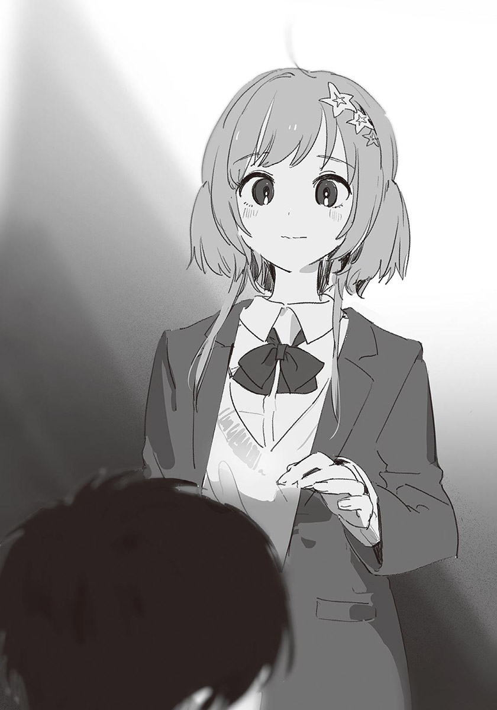我正想抬頭——一隻手放在我頭上。
突如其來的碰觸，使我吃了一驚，全身發直。
「紙木同學也不懂啊。」
星原的聲音輕撫我的鼓膜，手掌在我頭頂來回。
「我一直覺得，因為自己是笨蛋，所以不懂。可是連博學多聞的你都那麼苦惱，我不懂也是沒辦法的呢。」
「……不對。」
我維持著低頭的姿勢反駁，但我沒力氣撥開星原的手。
「妳不是笨蛋，我也不博學多聞。這不是聰明或知識多寡的問題，是更根本的……意識的問題。」
「……雖然我不懂，但如果會那麼痛苦，就不要多想了。」
「可是……」
「沒問題的。」
連雪都能融化般的溫柔聲音，使我的身體緩緩鬆懈下來。
「紙木同學，你沒問題的。」
星原重複說著，在手上稍微用力。原本糾結在一起的感情，被星原的手安靜地被撫平了。
什麼問題都沒有解決。星原只是單純想鼓勵我而已。我知道。不存在理論或具體的解決方法，只是想鼓勵我而已。
正是因為這樣吧。
純粹的溫柔流入胸口。太過舒適，使我安於那句話之中。
現在，只要這樣就好了。
星原緩緩把手收了回去。令人感到安穩的重量消失，我覺得有點寂寞，但已經不覺得痛苦了。
「紙木同學。」
星原開口說：
「謝謝你和我說這些。」
「……沒有，我才要謝謝妳。總覺得在各方面清爽多了。」
星原微笑起來，從我身邊經過，走下樓梯。
「回去吧。我得和大家道歉，把工作做完才行。我應該也有能做到的事。」
星原來到樓梯轉角處，轉過身。
「你不回去嗎？」
「啊、要。」
我連忙走下階梯。
明明是來找星原的，卻在星原面前出糗，還被她安慰。真想找個地洞鑽進去。不過，現在我覺得全身輕鬆，有種如釋重負的感覺。雖然這種解放感可能只是一時的，但心中的陰霾確實一掃而空了。
到頭來，我還是什麼都不懂。
雖然不懂，但我似乎見到自己該走的路了。
我和星原前往學生會室。
星原很緊張。儘管時間不長，但她終究放棄了執行委員會會長的工作，所以擔心會讓大家生氣或失望吧。我想說些什麼安慰她，卻想不到好的說法。想著想著，我們已經抵達學生會室了。
星原把手按在胸口，做起深呼吸。
「還好嗎？」
我問道，星原垂著眉尾，擠出笑容。
「哈哈……手在發抖。要是執行委員會會長換人了怎麼辦？」
「應該不會啦……」
從來沒聽過執行委員會會長臨時換人的事。再說，都到這種時候了，沒有學生想接這個爛攤子吧。
「不會那麼簡單就把妳換掉的。妳也只能繼續做下去了。」
「那樣也很有壓力……不過，說的也是。」
星原幫自己打氣似地將雙手舉到胸口高度，用力握拳。
「既然我說要做，就該做到最後。」
「很好，就是這份決心。」
「嗯。」
星原眼中帶著覺悟，做完最後一次深呼吸後，猛地打開學生會室的門。
「對不起！我蹺班了！」
一進入學生會室，星原就行九十度鞠躬，大聲道歉。執行委員會與學生會的人全都停下手中動作，朝她看來。突然的道歉，讓他們都傻住了。我站在星原身後，緊張地看著情況發展。
幾秒後……
「沒什麼好在意的啦。」
一名學長笑道。以此為開頭，「不用在意啦。」「沒關係啦。」其他學生也紛紛諒解了星原，各自回去忙自己的工作了。
平淡的反應，使挺起身體的星原露出微妙的表情。我能理解她的心情。之所以沒挨罵，是因為執行委員都很親切呢，或者是因為從一開始就不期待星原的緣故呢？難以分辨。我想相信是前者，可是沒有證據。
當我正在思考該說點什麼安慰星原時，一名男學生站了起來。是學生會長。他以嚴肅的表情走向星原。星原緊張到身體發直。
「一年級學生有話想轉告妳。妳想聽嗎？」
「我、我嗎？」
「嗯。對方表示『謝謝學姊把場地讓給我們』……是一年B班的學生，也是妳之所以把拱門搬到外頭的原因。」
「啊……」
星原瞪大眼睛。學生會長微笑道：
「如果妳沒移動拱門，遭殃的說不定就是他們班的展示品了。」
所以別在意——學生會長說完，回到自己位子。
星原由衷地吐了一口氣。
「……太好了。」
看到星原豁然開朗，我也放下心中的大石頭。真的太好了，星原做的事確實有意義。雖然不是最好的，但也不是沒有意義的決定。
「好了，妳也別發呆了。還有很多事沒做，快點動手吧！」
其他執行委員激勵似地吆喝，星原連忙前往自己的座位。
我也回體育館吧。得快點修復拱門才行。
✽
光是昨天就修復了很多。以這樣的速度，應該能在文化祭之前修補完畢。事情順利到出乎意料，星原也振作了，這樣一來，所有的事就全部解決了——
並沒有。
還有問題。【+】
我一面和蓮見吃著便當，一面看著星原。
今天的午休，星原還是和汐一起吃飯。與昨天不同的是，星原一直努力想炒熱氣氛，但汐只是以冷淡的態度附和。就旁觀者的角度，那情況相當尷尬。
兩人之間有明顯的鴻溝。雖然星原明顯地釋出好意，卻沒有效果。汐的心仍然緊閉。
星原的話也愈來愈少，最後沉默下來。
——過去一下好了。
我也該採取點什麼行動。放學後忙著修補拱門，有空聊天的時間只剩午休了。光是在旁邊看他們，令我難以冷靜。所以我打算幫星原一把。
「蓮見，我離開一下。」
「嗯。」
我在心裡感謝不追問原因，只嗯了一聲的蓮見。但也許只是因為他對我們的事沒興趣而已。
我拿著吃到一半的便當，朝汐的桌子走近。還沒出聲，星原和汐就發現我了。星原笑逐顏開，汐則一臉苦澀。正反兩極的反應，使我心情複雜。
「可以和你們一起吃飯嗎？」
「……可以。」
汐不情不願地答應了。
一張桌子上，放著三個人的便當盒。老實說有點擠，不過周圍沒有能併桌的桌子，也只能這樣吃了。我代替星原找話題。
「星原的便當很小呢……這樣吃得飽嗎？」
我試著製造話題，星原稍微鬆了口氣。
「吃得飽啊！你一定在想，我晚上明明吃那麼多，對吧？」
「是啊。」
「因為白天和晚上胃的community不一樣，所以中午吃這些就夠了。」
……？
「胃的community？妳肚子裡有住其他人嗎？」
「雖然我也覺得不太對，不過那個單字是什麼？能裝很多東西的。」
「呃——」
我一面思考，一面偷眼看著汐。
發現我的視線，汐露出厭煩的神色。
「……capacity。」
「就是這個。」
我回道。「不愧是小汐！」星原也立刻附和。
「對對對，是capacity。我一下子忘了。小汐便當的capacity也很小呢。」
「是嗎？」
「嗯……啊，蛋捲還在。小汐是把喜歡的東西留到最後吃派嗎？」
「我說啊。」
汐放下筷子，以困擾的表情看著我和星原。
「你們不必這麼顧慮我。」
「我才沒有。」
我反射性地否認，汐凌厲地瞇起眼睛。
「不然你為什麼過來？你平常不是都和蓮見同學吃飯嗎？」
「那是……因為……」
汐一副「真是無法溝通」似地嘆了口氣，看向星原。
「妳呢？為什麼今天一直找我說話？」
「我、我本來就是這樣啊。」
「才不是。妳昨天幾乎沒有說話，今天這樣太不自然了。」
汐有些火大地說。
後悔湧上胸口。搞錯靠近的方式了，我不該過來的——不對，現在後悔還太早了。不能一直小心翼翼，否則不會有任何進展。要誠懇地把話說開才行。
「不自然的是你吧。」
我說完，有種吃蛤蜊時咬到沙子般的不愉快感。我說不定說錯話了。
「什麼意思？」
汐的聲音中帶著不耐煩。我在口中殘留著不愉快感的情況下回答：
「在家庭餐廳時，你的態度太奇怪了。本來聊得那麼開心，卻突然變得那麼冷淡……如果那不叫不自然，該叫什麼？」
我心想，不該這麼說的。明明可以說得更委婉，卻只能用這種直接的方式說話。我對自己感到煩躁。
「那又怎樣？我只是說出真心話而已。」
「騙人。以前的你才不會那樣說話。」
汐的臉色變了。
「什麼叫以前的我？」
我有如被利刃指著，說不出話。
「在你的想法中，我是什麼樣的人？溫和穩重，絕對不會抱怨的理性人士？就算你想把那種形象加在我身上，我也只會覺得困擾而已。」
「我、我不是想說那個……」
「夠了。」
汐開始收拾吃到一半的便當。星原張口想說什麼，可是沒有出聲。得做點什麼才行。儘管我腦子裡這麼想，但身體無法行動。
汐拿著收拾好的便當，起身面對教室的門。猶豫了一下後，以留戀的眼神看了我們一眼。
「……對不起。我要去餐廳。讓我一個人靜一靜。」
他說完，離開教室。
星原微微起身，但終究沒有站起，無力地垂頭坐下。
我暗自抱頭。徹底失敗了。沒有顧慮汐的心情，憑著情緒說話，最後落得這種下場。我應該深思熟慮過再開口的。
無法否認我把形象加在汐身上。到頭來，我只是害怕汐脫離了我的理想而已。之所以拿「以前的汐」做比較，是覺得這樣舉例，可以更快讓汐理解我的意思。可是這個方法不對。這樣一來，我和西園根本沒兩樣。
星原嘆氣。
「……果然，什麼都不說比較好呢。」
我無法回答。
總算見到自己該走的路，路上卻充滿濃霧，使自己又回到原點。到底該怎麼做才對——
「唔哇！怎麼死氣沉沉的，誰家死人了？」
一道輕薄的聲音，打破了我們的沉默。
我朝說話的人看去，是世良。他是什麼時候進來我們班的？只見他臉上掛著得意的笑容，在汐空著的椅子坐下。星原露出明顯的嫌惡之色，但世良毫不在意。
「我剛才在走廊看到汐。你們吵架了？」
「沒有吵架。只是……相處方式有點出入。」
「哦——」
世良興致缺缺地回著，伸手撈走我便當裡的蛋捲。
「啊！你！」
「哦，你家的蛋捲加的是高湯嗎？真不錯。我也比較喜歡高湯哦。」
他吃得津津有味。可惡，我本來要留到最後吃的……
吞下蛋捲後，世良舔著手指，哼笑。
「也是啦。你們沒辦法成為汐的心靈支柱。」
彷彿看透我們似的發言。
血液一下子衝上腦門。我湧起反駁的衝動。但我還沒說話，星原已經開口了：
「為何那麼說？」
「哎呀，別生氣嘛。我不是在輕蔑你們哦。可是啊，就算你們能和他共生，也沒辦法共情。因為你們都太幸運了。」
「什麼意思？」
這次換我發問了。我並沒有生氣，只想快點知道原因。
「嗯～」世良賣關子似地清了清喉嚨。
「你是男生嘛。」
「是啊。」
「喜歡的是女生對吧？」
「……那又怎樣？」
「就是這個啊。你很幸運。」
「啥？聽不懂你在說啥。這不是很普通——」
說出口的瞬間，我有種踩到某種很柔軟的東西般的討厭感覺。
「普通呢。」
世良窺探我的臉，露出獵物落入陷阱般，愉悅又邪惡的曉容。
「也就是說，汐不普通呢。所以我覺得，你和汐之間有某種不相通的感覺哦。」
「那只是口誤。我又沒有惡意……」
「正因為是無意中說出來的話，才是真心話……這是我以前在綜藝節目上看到什麼專家說的。」
世良將上半身向後仰，搖晃著椅子。星原略帶不安地看著我。
「還有啊。」
世良繼續說著：
「這不是好或壞的問題。你認為的普通，不是汐的普通。只是這樣而已。因為從一開始，看待事物的方式就不一樣，所以難以互相理解。所以我才說你們沒辦法成為汐的心靈支柱。對汐來說，最好的情況是早點離開這鄉下地方，去其他土地找同類。北極熊該住在北極，駱駝該住在沙漠。我說的事，有什麼錯嗎？」
世良說的每句話，都像針一樣刺在我的胸口。完全找不到反駁的話。總覺得世良的話語帶有某種真理。
可是，我還是沒辦法說「沒錯」。假如承認世良是對的，就等於我無法成為汐的力量了。
「……那你呢？」
「嗯？」
「你覺得自己能成為汐的心靈支柱嗎？」
「唔～可以吧？至少比你理解汐。我有這個信心。再說……」
喀嗒，世良把椅子坐正。
「我不會說別人噁心。」
他起身。
「謝謝你的蛋捲。」
世良愉快地哼著曲子，離開教室。他退場得相當乾脆，說不定是去找汐了，可是我沒有力氣追上去。
像鏡子一樣的傢伙。和世良說話時，都會發現自己身上討厭的部分。就連針對世良的厭惡，也會反饋到自己身上。
「……普通，是不好的話嗎？」
星原以真心不懂的困擾表情發問。
現在的我，沒有答案。
✽
在那之後，我幾乎沒有和汐說過話。
頂多只有在排戲時，朗讀臺詞時說話而已。只有事務性的交流，沒有對話。而且一到午餐時間，汐就會一個人去餐廳吃飯，和星原說話的機會也變少了。
這樣下去並不是好事——這只是我的主觀想法。對汐來說，也許覺得很清爽吧。這是汐希望的狀況。我和星原的擔心，一定不是他想要的。
……可是。
我覺得最近看不到汐的笑容了。說不定只是因為見面的機會變少，所以這麼覺得。可是，假如我的直覺是對的……我會想改變現狀。
我想走在汐的身邊。
但隨意靠近的話，只會互相傷害。
刺蝟困境。我印象曾在哪本書裡看過這個說法。書名，還有解決方法，應該說有沒有解決方法，我全都忘了。
把房間裡的書一本一本拿出來翻的話，應該會找到。我抱著這個想法，一有空就開始看書。
回過神時，明天就是文化祭了。
✽
我比平常提早一個小時出們。
外頭是乾淨的早晨空氣。我騎著腳踏車，從帶著狗散步的老太太、前往社團晨練的國中生旁經過。
我騎在田間小路上，陽光鑽入眼裡。柔和的秋意拂在臉上。
抵達椿岡高中後，我在校門前停車。完成的拱門矗立在校門口，是昨天執行委員們組合起來的。像這樣實際裝飾在校門口，看起來就很氣派，令人很有成就感。
我牽著車，用走的穿過拱門，踏入校園內。
空蕩蕩的停車場上，已經有星原的腳踏車了。還以為我會是第一個到校的，沒想到星原已經來了。不愧是執行委員會會長。
我停好腳踏車，走進校舍。走廊與各教室的外牆都變成文化祭的形狀了。牆上掛滿了引人注目的看板，到處都有氣球或彩帶作為裝飾。可以簡單想像幾個小時後的熱鬧場面。
我來到學生會室前，打開門。
「咦，你來得好早啊。」
站在鐵櫃前的星原朝我看來。她似乎正在整理文件。
「因為覺得靜不下來。」
「啊！我也是！從昨晚起就興奮到睡不著，一直重看執行委員會會長的致詞呢。」
「啊——怕會忘詞？」
「可以看稿子，所以不怕忘詞啦。」
「咦？那為什麼要重看？」
雖然覺得很沒禮貌，不過我還是稍微笑了出來。我拉過旁邊的椅子坐下，星原也停下整理的工作，坐在附近的椅子上。
「唔，怎麼說呢，因為希望有真實感吧。我可是執行委員會會長哦，這樣。」
「哦……原來如此。」
好像有點懂那種心情。
「當然我有練習過，以免致詞時說到卡住。這段時間我給大家帶來很多麻煩，至少在最後要好好表現，做個漂亮的收尾。」
「我會認真聽的。期待執行委員會會長的致詞哦。」
「不用不用。沒什麼好期待的啦。」
星原難為情地笑著。
如果是一個月前，光是和星原獨處，我就會心臟狂眺。不過最近已經冷靜到像是喝熱茶般的感覺了。我現在還是喜歡星原，而且比以前更喜歡。但是「喜歡」的種類有點改變。
我突然想到。
自己想和星原怎麼樣呢？想和她交往嗎？如果說沒那種念頭，就是在說謊了。那麼，假如我和星原交往的話……
汐，會怎麼想呢？
「我也是哦。」
星原的話，把我拉回現實。
「我一定會去看羅密歐與茱麗葉的。」
「……嗯。」
「很期待你們的演出哦。」
星原燦爛地笑著。我用力點頭，作為回應。
文化祭的開幕式結束後，我和營運組的人在校門口擔任接待，與老師及其他執行委員招呼來賓，請他們把名字簽在名簿上。
今天是星期六，有不少校友與學生家長、其他學校的學生來參觀。九點之後，我們忙到暈頭轉向。
「紙木，可以換班了。」
過了十一點，來客變少後，一名營運組的人對我說道。
好。我回完起身，離開帳篷。
目前沒有其他執行委員會的工作。羅密歐與茱麗葉的公演是下午兩點，到表演前的這段時間，我可以自由活動。演完戲後，我又得回校門口擔任接待。假如想參觀各班的展示或攤位，只能趁著這三個小時逛了。
但我沒有急著逛完的想法。
應該說，我希望時間快點過去。因為沒有特別想看的展示，也沒有可以一起逛攤位的朋友。所以我打算去總部幫忙，打發這段時間。假如大家有空時，請來總部幫忙——學生會與執行委員會的人都收到這樣的通知。這是為了避免總部只剩一個人的情況。
我在鞋櫃區換上室內鞋，走向學生會室。
錯身而過的學生們，看起來都很樂在文化祭之中。由於有以鬼屋與咖啡廳為主題的班級，不少學生以扮裝後的模樣在走廊走動。也有只在今天染髮的學生。雖然違反校規，但畢竟是一年一次的活動，老師大多睜一隻眼，閉一隻眼。是說，也有像西園那樣一年三百六十五天都違反校規的傢伙在……
——對了，汐呢？
我突然在意起來。
我和星原都是執行委員，所以沒和他約好逛攤。所以現在的汐，不是和其他人在一起，就是一個人。
假如，是後者的話呢？
雖然應該是不必要的擔心，但我還是很不安。
我從學生會室前經過，在走廊上四處尋找汐的身影。腦中浮現他孤伶伶坐在無人場所的模樣，心中愈來愈不安了。
來到校舍二樓時，操場傳來節奏感強烈的重低音音樂。
我從走廊窗戶向下看，在戶外舞臺見到熱舞社的學生上臺。穿著寬鬆T恤的男女們，開始隨著節奏擺動身體。
我看向觀眾席，汐說不定在那裡。那新雪般的銀髮，就算在二樓，也可以認出來才對。
「啊，紙木。」
就在我眺望觀眾席時，有人叫我的名字。我回頭，見到真島和椎名。與兩手空空的椎名不同，真島兩手分別拿著吉拿棒與餅乾，看來她也充分地享受著文化祭。
「難道你一個人？」
真島發問，「嗯。」我有點難為情地點頭。
「哦——是這樣啊。好可憐，要不要吃吉拿？」
她說著，把咬過的吉拿棒遞了過來。
「咦！不、不用了。」
「哈哈，緊張了緊張了。紙木果然很容易玩弄呢。」
「妳這樣太沒禮貌了。」
椎名責備道。我心想「就是說啊」。
「不然給妳吃。」
真島說著，把吉拿棒塞進椎名嘴裡。唔。椎名呻吟了一聲。但是又不能把吉拿吐出來，只好以無奈的表情咬下。
感情真好啊……真羨慕。
「對了，妳們有看到汐嗎？」
「汐？他和ROKI在一起哦，還有七森同學。」
ROKI指的是轟。是把轟的發音「todoroki」取後兩個音節而來的簡稱。和北歐神話的洛基沒有任何關係。
「原來。他有和其他人在一起呢……」
汐和她們是因為演戲的關係而變熟的吧。對了，轟在排戲時，常和汐聊天呢。
「你接下來要幹嘛？要和他們一起逛嗎？」
「不，我要去總部幫忙了。」
「這樣啊……啊！糟了！猜謎大賽已經開始了！快走吧小椎！」
「等一……等一下！」
真島說完，快步離開。椎名遮著口中還有食物的嘴巴，追了上去。
她們真的很要好呢。聽說兩人是童年玩伴？雖然個性相反，但很合得來，真是不可思議。不，說不定和磁鐵一樣，正是因為個性相反，才能互相吸引。我湧起羨慕之情。
不論如何，我是白擔心了。既然汐不是一個人，我就沒必要再找他了。這樣一來，我就能毫無牽掛地去總部幫忙了。
——應該是這樣的。
但為什麼呢？我有一種冷風吹過心底的感覺。汐不是一個人，我明明該高興才對。這種感情，究竟是什麼？
「！」
走廊的另一頭出現熟悉的身影。即使遠看也極為顯眼的銀色頭髮絕對是汐。就如真島說的，他正與轟以及七森同學在一起。三個人沒有發現我，朝這邊走來。
我連忙躲在走廊旁的角落。
……等一下，我為什麼要躲？
身體反射性地動了。原因不明。但我以前有過類似的經驗。私下出門時在路上發現班上同學，特地躲起來，不想和他們碰面。我現在的心情與那時相同。但現在是在學校裡，而且直到剛才為止，我都在找汐，為什麼現在要躲他呢？就連我也覺得自己的反應很奇怪。
既不能走到汐面前，也不能離開，我只能縮在角落，看著汐的行動。
三人正愉快地談天說笑。雖然聽不見內容，不過看起來相處融洽。汐先是對七森同學說了什麼，接著因轟的話而噗哧笑了起來。
——什麼嘛，明明可以普通地歡笑嘛。
就在這時，冷風再次吹過胸口。
像是寂寞，又像是空虛，是種很奇妙的感情。我在吃轟和七森同學的醋嗎？羨慕在不知不覺中和汐變要好的她們嗎？不，不對，我對那兩人沒有任何感覺。這種感情，應該更接近掃興。那麼……
「啊！」
聲音從口中落下。
我明白冷風的真正名字了。
這是「失望」。
我一面擔心汐落單，同時也期待汐真的落單。
對落單的汐伸手，得到「果然不能沒有你」的感謝，這正是我希望的情境。簡單地說，我想施恩於他。如果我成為汐的恩人，我們的關係就會比現在更穩固——整理出頭緒後，我不禁反胃。
多麼醜惡啊。為了滿足自己扭曲的保護欲與占有欲，我無意識地希望汐過得不幸。就算汐真的落單，我與他也不會成為對等的關係。因為我真正的心願是，在汐處於弱勢時，趁虛而入地支配他。
自己居然有這麼可怕的想法，我戰慄不已，全身發毛，覺得很噁心。到頭來，我根本不在乎汐的心情，只希望自己得到承認……也難怪汐會想離開我身邊。
難道——
我一直都是這樣？
到目前為止，我所付出的關心和善意，都不是給汐，而是給我自己的？我之所以想陪著汐，不是因為童年玩伴之類的空幻理由，只是想確認自己的優勢而已？
不對。
一定不對。
「咦？紙木？」
有人叫著我的名字。
回過神時，汐他們已經來到我面前了。出聲叫我的轟訝異地問：
「你在摸魚嗎？執行委員要認真做事啦～」
她開著玩笑，旁邊的七森同學輕笑起來。
「不，我沒有——」
我正想否認，卻和略帶尷尬的汐對上目光。強烈的羞愧感與罪惡感於瞬間湧上，使我無法保持平靜。
「我、我才沒有摸魚。」
我扔下這句話便離開了。
身後傳來冷淡的視線。她們應該覺得我態度很差吧。可是，我沒辦法繼續待在汐面前。只有汐，我不希望他發現我心中的醜陋感情。
頭好痛。自己的善性似乎從根本之處被撼動了。巨大聲音在頭蓋骨內側迴蕩不已。
我到底是怎麼回事？
「紙木同學，你很緊張嗎？」
我坐在椅子上回頭，星原不安地站在一旁，手上拿著幾分鐘前我整理的問卷。
從汐面前逃開後，我來到學生會室。對忙著對應尋找失物或投訴的星原說我要幫忙，接下雜務類的工作。目前學生會室中只有我和星原而已。可是因為經常有人出入，所以沒有兩人獨處的感覺。
「緊、緊張？為什麼？」
我回問，星原端詳著我的臉。
「因為你的表情很嚴肅。所以我在想，是不是等一下就要演戲了，你覺得緊張。」
「哦……沒有。不是因為那樣。」
我心裡雖然也有上場表演前的緊張，但我現在煩惱的不是那個。
「那就好……其實是因為這個。」
星原難以啟齒地開口：
「你好像算錯了。」
「咦？真的嗎？」
星原點點頭，把一疊問卷交給我。
這些問卷是今天發的，對象是學生與來賓，調查的是參加者對各班展示的評價。由於閉幕式時會頒獎給得分最高的班級，所以有不少班級把得獎視為目標，計算分數的責任可謂重大。
「對、對不起。我馬上重算。」
「對不起，可是照規定，要算到票數一致為止。」
「真的很對不起……」
我連連道歉，重新開始計算票數。幸好有雙重確認的體制。假如公布結果後才發現計算錯誤，那就慘了。
「真稀奇。」
星原柔和地笑了。
「感覺不管什麼工作，你都能平淡地完成。雖然這麼說有點那個，但是能幹的人出錯，反而會覺得有點安心呢。」
所以不必太在意——她的言外之意就是這樣。
我心想，她真是溫柔。但星原的話空虛地從心的表面滑落。
「……才沒有呢。」
我自嘲地笑了。
「我只是一直閃避麻煩的差事而已。而且做事還很不得要領，經常出錯，只是妳不知道而已。如果我這種人叫能幹，其他執行委員都是稱為精英了吧。」
星原眨著眼睛。
「紙、紙木同學？你怎麼了？」
她擔心地發問。糟糕，我自貶過頭了。
「對不起。把剛才的話忘了吧。」
我到底在幹嘛？自我貶低，只會讓星原感到困擾。
果不其然，星原擔心地把臉湊近。
「你果然覺得緊張嗎？這種時候，慢慢做個深呼吸比較好哦。氧氣很重要。」
聽到氧氣，我覺得有點可笑。但畢竟是特地給的建議，所以我還是做了個深呼吸。雖然感覺起來沒什麼效果，不過心情上輕鬆多了。
「怎麼樣？」
「嗯，我覺得好多了。」
太好了。星原笑了起來。比起深呼吸，星原的笑容更能讓我打起精神。
不能一直暮氣沉沉。幾個小時後就要上臺演出了，得快點恢復成平常的狀態才行，不然連演戲都會出問題的。
我驅除雜念，看向第一張問卷。
「對了，你有碰到小汐嗎？」
汐，苦澀的感情因這名字再次湧上。總算平靜的心，再次泛起波瀾。
不能讓星原操更多心了。我努力保持冷靜地回答：
「有哦。他和轟還有七森同學在一起。」
「好像是呢。不知道她們平常都聊些什麼。」
咦？我忍不住發問。
「妳知道嗎？」
「知道什麼？」
「就是汐和轟還有七森同學在一起的事。」
我下意識地加強語氣，星原困惑地點頭。
「是啊。小汐有說，文化祭時要和她們一起逛……」
——汐事先告訴了星原嗎？
只告訴星原卻不告訴我的打擊，以及自己居然器量狹小到被這點小事打擊的事實，使我覺得很悲慘。汐想和誰在一起，是他的自由，他沒有義務告訴我，他要和誰一起逛文化祭。再加上我有執行委員會的工作，就算汐找我逛文化祭，我也沒多少時間能和他一起逛。這樣一想，就會覺得受到打擊本身很沒有道理。
而且說起來，假如會因為這種程度的事受到打擊，我就該事先主動詢問汐才對。「文化祭時你會和誰一起逛？」只要問這樣一句，現在就不會這麼鬱悶了。對這種事煩惱的自己，真是有夠蠢的。
「紙木同學？」
但是，只告訴星原，不告訴我的事實，還是讓我很心痛。說不定，汐已經不想再和我扯上關係了——不對，這結論下得太快。只不過是沒告訴我要和誰逛文化祭而已，居然就被害妄想成這樣，未免自我意識過剩了。可是……汐有時會說出一些看透我內心似的犀利話語，說不定他早就發現我心中的醜陋感情了。再加上之前午休時的事，也許他已經對我徹底死心了吧……如果真是那樣，汐果然——
「紙木同學！」
「咦？啊。」
我回神。星原擔心地端詳我。
「你到底怎麼了？還好嗎？」
「對……對不起。我有點心不在焉。」
「是不是身體不舒服？不必勉強自己幫我的忙，去保健室休息一下……」
「不，我真的沒事。」
「可是……」
就在這時，學生會室的門被打開，一名男學生走了進來。
「我撿到鑰匙，失物是拿來這邊對吧？」
星原的視線在我與那學生之間游移。猶豫了幾秒後，她看了我一眼，朝男學生走去。
「是啊。請在這文件上——」
我將目光從為男學生做說明的星原背影移開，按著眼頭。我雖然對星原說我沒事，但腦中其實亂成一團。自己什麼時候變成這麼多疑了？從一開始就是嗎？不知道。但我能肯定地說，最近這幾個月，我煩惱的事，幾乎全與汐有關。
儘管如此煩惱，仍然一直傷害著汐。
也許我不該再與汐扯上關係了。
下午一點五十七分。
體育館的活動，比預定延遲十分鐘進行。
館內的喧囂連後臺都聽得見。觀眾席已經半滿了。
二年A班的學生在緊張的氣氛中進行準備，換好衣服的演員聚集在後臺，我也在其中。羅密歐的服裝有點緊，再加上緊張，使我覺得難以呼吸。
「前一班的樂器收完。就換你們布置了，還有五分鐘！」
執行委員在後臺對我們宣布，緊張感一下子升高了。
我擦了擦手汗，低頭看著劇本。身為主角，羅密歐的臺詞特別多，我想趁著還有一點時間，把臺詞看得更熟一點。
但是我做不到。
精神無法集中。腦中吹著強烈的沙塵暴。把原本記牢的臺詞全吹散了。從中午起，我一直是這樣，在學生會室幫忙時，也一直出錯，給星原添麻煩。什麼都做不好。
「咲馬。」
我肩膀一震。
打扮成茱麗葉的汐，擔心地看著我。
「你臉色很糟……還好嗎？」
「啊、嗯，我沒事。」
無法直視汐的臉。我朝斜下方低頭。
「如果想上廁所，就趁現在快去。稍微慢幾分鐘，應該沒問題的。」
「嗯。」
「……怎麼了？」
汐以認真的語氣詢問。
應該是我自我厭惡與擔憂的感情表露在臉上了吧。明明汐比我有更多需要緊張的因素，卻還讓他關心我，真是對不起他。
「我沒事啦。」
「難道你還在在意之前的事嗎？」
之前的事——是指午休時惹汐生氣的那件事吧。雖然也有那個原因，但我最焦慮的是名為紙木咲馬的人類根幹部分。可是這件事，不能對汐說。
「不是。和你沒關係。」
錚！彷彿可以聽到這聲音似的，汐用力皺眉。
「喔，是嗎？那就算了。」
汐別過頭，回到原本的場所。
態度太冷淡了。對不起。我在心中道歉。可是我現在沒有多餘的力氣顧慮周圍的情況。說真的，我連扮演羅密歐的餘裕都沒有。
儘管如此，正式上場的時刻愈來愈近。
「馬上就要開始了哦！大家要集中注意力哦！」
轟大聲勉勵。
馬上就要開演了。擔任旁白的同學坐在麥克風前，打開劇本。
不論我的狀況有多糟，還是必須扮演羅密歐。雖然文化祭每年都有，可是由二年A班表演的羅密歐與茱麗葉，是唯一的一次。
到今天為止，我做了不知多少次的練習。就算稍微忘詞，應該也能靠著臨場反應帶過。
我做了個深呼吸，走到舞臺邊緣。
會場內吵吵鬧鬧的，有說話聲、咳嗽聲，以及挪動椅子的聲音。雖然分開聽的話，聲音都不大，但集合在一起，就成為巨大的噪音，響遍整座體育館。
『接下來是由二年A班帶來的話劇表演——羅密歐與茱麗葉。』
擔任司儀的學生會學生說完，燈光轉暗，觀眾也安靜下來。
布幕升起。
『故事發生在花都維洛納，長年不合的蒙特鳩家族與凱普雷特家族，每天都會在城裡發生爭端。某天，蒙特鳩家的羅密歐，偷偷潛入凱普雷特家舉辦的舞會——』
我和汐分別從左右側走進舞臺。燈光照在我們身上，上百道的視線集中在我們身上。
剎那間，我無法呼吸。
那些視線似乎有了實體，撞擊在我身上。每個人都注意著我們的一舉一動，期待看到精彩有趣的演出。發現這個事實，使我心跳加快，滿頭大汗，忘了說第一句臺詞的時機。
「真的是槻木耶。」
觀眾席的私語，傳入我耳中。
「真的穿成茱麗葉的樣子。」「那是槻木學長？」「聽說可以拍照？」「那真的是男的？」
雖然不想聽，可是我的耳朵卻自動接收了與汐有關的評論。
——不想聽？
不想聽到這些話的是汐吧。汐當初之所以不想演茱麗葉，就是擔心觀眾的反應，怕被當成笑話看。汐是那麼說的。雖然觀眾對汐的感想中，沒有明顯的嘲笑或侮蔑，可是在這個場子裡，最難受的仍然是汐，不是我。
擠滿了人、比教室寬敞太多的空間。暴晒於好奇的目光下的汐——完美地成為了茱麗葉。
只見他將雙手放在腰後，無趣地看著腳尖。是對舞會感到索然無趣的茱麗葉。
見到那模樣，我心中出現兩種感情。
一種是對汐的佩服之情。不在乎上百雙眼睛的注視，從容地進行表演。我很感動，也久違地再次認清汐的完美無缺。
所以，我也產生另一種感情——強烈的壓力。
茱麗葉愈有魅力，羅密歐也愈需要相襯的演技。畢竟這齣戲的標題是〈羅密歐與茱麗葉〉，兩人一定會被拿來做比較。
原本腦子就亂成一團，再加上登臺的壓力，使我差點僵在原地。
儘管如此，我還是努力以口水潤溼乾燥的口腔，擠出聲音。
「多麼美麗的小姐。見到她，我才知道自己從來沒有戀愛過。」
我一面讚美茱麗葉的美貌，朝汐走近，單膝跪下。
「可以與妳共嗚——」
——卡住了。
我有如被冷水淋頭。第一句臺詞就出錯，觀眾們發出的笑聲，使我臉頰火燙。
「——與妳共舞一曲嗎？」
我連忙重說一次。我太緊張了，說話速度變得非常快。
「你的名字是？」
「我只是個過路者，名字微不足道。」
「那麼，過路者，我很樂意與你共舞。」
雖然沒有忘詞，但是與汐相比，我的演技實在拙劣。 我起身彎腰，左手放在胸前，右手朝汐伸出。汐握住我的手，與我共舞起來。不是正式的社交舞，只是以類似的感覺繞舞臺一圈而已。
雖然這是開場第一幕，不過是羅密歐與茱麗葉身體距離最近的場面。我與汐在近到能聽到呼吸聲的情況下，跳著形式上的社交舞。
儘管是這種場面，我還是不看汐的眼睛。害怕自己的醜陋被看穿，以及汐完美到眩目的茱麗葉，使我不自覺地看著下方。
「果然發生了什麼事，對吧？」
汐以只有我聽得到的音量發問。
在這個時候問嗎？我驚訝又惶恐地提高視線，只見汐眼中亮著強烈的怒意。那模樣使我畏縮。
「沒、沒有……」
「那就認真演戲。」
「我知道。我知道。可是……」
「可是？」
「可是……那個……」
「說清楚。」
「我……」
就在這時，我不小心踩到汐的腳。「啊！」汐小聲地叫了一聲。
「啊，對、對不起。」
「沒關係。繼續說吧。」
「……還是算了。」
「為什麼？」
「就算說了，也不能怎麼樣……再說，舞要跳完了。」
我們剛好繞完舞臺一圈，『良辰總苦短，共處難相忘，無情的命運扯裂了兩人』令人感到尷尬的旁白響起。
汐不情不願地閉嘴，我與他分別從舞臺的左右兩側退場。
「呼……」
逃離觀眾的視線，我吁了一口氣。
離開演還不到三分鐘，我就覺得累了。我努力不讓自己一屁股坐在地上，靠著牆休息。接下來是陽臺的場面，有整齣戲裡最長的對話。我有辦法不出任何差錯地演完嗎？而且才剛和汐變得那麼難堪。
「吶，紙木。」
在舞臺旁待機的轟過來找我說話。
她以訝異的表情打量著我。
「你怎麼演得這麼生硬……身體不舒服嗎？」
和星原說一樣的話。汐也擔心我的臉色不好。看樣子，我的樣子似乎比自己以為的更糟，真想照照鏡子。
「……對不起。但我不是身體不舒服。我沒事啦。」
我挺身離開牆壁，以表現自己沒事。但轟的表情仍然很擔憂。
「沒事的話就好……不過只要照著練習時演，應該就沒問題了。再說，真的不行時也有人可以代打。」
「代打？」
「就是我。」
轟一臉認真地說著。「不不不。」我忍不住搖頭。
「妳沒辦法演羅密歐吧。」
「我記得所有臺詞，換上戲服的話應該行啦。」
「……羅密歐突然變成女的，太不自然了。」
「那種小問題不用在意……好像還是得在意呢。」
轟苦笑著把瀏海勾到耳後。
「是啊。我沒辦法演羅密歐。應該說找人代打本身是不可能的。只有你能演羅密歐。」
「……」
「所以我也只能說加油了。要讓表演成功哦。」
「……嗯。」
好。轟點了點頭，看向我身後的舞臺。
「糟糕，下一幕要開始了。加油吧。」
轟離開了。也許是去找汐或負責照明的人吧。
沒時間休息了。就如轟說的，只有我能演羅密歐。再說我也希望表演能成功。就算是為了一起排戲的汐與其他演員，我也該繃緊精神。
『——被窗口流洩出來的燈光吸引，羅密歐潛入凱普雷特家的庭院。』
旁白結束。
我握緊被汗濡溼的拳頭，再次登上舞臺。
汐正站在布置成陽臺的通道上，以祈禱的眼神看著半空中。燈光打在他身上，美到有種莊嚴的感覺。會場內，已經聽不到對汐的茱麗葉有意見的聲音了。
「啊，站在那裡的就是茱麗葉。怎麼辦？我要向她說話嗎？」
我背出臺詞。
汐低頭看著我。
由於通道離舞臺地面有一段距離，所以我不怕與汐目光相對，能順利地說出臺詞，沒有說錯或忘詞的情形。
「要是被發現，你一定會被殺死的。」
「放心吧，茱麗葉。夜晚的帷幕會保護我。」
總算恢復成平常的狀態了。這樣一來，應該能彌補開場時出的糗吧。雖然還是有點生硬，不過就文化祭的話劇來說，算是及格了。
陽臺的場面結束，接下來是羅密歐與茱麗葉私定終身的結婚場面。飾演神父的椎名為羅密歐與茱麗葉主持婚禮，我說出結婚誓詞。
「無論發生多麼悲傷的事，都比不上與妳結婚的喜悅。」
——還不壞。
在那之後，羅密歐在決鬥中殺死仇敵提伯爾特，被逐出維洛納，不得不與茱麗葉分離。命運為何如此捉弄人呢？我仰天長嘆。
——感覺很好。
總算到了最後的一幕。
羅密歐找到了詐死的茱麗葉，哀嘆茱麗葉的死，詛咒起命運，以手邊的毒藥自盡。這是羅密歐最後一場高潮戲。演完這一幕，故事就等於結束了。
舞臺中央有個臺座，是將課桌拼在一起，蓋上布塊而成的簡單舞臺道具。汐正躺在上面。
「啊！老天爺啊！」
我裝出大受打擊的表情，朝汐走近。不想承認茱麗葉已死，可是又想確認真相。我一面表現著內心的糾結，一步一步地前進，在心中品嘗這個瞬間。
總算，要解脫了。
從開場算起，頂多二十分鐘左右的時間。可是對我來說，這二十分鐘卻如此漫長。是對抗壓力，嚴重耗損精神的二十分鐘。等到演完後，去吃點甜食吧，我記得有賣冰淇淋的店……不行，這樣太鬆懈了，之後還有臺詞呢。
我在汐躺著的臺座前停步。
接下來，我要對觀眾訴說茱麗葉的死，為羅密歐帶來多沉痛的悲傷與憤怒。
「……」
要訴說了。
汗水從太陽穴滴下。
我忘詞了。
腦中一片空白。有種被拋到宇宙中似的無力感。嘴巴說不出話，膝蓋不住發抖，時間在沉默中流逝。
躺在臺子上的汐微微睜開眼睛，以灰色的眸子不安地看著我。但我腦中只充滿了「糟了。不妙。該怎麼辦？」這幾句話而已。焦慮侵襲我的思考，身體開始發熱。
觀眾席開始出現私語聲。怎麼了？還聽到了取笑的聲音。
站在舞臺邊緣的轟映入眼角餘光中。她正比手劃腳地對我打暗號。可是我完全無法理解她的意思。思考迴路完全被遮斷了。
糟了。糟了糟了糟了糟了。
得快點說話。不然這齣戲會失敗的。
忽地，因手汗而濡溼的指尖，滑過某種平滑的表面。
我想起握在右手的東西。是裝了毒藥的玻璃瓶。
——啊，對了。
不必說臺詞也沒關係，只要喝下這毒藥，直接退場就好。雖然就演戲來說很不自然，可是也能解釋成羅密歐因茱麗葉的死，大受動搖。
這樣就可以了。我的羅密歐就此結束。
我把小瓶子拿到嘴邊。
「慢著。」
我停下動作。
茱麗葉從臺子上坐起。
「別什麼都沒說就尋死。」
觀眾席的私語聲變得更大了。驚訝或困惑的聲音此起彼落，我也陷入混亂。這裡是羅密歐誤以為茱麗葉真的死了，服毒殉情的場面。可是茱麗葉卻自己活回來了，而且還阻止羅密歐自殺。這樣一來，就無法按照原本的劇情收尾了。
為什麼，在這個時候活回來？這樣的話……
不對，是我的錯。
因為我忘詞，汐才會幫忙掩飾。
胸口似乎快被罪惡感壓潰。我毀了羅密歐與茱麗葉這齣戲。
「羅密歐，你沒必要尋死。」
汐輕巧地從臺座下來，站在我正前方。
「我們一起逃到遠方吧。等天氣寒冷時，再回到維洛納——來吧。」
汐以充滿慈愛的語氣說著，對我伸出手。
要握住那隻手嗎？我猶豫起來。
我有資格握住汐的手嗎？將利己的感情偽裝成溫柔，強加在汐的身上。雖然我自己沒發現，但我應該傷害汐不知多少次了。
可是，現在如果不握住這隻手，應該會為大家帶來更多麻煩吧。不能讓汐的苦心白費。
我握住汐的手。汐用力反握我那因手汗而濡溼的手。
我被汐拉著，從舞臺邊緣退場。
『——如此這般，羅密歐與茱麗葉逃離了殘酷的命運，從此過著幸福快樂的日子。』
轟替換掉原本的旁白說道。
布幕降下，幾秒後，場內響起零零落落的掌聲。
✽
「你這個笨蛋————！！」
轟在後臺對我大吼。
「為什麼最後那裡不說話～？好不容易在途中變回還可以看的演技……實在是嚇死我了！」
「對不起……」
我低姿態地道歉。也只能道歉了。我心中充滿歉意。正因為轟為這齣戲付出的心血比誰都多，所以她的責罵更為沉重。
笨蛋，混蛋。轟罵了一陣子後，喘了一口氣。
「……不過你也很努力了。辛苦啦。以後再加油吧！」
轟嘻嘻一笑，朝其他演員走去，「辛苦了——」她與眾人一一擊掌後，和周圍的人聊著天，離開後臺。
「你還真膽小耶。」
背後有人說話。
我回頭，真島還是老樣子，與椎名在一起。只見她臉上露出傻眼的表情。
「反駁亞里沙時的膽量到哪裡去了？」
「……有很多原因啦。」
「很多原因嗎？不過在旁邊看是很好玩啦。」
「我覺得……」
椎名以微妙的表情朝我走近一步。
「滿好的。雖然有點在意為什麼會變成那樣……不過最後的場面，我還滿喜歡的。」
她的眼神很認真，不像客套話。我有點難為情。
「謝、謝謝……雖然不知道我有沒有資格說謝謝就是了。」
就是啊——真島吐槽。
「那我們先走了。」
真島和椎名朝出口離開了。
後臺的人愈來愈少。在下一場表演開始前有中場休息，所以在後臺的執行委員也進入了休息模式。
「咲馬。」
還在後臺的人中，會這樣叫我的人，只有一個。
我不敢回頭，但是又不能無視對方。
我吸了一口氣，轉過身。
「……辛苦你了，汐。」
「剛才實在看不下去。」
汐有些激動地說：
「在重頭戲時出那種大醜，你也想想正在裝死的我的心情吧。實在是丟臉死了。」
雖然他說得很毒辣，但是表情很沉痛。所以我沒有生氣或受傷，只有滿心的歉意。
「……對不起。」
「為什麼失常成那樣？」
沉痛轉變成憤怒，汐生氣地逼問。
「呃……」
我說不出話。不知道該不該說出真正的原因。
「難道和我有關？」
不是。我正想否認，又把話收了回去。就算隱瞞，也只會讓汐更懷疑我而已。再說，剛演完戲的我已經累了，不想考慮太多，想早點得到解脫，所以我把淤積在心裡的話一股腦兒地講出來。
「……我一直在想，不管我做什麼，都只會讓你困擾或傷害你而已。而且我的本性可能很低劣……像現在說這些話，說不定也只是希望你說『沒這回事』而已……所以……我想，我還是不要待在你身邊比較好。」
我說完，汐的臉罩上一層悲傷的陰霾。
「對我說這些，太奸詐了。」
「說……說的也是。對不起。」
的確，這樣太奸詐了。我下意識地拉起防線，試圖誘導汐說出對我有利的回答，藉此逃避自虐。
又來了。又露出自己醜陋的部分了。我對沒有學習能力的自己感到厭惡。
現在我總算知道了，星原說的果然是一種正確答案。
假如什麼都不說，自己的無知與思慮淺短就不會被人發現。運氣好的話，說不定還能被別人往好的方向解讀。可是一開口發言，就有風險。
沉默是金。
多言招悔。
禍從口出。
古時候的人，很清楚說話帶來的風險。什麼都不說，是保護自己的最佳方法。至於說話，則意味著解除防護。我再也不想傷害誰或傷害自己了。
「對不起。我果然不該說的。我應該一直保持沉默。每次一開口，都會傷害人……讓所有的事往負面的方向前進……」
「……這不是非白即黑的問題。」
汐說明似地道：
「你確實有神經大條，會自然而然讓人陷入沮喪的毛病……可是，我完全不認為保持沉默會比較好。」
汐用力否定，使我的心產生動搖。
「我……穿女生制服上學的第一天，你對我說一起回家吧，讓我非常高興哦。還有，決定演茱麗葉那天，你也發現了我真正的心情……」
我沉默地聽汐說下去。
「什麼都不說的話，確實不會傷害人……可是，那樣會很寂寞。」
而且——汐繼續說道：
「和你在一起，有難受的時候，也有開心的時候。最近的話，老實說，我一直覺得很難受，所以不想太常和你在一起。」
未經修飾的話語，狠狠刺入我胸口。
「可是，現在——」
寂寥地搖晃的灰色眸子中，浮現薄薄的水膜。汐以手背擦去那些。
「現在……」
他以微弱的聲音說著，但是無法接著說下去，因而低下頭。
「……不行，我不知道。我也不知道自己到底想怎麼樣……可是，我不希望聽你說以後要保持沉默那種寂寞的話。」
胸口充滿了各種感情。
橫隔膜上升，使我無法出聲。
現在，我終於明白了。我心想。為什麼要煩惱這些，煩惱到快吐呢？雖然大腦無法解釋原因，可是感情上一直是明確的。
——我希望能一直待在汐的身邊。
我按捺著湧上心頭的情感，深深吸一口氣，感慨萬千地發出聲音。
「……我知道了。」
汐緩緩抬頭。
我筆直地凝視那雙灰色的眼睛。我再也不會把目光移開了。
「我想和你說很多話。說很多不需要多想，今天說明天忘的，可有可無的話……說不定又會讓你覺得難受，可是，我還是會和你說話的。」
撤下所有虛假，我說出真正的心情。
汐有點傻眼，之後看開似地笑了。他點點頭。
「既然你那麼說，好啊。如果我又覺得難受……我會再說出來的。」
所以，你就盡量說吧
汐說完，難為情地搔著臉。
到頭來，什麼問題都沒有解決，只是擱置下來而已。為同樣的事苦惱的未來，肯定會再次到來。
就算是那樣——在這個瞬間，我確實得到了救贖。
砰！門被用力打開。
「啊！找到了！」
星原走進後臺，發現我們後，朝這邊跑來。因為她說會來看我們演戲，所以剛才應該是在觀眾席吧。
「太好了，我還以為你們已經去休息室了。」
「妳怎麼會來這裡？」
我這麼一問後，「那當然是！」星原探出身子。
「——來說感想啊！我有好多想說的感想，不過最重要的是……」
星原「嗯嗯嗯」地凝聚力量——
「我喜歡這個結局～！」
她大喊出聲。
正在準備下一個節目的執行委員們，過來關心情況。我說著「沒事沒事」打發他們回去，聽星原繼續說下去。
「其實我很不喜歡悲劇哦～我本來以為這次也會看得很難過，沒想到實際一看，羅密歐與茱麗葉都活著！真是太好了！」
我露出苦笑。
「那是因為我演到一半出錯，汐靈機應變的結果啦。」
「是這樣嗎！？」
星原「唉～」地嘆氣。
「雖然有很多在意的部分……不過先不管那些了。」
星原轉過身，認真地看著汐。她態度變化得太快，使汐有些警戒。
「怎、怎麼了？」
「我很高興可以看到小汐演的茱麗葉。真的又漂亮又可愛，閃閃發亮到讓人憧憬……」
星原的表情愈來愈憂傷。
「對我來說，是最棒的茱麗葉。我只是想告訴妳這件事。」
說完，星原無力地垂頭。
汐不想演茱麗葉——到頭來，我還是不知道汐說的「後悔」究竟是什麼意思。假如汐真的感到後悔，星原的感想應該會觸怒汐的神經吧。星原應該也知道這點，但還是想說出自己的感想。
汐狼狽了一下，最後安靜地開口：
「……文化祭結束後。」
星原抬起頭。
汐對她露出穩重的笑容。
「三個人，一起開慶祝會吧。」
星原露出驚訝的表情，眼眶浮起淚珠，撲到汐身上。
「小汐！」
「哇！」
星原以額頭蹭著汐的胸口，「嗚嗚～」發出小嬰兒般的嗚咽。
「太好了……我還以為，被妳討厭了……」
她以夾雜著安心的哭音說道。汐先是驚訝地僵著身體，接著緩緩放鬆，把手放在星原頭上。
「……對不起，夏希。」
可以看成和好了吧。
雖然不是一切圓滿結束，但至少，現在的汐沒有拒絕星原。
我在離兩人有點距離的場所，將身體靠在牆上。其他班的學生差不多要來做準備了，可是我想再這裡多待一會兒，想沉浸在眼前的幸福餘韻中。正因為無法持續太久，所以才想珍惜這短暫的時間。
——可是……
不能因此滿足。
就算我和星原滿足了，汐心中的孤獨恐怕仍然沒有消失。
不讓任何人傷心，三人打從心底歡笑，如童話故事般的美好結局。
直到實現這個夢為止，我都會繼續對話。
醬汁的香味鑽進鼻腔。
章魚燒店傳來香噴噴的味道，我覺得有點餓。可是等一下有非常重要的事要說，不是吃章魚燒的時候。等談完再去買吧。
我看著手機上的時間。
下午四點。再一個小時，文化祭就結束了，校園裡到處飄著快結束的氛圍。客人變少了，店員的叫賣聲也沒有之前勤快了。就連從戶外舞臺傳來的合唱團的輪唱，也有一種寂寞的感覺。
偏西的陽光有點刺眼，我在照不到陽光的長椅坐下。身體被陰涼的空氣包圍，屁股貼著冰涼的椅子。唔——好像有點冷？還是晒點太陽好了。我正想移動位子時，小汐已經來了。
我起身，大力揮揮手。如果有尾巴的話，說不定也會一起搖吧。
「對不起，讓妳久等了。」
「不會！不好意思，把妳找出來。」
小汐在我身邊坐下。
她已經換下戲服，穿回制服了。真想多看幾眼茱麗葉的樣子。早知道就拍照留念了。我有點後悔。當時不是可以說想拍照的氣氛。不過沒關係，我也喜歡穿制服的小汐。再說舞臺表演的話，老師應該會幫忙錄影，想看的話隨時有機會。
「執行委員會會長的工作還好嗎？」
小汐朝我歪頭。
「嗯。現在已經沒那麼忙了。雖然還不能悠悠哉哉，不過已經有時間說話了。」
「這樣啊。」
小汐把頭轉到前面。視線的另一頭是一群其他班的女生。四個女生正貼在一起自拍，開心地享受文化祭。愉快的氣場好像有顏色似的。
小汐沒有說話，等著我開口。她看著前方發呆，沒有特別顧慮我的樣子。是對我想說的話沒興趣嗎？這種想法會令人有點寂寞，所以我當成她是為了讓我容易開口才這樣的。
話是這麼說，不過……
她的側臉真好看啊。我心想。比如用一條繩子勾勒出側臉的輪廓，光從那線條就可以知道有多美了。雖然我想一直看小汐的臉，可是不行，我必須好好和她談。我就是為了這個目的，才特地把小汐找出來的。
我安靜地深呼吸，心臟怦通怦通跳。
我把裙子捏到皺巴巴的，開口說道：
「我……」
「嗯。」
「以前很喜歡小汐。」
「……嗯。」
對不起，讓妳困擾了。我在心裡道歉。不過我想這麼說應該沒關係，因為用的是過去式。
小汐看著我，用困擾的表情說：
「對不起。其實我已經知道了。」
「就是嘛。我也這麼想。因為我很好懂呢。」
哈哈，我掩飾難為情地笑著。臉好熱，幸好有移動到陰涼的地方，要是照到太陽，便會因為更熱，流出奇怪的汗吧。
「以前喜歡，是吧？」
小汐小心翼翼，但又因為是很重要的事，所以仍向我做確認。
「嗯。啊、當然，那個，不是朋友的那種喜歡哦。如果是朋友的那種，我……非常喜歡小汐哦。」
雖然用力強調「朋友」兩個字，但是「非常喜歡」的意義太重大了，要說出來還是很困難。
汐輕輕地笑了。
「謝謝。我也非常喜歡妳哦。」
當然是朋友的那種。小汐的話讓我開心到快跳起來，我也期待她有那樣的反應。可是，果然還是會覺得難過。
我以前喜歡是男生的汐同學。
對於女生的小汐，我不知道喜不喜歡。
但是在看羅密歐與茱麗葉時，我發現了。
我果然也喜歡小汐，現在是「曾經喜歡過」。
「妳很後悔演茱麗葉嗎？」
小汐靠著長椅的椅背，看著遠方似地瞇起眼睛。
「……落差太大了。」
我點頭。
「演茱麗葉時我很開心。雖然是戴著角色面具，可是不必隱藏真心。但是演完戲，拿下面具後，就非把真心遮掩起來了。那切換讓我很難受，冷熱差太多了，感覺好像會感冒似的。我說的後悔，是這種程度的事哦。」
小汐說的話好難喔……
可是，我知道她的意思。我已經知道了。
果然，是那樣呢。
看羅密歐與茱麗葉時，當茱麗葉傾吐愛意時，我很嫉妒羅密歐。因為我知道茱麗葉是真的很喜歡羅密歐，只看著羅密歐而已。同時，我也發現了自己再喜歡小汐，也不可能成真。
所以，我曾經喜歡過小汐。
「原來如此。」
我如此應和。幸好只是這種程度的後悔。這句話就算撕破嘴也不能說出來。
身體不再那麼緊張。女生們的尖叫聲遠遠傳來，應該是三年級的鬼屋吧。那班的鬼屋水準高到不像文化祭的程度，我去審查時，也差點嚇得腿軟。
穿著燕子布偶裝的人舉著「餅乾發售中 二樓」的牌子，從我們眼前經過。取椿岡（tsubakioka）高中名字中「tsuba」的部分，做成諧音的燕子（tsubame）布偶。我想起二年B班的企畫書內容，可是因為造型和某個職棒隊伍的吉祥物很像，所以被退件了。現在是修正過的版本，比起燕子，更像企鵝。我覺得現在這樣比較可愛。
真懷念。
文化祭快結束了。
「我得走了。」
我站了起來。還有失物招領和閉幕式等等，有很多事要做。
小汐也站了起來。
「等會見。」
「嗯。我很期待慶祝會哦。」
拜拜。我揮了揮手，走向鞋櫃區。
「夏希。」
聽到小汐的呼喚，我轉過身。
她露出認真的表情。
「加油。」
她說。
「加油哦，夏希。」
我覺得有股熱流湧到胸口。
我努力裝出笑臉，掩飾發抖的嘴。
「我會加油的！我會非常非常努力的！所以要好好看著努力的我哦！」
我轉身向前走。我走得很快。即使經過賣章魚燒的店也沒停下來，沒走進鞋櫃區，而是跑到沒人的地方。
邊跑邊掉眼淚。
等我跑到累了，停下來時，已經來到沒人的游泳池後方了。
我粗魯地擦掉眼淚，看著天空。
啊啊。
秋天的天空，是這麼地美啊。
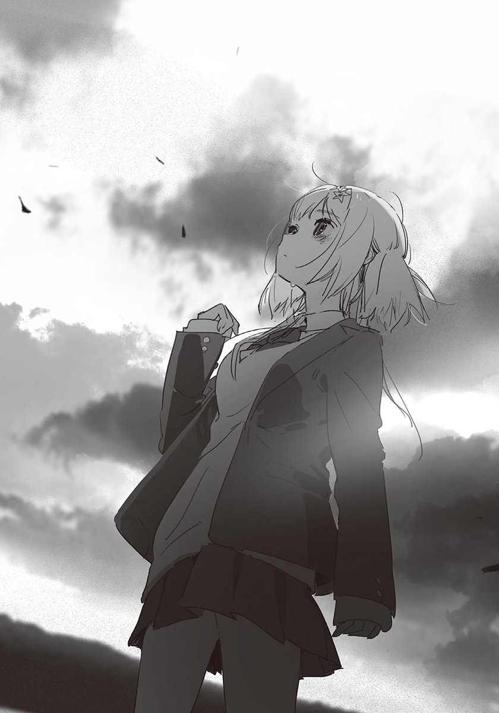【中日对照版】
录入：Raindrop213
针对中日一对一的排版会进行少部分内容的增改，修改部分会附带注释【+】，有需要改进的请联系本人
【原EPUB】
輕之國度×天使動漫錄入組
作者：八目迷
插畫：KUKKA
譯者：呂郁青
圖源：拉菲
掃圖：公子夜殇
錄入：勤奋的懒惰的羊
修圖：不會修圖的kid
輕之國度：http://www.lightnovel.cn
天使動漫：www.tsdm39.net
僅供個人學習交流使用，禁作商業用途
下載後請在24小時內刪除，LK與TSDM不負擔任何責任
請尊重翻譯、掃圖、錄入、校對的辛勤勞動
轉載請保留完整的資訊，否則往後一律禁止